<!DOCTYPE HTML>
<html lang="" >
    <head>
        <meta charset="UTF-8">
        <meta content="text/html; charset=utf-8" http-equiv="Content-Type">
        <title>07_Linux快速入门 · GitBook</title>
        <meta http-equiv="X-UA-Compatible" content="IE=edge" />
        <meta name="description" content="">
        <meta name="generator" content="GitBook 3.2.3">
        
        
        
    
    <link rel="stylesheet" href="../gitbook/style.css">

    
            
                
                <link rel="stylesheet" href="../gitbook/gitbook-plugin-anchors/plugin.css">
                
            
                
                <link rel="stylesheet" href="../gitbook/gitbook-plugin-advanced-emoji/emoji-website.css">
                
            
                
                <link rel="stylesheet" href="../gitbook/gitbook-plugin-search-pro/search.css">
                
            
                
                <link rel="stylesheet" href="../gitbook/gitbook-plugin-page-toc-button/plugin.css">
                
            
                
                <link rel="stylesheet" href="../gitbook/gitbook-plugin-back-to-top-button/plugin.css">
                
            
                
                <link rel="stylesheet" href="../gitbook/gitbook-plugin-chapter-fold/chapter-fold.css">
                
            
                
                <link rel="stylesheet" href="../gitbook/gitbook-plugin-code/plugin.css">
                
            
                
                <link rel="stylesheet" href="../gitbook/gitbook-plugin-splitter/splitter.css">
                
            
                
                <link rel="stylesheet" href="../gitbook/gitbook-plugin-insert-logo/plugin.css">
                
            
                
                <link rel="stylesheet" href="../gitbook/gitbook-plugin-pageview-count/plugin.css">
                
            
                
                <link rel="stylesheet" href="../gitbook/gitbook-plugin-tbfed-pagefooter/footer.css">
                
            
                
                <link rel="stylesheet" href="../gitbook/gitbook-plugin-fontsettings/website.css">
                
            
                
                <link rel="stylesheet" href="../gitbook/gitbook-plugin-theme-comscore/test.css">
                
            
                
                <link rel="stylesheet" href="../gitbook/gitbook-plugin-theme-api/theme-api.css">
                
            
        

    

    
        
    
        
    
        
    
        
    
        
    
        
    

        
    
    
    <meta name="HandheldFriendly" content="true"/>
    <meta name="viewport" content="width=device-width, initial-scale=1, user-scalable=no">
    <meta name="apple-mobile-web-app-capable" content="yes">
    <meta name="apple-mobile-web-app-status-bar-style" content="black">
    <link rel="apple-touch-icon-precomposed" sizes="152x152" href="../gitbook/images/apple-touch-icon-precomposed-152.png">
    <link rel="shortcut icon" href="../gitbook/images/favicon.ico" type="image/x-icon">

    
    <link rel="next" href="08_linux文件管理篇一.html" />
    
    
    <link rel="prev" href="06_vmware安装Linux.html" />
    

    </head>
    <body>
        
<div class="book">
    <div class="book-summary">
        
            
<div id="book-search-input" role="search">
    <input type="text" placeholder="Type to search" />
</div>

            
                <nav role="navigation">
                


<ul class="summary">
    
    

    

    
        
        
    
        <li class="chapter " data-level="1.1" data-path="../">
            
                <a href="../">
            
                    
                    Introduction
            
                </a>
            

            
        </li>
    
        <li class="chapter " data-level="1.2" data-path="0.html">
            
                <a href="0.html">
            
                    
                    01-linux 核心基础
            
                </a>
            

            
            <ul class="articles">
                
    
        <li class="chapter " data-level="1.2.1" data-path="01_Linux云计算运维工程师.html">
            
                <a href="01_Linux云计算运维工程师.html">
            
                    
                    01_Linux云计算运维工程师
            
                </a>
            

            
        </li>
    
        <li class="chapter " data-level="1.2.2" data-path="02_运维基础重要概念.html">
            
                <a href="02_运维基础重要概念.html">
            
                    
                    02_运维基础重要概念
            
                </a>
            

            
        </li>
    
        <li class="chapter " data-level="1.2.3" data-path="03_计算机基础.html">
            
                <a href="03_计算机基础.html">
            
                    
                    03_计算机基础
            
                </a>
            

            
        </li>
    
        <li class="chapter " data-level="1.2.4" data-path="04_操作系统基础.html">
            
                <a href="04_操作系统基础.html">
            
                    
                    04_操作系统基础
            
                </a>
            

            
        </li>
    
        <li class="chapter " data-level="1.2.5" data-path="05_Linux系统搭建.html">
            
                <a href="05_Linux系统搭建.html">
            
                    
                    05_Linux系统搭建
            
                </a>
            

            
        </li>
    
        <li class="chapter " data-level="1.2.6" data-path="06_vmware安装Linux.html">
            
                <a href="06_vmware安装Linux.html">
            
                    
                    06_vmware安装Linux
            
                </a>
            

            
        </li>
    
        <li class="chapter active" data-level="1.2.7" data-path="07_Linux快速入门.html">
            
                <a href="07_Linux快速入门.html">
            
                    
                    07_Linux快速入门
            
                </a>
            

            
        </li>
    
        <li class="chapter " data-level="1.2.8" data-path="08_linux文件管理篇一.html">
            
                <a href="08_linux文件管理篇一.html">
            
                    
                    08_linux文件管理篇一
            
                </a>
            

            
        </li>
    
        <li class="chapter " data-level="1.2.9" data-path="09_linux文件管理篇二.html">
            
                <a href="09_linux文件管理篇二.html">
            
                    
                    09_linux文件管理篇二
            
                </a>
            

            
        </li>
    
        <li class="chapter " data-level="1.2.10" data-path="10_linux用户管理.html">
            
                <a href="10_linux用户管理.html">
            
                    
                    10_linux用户管理
            
                </a>
            

            
        </li>
    
        <li class="chapter " data-level="1.2.11" data-path="11_远程连接linux.html">
            
                <a href="11_远程连接linux.html">
            
                    
                    11_远程连接linux
            
                </a>
            

            
        </li>
    
        <li class="chapter " data-level="1.2.12" data-path="12_linux权限管理.html">
            
                <a href="12_linux权限管理.html">
            
                    
                    12_linux权限管理
            
                </a>
            

            
        </li>
    
        <li class="chapter " data-level="1.2.13" data-path="13_linux基础服务管理.html">
            
                <a href="13_linux基础服务管理.html">
            
                    
                    13_linux基础服务管理
            
                </a>
            

            
        </li>
    
        <li class="chapter " data-level="1.2.14" data-path="14_linux进程与资源管理.html">
            
                <a href="14_linux进程与资源管理.html">
            
                    
                    14_linux进程与资源管理
            
                </a>
            

            
        </li>
    
        <li class="chapter " data-level="1.2.15" data-path="15_YUM与开源项目（Web运维）.html">
            
                <a href="15_YUM与开源项目（Web运维）.html">
            
                    
                    15_YUM与开源项目（Web运维）
            
                </a>
            

            
        </li>
    
        <li class="chapter " data-level="1.2.16" data-path="16_计算机网络.html">
            
                <a href="16_计算机网络.html">
            
                    
                    16_计算机网络
            
                </a>
            

            
        </li>
    
        <li class="chapter " data-level="1.2.17" data-path="17_如果让你来设计网络.html">
            
                <a href="17_如果让你来设计网络.html">
            
                    
                    17_如果让你来设计网络
            
                </a>
            

            
        </li>
    
        <li class="chapter " data-level="1.2.18" data-path="18_OSI模型与TCP协议.html">
            
                <a href="18_OSI模型与TCP协议.html">
            
                    
                    18_OSI模型与TCP协议
            
                </a>
            

            
        </li>
    
        <li class="chapter " data-level="1.2.19" data-path="19_Vmware网络配置.html">
            
                <a href="19_Vmware网络配置.html">
            
                    
                    19_Vmware网络配置
            
                </a>
            

            
        </li>
    
        <li class="chapter " data-level="1.2.20" data-path="20_centos网络配置.html">
            
                <a href="20_centos网络配置.html">
            
                    
                    20_centos网络配置
            
                </a>
            

            
        </li>
    

            </ul>
            
        </li>
    
        <li class="chapter " data-level="1.3" data-path="../02-系统核心服务/00.html">
            
                <a href="../02-系统核心服务/00.html">
            
                    
                    02-系统核心服务
            
                </a>
            

            
            <ul class="articles">
                
    
        <li class="chapter " data-level="1.3.1" data-path="../02-系统核心服务/3-0-Linux重要命令.html">
            
                <a href="../02-系统核心服务/3-0-Linux重要命令.html">
            
                    
                    3-0-Linux重要命令
            
                </a>
            

            
        </li>
    
        <li class="chapter " data-level="1.3.2" data-path="../02-系统核心服务/3-1-软件包管理.html">
            
                <a href="../02-系统核心服务/3-1-软件包管理.html">
            
                    
                    3-1-软件包管理
            
                </a>
            

            
        </li>
    
        <li class="chapter " data-level="1.3.3" data-path="../02-系统核心服务/3-10-黄金web架构之LAMP.html">
            
                <a href="../02-系统核心服务/3-10-黄金web架构之LAMP.html">
            
                    
                    3-10-黄金web架构之LAMP
            
                </a>
            

            
        </li>
    
        <li class="chapter " data-level="1.3.4" data-path="../02-系统核心服务/3-11-磁盘管理.html">
            
                <a href="../02-系统核心服务/3-11-磁盘管理.html">
            
                    
                    3-11-磁盘管理
            
                </a>
            

            
        </li>
    
        <li class="chapter " data-level="1.3.5" data-path="../02-系统核心服务/3-12-磁盘管理二.html">
            
                <a href="../02-系统核心服务/3-12-磁盘管理二.html">
            
                    
                    3-12-磁盘管理二
            
                </a>
            

            
        </li>
    
        <li class="chapter " data-level="1.3.6" data-path="../02-系统核心服务/3-13-Raid磁盘冗余阵列.html">
            
                <a href="../02-系统核心服务/3-13-Raid磁盘冗余阵列.html">
            
                    
                    3-13-Raid磁盘冗余阵列
            
                </a>
            

            
        </li>
    
        <li class="chapter " data-level="1.3.7" data-path="../02-系统核心服务/3-14-lvm逻辑卷管理.html">
            
                <a href="../02-系统核心服务/3-14-lvm逻辑卷管理.html">
            
                    
                    3-14-lvm逻辑卷管理
            
                </a>
            

            
        </li>
    
        <li class="chapter " data-level="1.3.8" data-path="../02-系统核心服务/3-15-通配符和特殊符号.html">
            
                <a href="../02-系统核心服务/3-15-通配符和特殊符号.html">
            
                    
                    3-15-通配符和特殊符号
            
                </a>
            

            
        </li>
    
        <li class="chapter " data-level="1.3.9" data-path="../02-系统核心服务/3-16-正则表达式和三剑客.html">
            
                <a href="../02-系统核心服务/3-16-正则表达式和三剑客.html">
            
                    
                    3-16-正则表达式和三剑客
            
                </a>
            

            
        </li>
    
        <li class="chapter " data-level="1.3.10" data-path="../02-系统核心服务/3-17-sed精讲.html">
            
                <a href="../02-系统核心服务/3-17-sed精讲.html">
            
                    
                    3-17-sed精讲
            
                </a>
            

            
        </li>
    
        <li class="chapter " data-level="1.3.11" data-path="../02-系统核心服务/3-18-1-awk进阶.html">
            
                <a href="../02-系统核心服务/3-18-1-awk进阶.html">
            
                    
                    3-18-1-awk进阶
            
                </a>
            

            
        </li>
    
        <li class="chapter " data-level="1.3.12" data-path="../02-系统核心服务/3-18-awk精讲.html">
            
                <a href="../02-系统核心服务/3-18-awk精讲.html">
            
                    
                    3-18-awk精讲
            
                </a>
            

            
        </li>
    
        <li class="chapter " data-level="1.3.13" data-path="../02-系统核心服务/3-19-正则练习题.html">
            
                <a href="../02-系统核心服务/3-19-正则练习题.html">
            
                    
                    3-19-正则练习题
            
                </a>
            

            
        </li>
    
        <li class="chapter " data-level="1.3.14" data-path="../02-系统核心服务/3-2-yum精讲.html">
            
                <a href="../02-系统核心服务/3-2-yum精讲.html">
            
                    
                    3-2-yum精讲
            
                </a>
            

            
        </li>
    
        <li class="chapter " data-level="1.3.15" data-path="../02-系统核心服务/3-20-sed练习题.html">
            
                <a href="../02-系统核心服务/3-20-sed练习题.html">
            
                    
                    3-20-sed练习题
            
                </a>
            

            
        </li>
    
        <li class="chapter " data-level="1.3.16" data-path="../02-系统核心服务/3-21-awk练习题.html">
            
                <a href="../02-系统核心服务/3-21-awk练习题.html">
            
                    
                    3-21-awk练习题
            
                </a>
            

            
        </li>
    
        <li class="chapter " data-level="1.3.17" data-path="../02-系统核心服务/3-22-什么是Shell.html">
            
                <a href="../02-系统核心服务/3-22-什么是Shell.html">
            
                    
                    3-22-什么是Shell
            
                </a>
            

            
        </li>
    
        <li class="chapter " data-level="1.3.18" data-path="../02-系统核心服务/3-23-Shell快速入门.html">
            
                <a href="../02-系统核心服务/3-23-Shell快速入门.html">
            
                    
                    3-23-Shell快速入门
            
                </a>
            

            
        </li>
    
        <li class="chapter " data-level="1.3.19" data-path="../02-系统核心服务/3-3-SSH远程安全登录.html">
            
                <a href="../02-系统核心服务/3-3-SSH远程安全登录.html">
            
                    
                    3-3-SSH远程安全登录
            
                </a>
            

            
        </li>
    
        <li class="chapter " data-level="1.3.20" data-path="../02-系统核心服务/3-4-Rsync数据同步服务.html">
            
                <a href="../02-系统核心服务/3-4-Rsync数据同步服务.html">
            
                    
                    3-4-Rsync数据同步服务
            
                </a>
            

            
        </li>
    
        <li class="chapter " data-level="1.3.21" data-path="../02-系统核心服务/3-5-Inotify实时数据同步.html">
            
                <a href="../02-系统核心服务/3-5-Inotify实时数据同步.html">
            
                    
                    3-5-Inotify实时数据同步
            
                </a>
            

            
        </li>
    
        <li class="chapter " data-level="1.3.22" data-path="../02-系统核心服务/3-6-文件共享服务之FTP.html">
            
                <a href="../02-系统核心服务/3-6-文件共享服务之FTP.html">
            
                    
                    3-6-文件共享服务之FTP
            
                </a>
            

            
        </li>
    
        <li class="chapter " data-level="1.3.23" data-path="../02-系统核心服务/3-7-文件共享服务之Samba.html">
            
                <a href="../02-系统核心服务/3-7-文件共享服务之Samba.html">
            
                    
                    3-7-文件共享服务之Samba
            
                </a>
            

            
        </li>
    
        <li class="chapter " data-level="1.3.24" data-path="../02-系统核心服务/3-8文件共享服务之NFS.html">
            
                <a href="../02-系统核心服务/3-8文件共享服务之NFS.html">
            
                    
                    3-8文件共享服务之NFS
            
                </a>
            

            
        </li>
    
        <li class="chapter " data-level="1.3.25" data-path="../02-系统核心服务/3-9-域名管理系统之DNS.html">
            
                <a href="../02-系统核心服务/3-9-域名管理系统之DNS.html">
            
                    
                    3-9-域名管理系统之DNS
            
                </a>
            

            
        </li>
    

            </ul>
            
        </li>
    
        <li class="chapter " data-level="1.4" data-path="../03-网站集群架构/0.html">
            
                <a href="../03-网站集群架构/0.html">
            
                    
                    03-网站集群架构
            
                </a>
            

            
            <ul class="articles">
                
    
        <li class="chapter " data-level="1.4.1" data-path="../03-网站集群架构/00-淘宝网的十年架构.html">
            
                <a href="../03-网站集群架构/00-淘宝网的十年架构.html">
            
                    
                    00-淘宝网的十年架构
            
                </a>
            

            
        </li>
    
        <li class="chapter " data-level="1.4.2" data-path="../03-网站集群架构/01-综合架构开篇.html">
            
                <a href="../03-网站集群架构/01-综合架构开篇.html">
            
                    
                    01-综合架构开篇
            
                </a>
            

            
        </li>
    
        <li class="chapter " data-level="1.4.3" data-path="../03-网站集群架构/02-综合架构环境准备.html">
            
                <a href="../03-网站集群架构/02-综合架构环境准备.html">
            
                    
                    02-综合架构环境准备
            
                </a>
            

            
        </li>
    
        <li class="chapter " data-level="1.4.4" data-path="../03-网站集群架构/03-文件共享服务之FTP.html">
            
                <a href="../03-网站集群架构/03-文件共享服务之FTP.html">
            
                    
                    03-文件共享服务之FTP
            
                </a>
            

            
        </li>
    
        <li class="chapter " data-level="1.4.5" data-path="../03-网站集群架构/04-文件共享服务之Samba.html">
            
                <a href="../03-网站集群架构/04-文件共享服务之Samba.html">
            
                    
                    04-文件共享服务之Samba
            
                </a>
            

            
        </li>
    
        <li class="chapter " data-level="1.4.6" data-path="../03-网站集群架构/05-备份工具rsync.html">
            
                <a href="../03-网站集群架构/05-备份工具rsync.html">
            
                    
                    05-备份工具rsync
            
                </a>
            

            
        </li>
    
        <li class="chapter " data-level="1.4.7" data-path="../03-网站集群架构/06-备份任务实战.html">
            
                <a href="../03-网站集群架构/06-备份任务实战.html">
            
                    
                    06-备份任务实战
            
                </a>
            

            
        </li>
    
        <li class="chapter " data-level="1.4.8" data-path="../03-网站集群架构/07-共享存储服务NFS.html">
            
                <a href="../03-网站集群架构/07-共享存储服务NFS.html">
            
                    
                    07-共享存储服务NFS
            
                </a>
            

            
        </li>
    
        <li class="chapter " data-level="1.4.9" data-path="../03-网站集群架构/08-实时同步数据.html">
            
                <a href="../03-网站集群架构/08-实时同步数据.html">
            
                    
                    08-实时同步数据
            
                </a>
            

            
        </li>
    
        <li class="chapter " data-level="1.4.10" data-path="../03-网站集群架构/09-SSH安全登录.html">
            
                <a href="../03-网站集群架构/09-SSH安全登录.html">
            
                    
                    09-SSH安全登录
            
                </a>
            

            
        </li>
    
        <li class="chapter " data-level="1.4.11" data-path="../03-网站集群架构/10--SSH进阶.html">
            
                <a href="../03-网站集群架构/10--SSH进阶.html">
            
                    
                    10--SSH进阶
            
                </a>
            

            
        </li>
    
        <li class="chapter " data-level="1.4.12" data-path="../03-网站集群架构/11-运维自动化Ansible.html">
            
                <a href="../03-网站集群架构/11-运维自动化Ansible.html">
            
                    
                    11-运维自动化Ansible
            
                </a>
            

            
        </li>
    
        <li class="chapter " data-level="1.4.13" data-path="../03-网站集群架构/12-Ansible-playbook剧本.html">
            
                <a href="../03-网站集群架构/12-Ansible-playbook剧本.html">
            
                    
                    12-Ansible-playbook剧本
            
                </a>
            

            
        </li>
    
        <li class="chapter " data-level="1.4.14" data-path="../03-网站集群架构/13-Ansible-playbook剧本进阶.html">
            
                <a href="../03-网站集群架构/13-Ansible-playbook剧本进阶.html">
            
                    
                    13-Ansible-playbook剧本进阶
            
                </a>
            

            
        </li>
    
        <li class="chapter " data-level="1.4.15" data-path="../03-网站集群架构/14-ansible-role角色.html">
            
                <a href="../03-网站集群架构/14-ansible-role角色.html">
            
                    
                    14-ansible-role角色
            
                </a>
            

            
        </li>
    
        <li class="chapter " data-level="1.4.16" data-path="../03-网站集群架构/20-用户访问网站原理.html">
            
                <a href="../03-网站集群架构/20-用户访问网站原理.html">
            
                    
                    20-用户访问网站原理
            
                </a>
            

            
        </li>
    
        <li class="chapter " data-level="1.4.17" data-path="../03-网站集群架构/21-静态资源加速cdn篇.html">
            
                <a href="../03-网站集群架构/21-静态资源加速cdn篇.html">
            
                    
                    21-静态资源加速cdn篇
            
                </a>
            

            
        </li>
    
        <li class="chapter " data-level="1.4.18" data-path="../03-网站集群架构/22-web通信协议篇.html">
            
                <a href="../03-网站集群架构/22-web通信协议篇.html">
            
                    
                    22-web通信协议篇
            
                </a>
            

            
        </li>
    
        <li class="chapter " data-level="1.4.19" data-path="../03-网站集群架构/23-1-nginx虚拟主机实战.html">
            
                <a href="../03-网站集群架构/23-1-nginx虚拟主机实战.html">
            
                    
                    23-1-nginx虚拟主机实战
            
                </a>
            

            
        </li>
    
        <li class="chapter " data-level="1.4.20" data-path="../03-网站集群架构/23-nginx基础篇.html">
            
                <a href="../03-网站集群架构/23-nginx基础篇.html">
            
                    
                    23-nginx基础篇
            
                </a>
            

            
        </li>
    
        <li class="chapter " data-level="1.4.21" data-path="../03-网站集群架构/24-nginx高级篇.html">
            
                <a href="../03-网站集群架构/24-nginx高级篇.html">
            
                    
                    24-nginx高级篇
            
                </a>
            

            
        </li>
    
        <li class="chapter " data-level="1.4.22" data-path="../03-网站集群架构/25-LNMP黄金架构.html">
            
                <a href="../03-网站集群架构/25-LNMP黄金架构.html">
            
                    
                    25-LNMP黄金架构
            
                </a>
            

            
        </li>
    
        <li class="chapter " data-level="1.4.23" data-path="../03-网站集群架构/26-网站集群拆分.html">
            
                <a href="../03-网站集群架构/26-网站集群拆分.html">
            
                    
                    26-网站集群拆分
            
                </a>
            

            
        </li>
    
        <li class="chapter " data-level="1.4.24" data-path="../03-网站集群架构/27-1-负载均衡策略.html">
            
                <a href="../03-网站集群架构/27-1-负载均衡策略.html">
            
                    
                    27-1-负载均衡策略
            
                </a>
            

            
        </li>
    
        <li class="chapter " data-level="1.4.25" data-path="../03-网站集群架构/27-高性能负载均衡集群.html">
            
                <a href="../03-网站集群架构/27-高性能负载均衡集群.html">
            
                    
                    27-高性能负载均衡集群
            
                </a>
            

            
        </li>
    
        <li class="chapter " data-level="1.4.26" data-path="../03-网站集群架构/28-HTTPS.html">
            
                <a href="../03-网站集群架构/28-HTTPS.html">
            
                    
                    28-HTTPS
            
                </a>
            

            
        </li>
    
        <li class="chapter " data-level="1.4.27" data-path="../03-网站集群架构/29-keepalived高可用性负载均衡.html">
            
                <a href="../03-网站集群架构/29-keepalived高可用性负载均衡.html">
            
                    
                    29-keepalived高可用性负载均衡
            
                </a>
            

            
        </li>
    
        <li class="chapter " data-level="1.4.28" data-path="../03-网站集群架构/30-部署Python网站.html">
            
                <a href="../03-网站集群架构/30-部署Python网站.html">
            
                    
                    30-部署Python网站
            
                </a>
            

            
        </li>
    
        <li class="chapter " data-level="1.4.29" data-path="../03-网站集群架构/31-jumpserver实战.html">
            
                <a href="../03-网站集群架构/31-jumpserver实战.html">
            
                    
                    31-jumpserver实战
            
                </a>
            

            
        </li>
    
        <li class="chapter " data-level="1.4.30" data-path="../03-网站集群架构/32-期中综合架构验收.html">
            
                <a href="../03-网站集群架构/32-期中综合架构验收.html">
            
                    
                    32-期中综合架构验收
            
                </a>
            

            
        </li>
    

            </ul>
            
        </li>
    
        <li class="chapter " data-level="1.5" data-path="../04-shell编程/0.html">
            
                <a href="../04-shell编程/0.html">
            
                    
                    04-shell编程
            
                </a>
            

            
            <ul class="articles">
                
    
        <li class="chapter " data-level="1.5.1" data-path="../04-shell编程/01-shell基础概述.html">
            
                <a href="../04-shell编程/01-shell基础概述.html">
            
                    
                    01-Shell基础概述
            
                </a>
            

            
        </li>
    
        <li class="chapter " data-level="1.5.2" data-path="../04-shell编程/02-shell变量.html">
            
                <a href="../04-shell编程/02-shell变量.html">
            
                    
                    02-Shell变量
            
                </a>
            

            
        </li>
    
        <li class="chapter " data-level="1.5.3" data-path="../04-shell编程/03-条件判断.html">
            
                <a href="../04-shell编程/03-条件判断.html">
            
                    
                    03-条件判断
            
                </a>
            

            
        </li>
    
        <li class="chapter " data-level="1.5.4" data-path="../04-shell编程/04-流程控制之if.html">
            
                <a href="../04-shell编程/04-流程控制之if.html">
            
                    
                    04-流程控制之if
            
                </a>
            

            
        </li>
    
        <li class="chapter " data-level="1.5.5" data-path="../04-shell编程/05-流程控制之case.html">
            
                <a href="../04-shell编程/05-流程控制之case.html">
            
                    
                    05-流程控制之case
            
                </a>
            

            
        </li>
    
        <li class="chapter " data-level="1.5.6" data-path="../04-shell编程/06-流程控制之for循环结构.html">
            
                <a href="../04-shell编程/06-流程控制之for循环结构.html">
            
                    
                    06-流程控制之for循环结构
            
                </a>
            

            
        </li>
    
        <li class="chapter " data-level="1.5.7" data-path="../04-shell编程/07-流程控制之while循环.html">
            
                <a href="../04-shell编程/07-流程控制之while循环.html">
            
                    
                    07-流程控制之while循环
            
                </a>
            

            
        </li>
    
        <li class="chapter " data-level="1.5.8" data-path="../04-shell编程/08-循环控制.html">
            
                <a href="../04-shell编程/08-循环控制.html">
            
                    
                    08-循环控制
            
                </a>
            

            
        </li>
    
        <li class="chapter " data-level="1.5.9" data-path="../04-shell编程/09-shell函数.html">
            
                <a href="../04-shell编程/09-shell函数.html">
            
                    
                    09-Shell函数
            
                </a>
            

            
        </li>
    
        <li class="chapter " data-level="1.5.10" data-path="../04-shell编程/10-shell数组.html">
            
                <a href="../04-shell编程/10-shell数组.html">
            
                    
                    10-Shell数组
            
                </a>
            

            
        </li>
    
        <li class="chapter " data-level="1.5.11" data-path="../04-shell编程/脚本练习题库.html">
            
                <a href="../04-shell编程/脚本练习题库.html">
            
                    
                    脚本练习题库
            
                </a>
            

            
        </li>
    

            </ul>
            
        </li>
    
        <li class="chapter " data-level="1.6" data-path="../05-监控系统/00.html">
            
                <a href="../05-监控系统/00.html">
            
                    
                    05-监控系统
            
                </a>
            

            
            <ul class="articles">
                
    
        <li class="chapter " data-level="1.6.1" data-path="../05-监控系统/00-监控系统.html">
            
                <a href="../05-监控系统/00-监控系统.html">
            
                    
                    00-监控系统
            
                </a>
            

            
        </li>
    
        <li class="chapter " data-level="1.6.2" data-path="../05-监控系统/01-监控体系理论.html">
            
                <a href="../05-监控系统/01-监控体系理论.html">
            
                    
                    01-监控体系理论
            
                </a>
            

            
        </li>
    
        <li class="chapter " data-level="1.6.3" data-path="../05-监控系统/02-zabbix安装部署.html">
            
                <a href="../05-监控系统/02-zabbix安装部署.html">
            
                    
                    02-zabbix安装部署
            
                </a>
            

            
        </li>
    
        <li class="chapter " data-level="1.6.4" data-path="../05-监控系统/03-zabbix如何监控服务器.html">
            
                <a href="../05-监控系统/03-zabbix如何监控服务器.html">
            
                    
                    03-zabbix如何监控服务器
            
                </a>
            

            
        </li>
    
        <li class="chapter " data-level="1.6.5" data-path="../05-监控系统/04-1-微信报警.html">
            
                <a href="../05-监控系统/04-1-微信报警.html">
            
                    
                    04-1-微信报警
            
                </a>
            

            
        </li>
    
        <li class="chapter " data-level="1.6.6" data-path="../05-监控系统/04-2-钉钉报警.html">
            
                <a href="../05-监控系统/04-2-钉钉报警.html">
            
                    
                    04-2-钉钉报警
            
                </a>
            

            
        </li>
    
        <li class="chapter " data-level="1.6.7" data-path="../05-监控系统/04-自定义监控项.html">
            
                <a href="../05-监控系统/04-自定义监控项.html">
            
                    
                    04-自定义监控项
            
                </a>
            

            
        </li>
    
        <li class="chapter " data-level="1.6.8" data-path="../05-监控系统/05-自定义监控模板.html">
            
                <a href="../05-监控系统/05-自定义监控模板.html">
            
                    
                    05-自定义监控模板
            
                </a>
            

            
        </li>
    
        <li class="chapter " data-level="1.6.9" data-path="../05-监控系统/06-1-nginx监控.html">
            
                <a href="../05-监控系统/06-1-nginx监控.html">
            
                    
                    06-1-nginx监控
            
                </a>
            

            
        </li>
    
        <li class="chapter " data-level="1.6.10" data-path="../05-监控系统/06-2-php监控.html">
            
                <a href="../05-监控系统/06-2-php监控.html">
            
                    
                    06-2-php监控
            
                </a>
            

            
        </li>
    
        <li class="chapter " data-level="1.6.11" data-path="../05-监控系统/06-3-mysql监控.html">
            
                <a href="../05-监控系统/06-3-mysql监控.html">
            
                    
                    06-3-mysql监控
            
                </a>
            

            
        </li>
    
        <li class="chapter " data-level="1.6.12" data-path="../05-监控系统/06-4-redis监控.html">
            
                <a href="../05-监控系统/06-4-redis监控.html">
            
                    
                    06-4-redis监控
            
                </a>
            

            
        </li>
    
        <li class="chapter " data-level="1.6.13" data-path="../05-监控系统/06-5-tomcat监控.html">
            
                <a href="../05-监控系统/06-5-tomcat监控.html">
            
                    
                    06-5-tomcat监控
            
                </a>
            

            
        </li>
    
        <li class="chapter " data-level="1.6.14" data-path="../05-监控系统/06-6-模拟登录之web监控.html">
            
                <a href="../05-监控系统/06-6-模拟登录之web监控.html">
            
                    
                    06-6-模拟登录之web监控
            
                </a>
            

            
        </li>
    
        <li class="chapter " data-level="1.6.15" data-path="../05-监控系统/06-zabbix监控核心服务.html">
            
                <a href="../05-监控系统/06-zabbix监控核心服务.html">
            
                    
                    06-zabbix监控核心服务
            
                </a>
            

            
        </li>
    
        <li class="chapter " data-level="1.6.16" data-path="../05-监控系统/07-1-zabbix-agent修改主动模式.html">
            
                <a href="../05-监控系统/07-1-zabbix-agent修改主动模式.html">
            
                    
                    07-1-zabbix-agent修改主动模式
            
                </a>
            

            
        </li>
    
        <li class="chapter " data-level="1.6.17" data-path="../05-监控系统/07-2-zabbix自动发现.html">
            
                <a href="../05-监控系统/07-2-zabbix自动发现.html">
            
                    
                    07-2-zabbix自动发现
            
                </a>
            

            
        </li>
    
        <li class="chapter " data-level="1.6.18" data-path="../05-监控系统/07-3-zabbix自动注册.html">
            
                <a href="../05-监控系统/07-3-zabbix自动注册.html">
            
                    
                    07-3-zabbix自动注册
            
                </a>
            

            
        </li>
    
        <li class="chapter " data-level="1.6.19" data-path="../05-监控系统/07-zabbix工作模式.html">
            
                <a href="../05-监控系统/07-zabbix工作模式.html">
            
                    
                    07-zabbix工作模式
            
                </a>
            

            
        </li>
    
        <li class="chapter " data-level="1.6.20" data-path="../05-监控系统/08-zabbix分布式proxy.html">
            
                <a href="../05-监控系统/08-zabbix分布式proxy.html">
            
                    
                    08-zabbix分布式proxy
            
                </a>
            

            
        </li>
    

            </ul>
            
        </li>
    
        <li class="chapter " data-level="1.7" data-path="../06-敏捷开发流水线/00.html">
            
                <a href="../06-敏捷开发流水线/00.html">
            
                    
                    06-敏捷开发流水线
            
                </a>
            

            
            <ul class="articles">
                
    
        <li class="chapter " data-level="1.7.1" data-path="../06-敏捷开发流水线/00-版本控制系统.html">
            
                <a href="../06-敏捷开发流水线/00-版本控制系统.html">
            
                    
                    00-版本控制系统
            
                </a>
            

            
        </li>
    
        <li class="chapter " data-level="1.7.2" data-path="../06-敏捷开发流水线/01-git工具.html">
            
                <a href="../06-敏捷开发流水线/01-git工具.html">
            
                    
                    01-git工具
            
                </a>
            

            
        </li>
    
        <li class="chapter " data-level="1.7.3" data-path="../06-敏捷开发流水线/02-git与gitee码云.html">
            
                <a href="../06-敏捷开发流水线/02-git与gitee码云.html">
            
                    
                    02-git与gitee码云
            
                </a>
            

            
        </li>
    
        <li class="chapter " data-level="1.7.4" data-path="../06-敏捷开发流水线/03-gitlab私有仓库搭建.html">
            
                <a href="../06-敏捷开发流水线/03-gitlab私有仓库搭建.html">
            
                    
                    03-gitlab私有仓库搭建
            
                </a>
            

            
        </li>
    
        <li class="chapter " data-level="1.7.5" data-path="../06-敏捷开发流水线/04-jenkins.html">
            
                <a href="../06-敏捷开发流水线/04-jenkins.html">
            
                    
                    04-jenkins
            
                </a>
            

            
        </li>
    
        <li class="chapter " data-level="1.7.6" data-path="../06-敏捷开发流水线/05-jenkins结合远程仓库.html">
            
                <a href="../06-敏捷开发流水线/05-jenkins结合远程仓库.html">
            
                    
                    05-jenkins结合远程仓库
            
                </a>
            

            
        </li>
    
        <li class="chapter " data-level="1.7.7" data-path="../06-敏捷开发流水线/06-自动化发布静态页面.html">
            
                <a href="../06-敏捷开发流水线/06-自动化发布静态页面.html">
            
                    
                    06-自动化发布静态页面
            
                </a>
            

            
        </li>
    
        <li class="chapter " data-level="1.7.8" data-path="../06-敏捷开发流水线/07-SonarQube代码质量扫描工具.html">
            
                <a href="../06-敏捷开发流水线/07-SonarQube代码质量扫描工具.html">
            
                    
                    07-SonarQube代码质量扫描工具
            
                </a>
            

            
        </li>
    
        <li class="chapter " data-level="1.7.9" data-path="../06-敏捷开发流水线/08-jenkins发布Java项目.html">
            
                <a href="../06-敏捷开发流水线/08-jenkins发布Java项目.html">
            
                    
                    08-jenkins发布Java项目
            
                </a>
            

            
        </li>
    
        <li class="chapter " data-level="1.7.10" data-path="../06-敏捷开发流水线/09-jenkins流水线pipeline.html">
            
                <a href="../06-敏捷开发流水线/09-jenkins流水线pipeline.html">
            
                    
                    09-jenkins流水线pipeline
            
                </a>
            

            
        </li>
    

            </ul>
            
        </li>
    
        <li class="chapter " data-level="1.8" data-path="../07-数据库运维/00.html">
            
                <a href="../07-数据库运维/00.html">
            
                    
                    07-数据库运维
            
                </a>
            

            
            <ul class="articles">
                
    
        <li class="chapter " data-level="1.8.1" data-path="../07-数据库运维/02-1-数据库基础知识.html">
            
                <a href="../07-数据库运维/02-1-数据库基础知识.html">
            
                    
                    02-1-数据库基础知识
            
                </a>
            

            
        </li>
    
        <li class="chapter " data-level="1.8.2" data-path="../07-数据库运维/02-10-主从复制高级.html">
            
                <a href="../07-数据库运维/02-10-主从复制高级.html">
            
                    
                    02-10-主从复制高级
            
                </a>
            

            
        </li>
    
        <li class="chapter " data-level="1.8.3" data-path="../07-数据库运维/02-11-高可用集群MHA方案.html">
            
                <a href="../07-数据库运维/02-11-高可用集群MHA方案.html">
            
                    
                    02-11-高可用集群MHA方案
            
                </a>
            

            
        </li>
    
        <li class="chapter " data-level="1.8.4" data-path="../07-数据库运维/02-2-mysql基础实践.html">
            
                <a href="../07-数据库运维/02-2-mysql基础实践.html">
            
                    
                    02-2-mysql基础实践
            
                </a>
            

            
        </li>
    
        <li class="chapter " data-level="1.8.5" data-path="../07-数据库运维/02-3-mysql运维核心基础.html">
            
                <a href="../07-数据库运维/02-3-mysql运维核心基础.html">
            
                    
                    02-3-mysql运维核心基础
            
                </a>
            

            
        </li>
    
        <li class="chapter " data-level="1.8.6" data-path="../07-数据库运维/02-4-SQL语句一.html">
            
                <a href="../07-数据库运维/02-4-SQL语句一.html">
            
                    
                    02-4-SQL语句一
            
                </a>
            

            
        </li>
    
        <li class="chapter " data-level="1.8.7" data-path="../07-数据库运维/02-5-SQL语句二.html">
            
                <a href="../07-数据库运维/02-5-SQL语句二.html">
            
                    
                    02-5-SQL语句二
            
                </a>
            

            
        </li>
    
        <li class="chapter " data-level="1.8.8" data-path="../07-数据库运维/02-6-mysql备份方案.html">
            
                <a href="../07-数据库运维/02-6-mysql备份方案.html">
            
                    
                    02-6-mysql备份方案
            
                </a>
            

            
        </li>
    
        <li class="chapter " data-level="1.8.9" data-path="../07-数据库运维/02-7-mysql备份实战.html">
            
                <a href="../07-数据库运维/02-7-mysql备份实战.html">
            
                    
                    02-7-mysql备份实战
            
                </a>
            

            
        </li>
    
        <li class="chapter " data-level="1.8.10" data-path="../07-数据库运维/02-8-xtrabackup备份工具.html">
            
                <a href="../07-数据库运维/02-8-xtrabackup备份工具.html">
            
                    
                    02-8-xtrabackup备份工具
            
                </a>
            

            
        </li>
    
        <li class="chapter " data-level="1.8.11" data-path="../07-数据库运维/02-9-主从复制架构.html">
            
                <a href="../07-数据库运维/02-9-主从复制架构.html">
            
                    
                    02-9-主从复制架构
            
                </a>
            

            
        </li>
    
        <li class="chapter " data-level="1.8.12" data-path="../07-数据库运维/02-DBA之路.html">
            
                <a href="../07-数据库运维/02-DBA之路.html">
            
                    
                    02-DBA之路
            
                </a>
            

            
        </li>
    

            </ul>
            
        </li>
    
        <li class="chapter " data-level="1.9" data-path="../08-缓存redis/00.html">
            
                <a href="../08-缓存redis/00.html">
            
                    
                    08-缓存 redis
            
                </a>
            

            
            <ul class="articles">
                
    
        <li class="chapter " data-level="1.9.1" data-path="../08-缓存redis/01-redis部署与数据类型.html">
            
                <a href="../08-缓存redis/01-redis部署与数据类型.html">
            
                    
                    01-redis部署与数据类型
            
                </a>
            

            
        </li>
    
        <li class="chapter " data-level="1.9.2" data-path="../08-缓存redis/02-redis数据类型篇.html">
            
                <a href="../08-缓存redis/02-redis数据类型篇.html">
            
                    
                    02-redis数据类型篇
            
                </a>
            

            
        </li>
    
        <li class="chapter " data-level="1.9.3" data-path="../08-缓存redis/03-redis数据持久化篇.html">
            
                <a href="../08-缓存redis/03-redis数据持久化篇.html">
            
                    
                    03-redis数据持久化篇
            
                </a>
            

            
        </li>
    
        <li class="chapter " data-level="1.9.4" data-path="../08-缓存redis/04-redis安全篇.html">
            
                <a href="../08-缓存redis/04-redis安全篇.html">
            
                    
                    04-redis安全篇
            
                </a>
            

            
        </li>
    
        <li class="chapter " data-level="1.9.5" data-path="../08-缓存redis/05-redis主从复制篇.html">
            
                <a href="../08-缓存redis/05-redis主从复制篇.html">
            
                    
                    05-redis主从复制篇
            
                </a>
            

            
        </li>
    
        <li class="chapter " data-level="1.9.6" data-path="../08-缓存redis/06-redis高可用哨兵篇.html">
            
                <a href="../08-缓存redis/06-redis高可用哨兵篇.html">
            
                    
                    06-redis高可用哨兵篇
            
                </a>
            

            
        </li>
    
        <li class="chapter " data-level="1.9.7" data-path="../08-缓存redis/07-reids分片技术cluster篇.html">
            
                <a href="../08-缓存redis/07-reids分片技术cluster篇.html">
            
                    
                    07-reids分片技术cluster篇
            
                </a>
            

            
        </li>
    
        <li class="chapter " data-level="1.9.8" data-path="../08-缓存redis/08-redis自动化安装.html">
            
                <a href="../08-缓存redis/08-redis自动化安装.html">
            
                    
                    08-redis自动化安装
            
                </a>
            

            
        </li>
    
        <li class="chapter " data-level="1.9.9" data-path="../08-缓存redis/09-redis实战技巧.html">
            
                <a href="../08-缓存redis/09-redis实战技巧.html">
            
                    
                    09-redis实战技巧
            
                </a>
            

            
        </li>
    

            </ul>
            
        </li>
    
        <li class="chapter " data-level="1.10" data-path="../09-java运维/00.html">
            
                <a href="../09-java运维/00.html">
            
                    
                    09-java 运维
            
                </a>
            

            
            <ul class="articles">
                
    
        <li class="chapter " data-level="1.10.1" data-path="../09-java运维/01-Tomcat.html">
            
                <a href="../09-java运维/01-Tomcat.html">
            
                    
                    01-Tomcat
            
                </a>
            

            
        </li>
    

            </ul>
            
        </li>
    
        <li class="chapter " data-level="1.11" data-path="../10-云原生容器编排/00.html">
            
                <a href="../10-云原生容器编排/00.html">
            
                    
                    10-云原生容器编排
            
                </a>
            

            
            <ul class="articles">
                
    
        <li class="chapter " data-level="1.11.1" data-path="../10-云原生容器编排/docker-all/00.html">
            
                <a href="../10-云原生容器编排/docker-all/00.html">
            
                    
                    docker-all
            
                </a>
            

            
            <ul class="articles">
                
    
        <li class="chapter " data-level="1.11.1.1" data-path="../10-云原生容器编排/docker-all/01_docker技术详解.html">
            
                <a href="../10-云原生容器编排/docker-all/01_docker技术详解.html">
            
                    
                    01_docker技术详解
            
                </a>
            

            
        </li>
    
        <li class="chapter " data-level="1.11.1.2" data-path="../10-云原生容器编排/docker-all/02_docker安装部署.html">
            
                <a href="../10-云原生容器编排/docker-all/02_docker安装部署.html">
            
                    
                    02_docker安装部署
            
                </a>
            

            
        </li>
    
        <li class="chapter " data-level="1.11.1.3" data-path="../10-云原生容器编排/docker-all/03_docker存储与网络.html">
            
                <a href="../10-云原生容器编排/docker-all/03_docker存储与网络.html">
            
                    
                    03_docker存储与网络
            
                </a>
            

            
        </li>
    
        <li class="chapter " data-level="1.11.1.4" data-path="../10-云原生容器编排/docker-all/04_dockerfile构建镜像.html">
            
                <a href="../10-云原生容器编排/docker-all/04_dockerfile构建镜像.html">
            
                    
                    04_dockerfile构建镜像
            
                </a>
            

            
        </li>
    
        <li class="chapter " data-level="1.11.1.5" data-path="../10-云原生容器编排/docker-all/05-企业级私有仓库Harbor.html">
            
                <a href="../10-云原生容器编排/docker-all/05-企业级私有仓库Harbor.html">
            
                    
                    05-企业级私有仓库Harbor
            
                </a>
            

            
        </li>
    
        <li class="chapter " data-level="1.11.1.6" data-path="../10-云原生容器编排/docker-all/06-docker网络模式.html">
            
                <a href="../10-云原生容器编排/docker-all/06-docker网络模式.html">
            
                    
                    06-docker网络模式
            
                </a>
            

            
        </li>
    
        <li class="chapter " data-level="1.11.1.7" data-path="../10-云原生容器编排/docker-all/07-docker容器单机编排.html">
            
                <a href="../10-云原生容器编排/docker-all/07-docker容器单机编排.html">
            
                    
                    07-docker容器单机编排
            
                </a>
            

            
        </li>
    
        <li class="chapter " data-level="1.11.1.8" data-path="../10-云原生容器编排/docker-all/08-docker容器跨主机通信.html">
            
                <a href="../10-云原生容器编排/docker-all/08-docker容器跨主机通信.html">
            
                    
                    08-docker容器跨主机通信
            
                </a>
            

            
        </li>
    
        <li class="chapter " data-level="1.11.1.9" data-path="../10-云原生容器编排/docker-all/09-docker综合应用.html">
            
                <a href="../10-云原生容器编排/docker-all/09-docker综合应用.html">
            
                    
                    09-docker综合应用
            
                </a>
            

            
        </li>
    
        <li class="chapter " data-level="1.11.1.10" data-path="../10-云原生容器编排/docker-all/10-容器化部署案例.html">
            
                <a href="../10-云原生容器编排/docker-all/10-容器化部署案例.html">
            
                    
                    10-容器化部署案例
            
                </a>
            

            
        </li>
    
        <li class="chapter " data-level="1.11.1.11" data-path="../10-云原生容器编排/docker-all/11-容器监控方案.html">
            
                <a href="../10-云原生容器编排/docker-all/11-容器监控方案.html">
            
                    
                    11-容器监控方案
            
                </a>
            

            
        </li>
    

            </ul>
            
        </li>
    
        <li class="chapter " data-level="1.11.2" data-path="../10-云原生容器编排/iptables/00.html">
            
                <a href="../10-云原生容器编排/iptables/00.html">
            
                    
                    iptables
            
                </a>
            

            
            <ul class="articles">
                
    
        <li class="chapter " data-level="1.11.2.1" data-path="../10-云原生容器编排/iptables/00-iptables防火墙安全.html">
            
                <a href="../10-云原生容器编排/iptables/00-iptables防火墙安全.html">
            
                    
                    00-iptables防火墙安全
            
                </a>
            

            
        </li>
    
        <li class="chapter " data-level="1.11.2.2" data-path="../10-云原生容器编排/iptables/01-iptables命令.html">
            
                <a href="../10-云原生容器编排/iptables/01-iptables命令.html">
            
                    
                    01-iptables命令
            
                </a>
            

            
        </li>
    

            </ul>
            
        </li>
    
        <li class="chapter " data-level="1.11.3" data-path="../10-云原生容器编排/kvm-all/00.html">
            
                <a href="../10-云原生容器编排/kvm-all/00.html">
            
                    
                    kvm
            
                </a>
            

            
            <ul class="articles">
                
    
        <li class="chapter " data-level="1.11.3.1" data-path="../10-云原生容器编排/kvm-all/01-kvm虚拟化实践.html">
            
                <a href="../10-云原生容器编排/kvm-all/01-kvm虚拟化实践.html">
            
                    
                    01-kvm虚拟化实践
            
                </a>
            

            
        </li>
    
        <li class="chapter " data-level="1.11.3.2" data-path="../10-云原生容器编排/kvm-all/02-kvm进阶实践.html">
            
                <a href="../10-云原生容器编排/kvm-all/02-kvm进阶实践.html">
            
                    
                    02-kvm进阶实践
            
                </a>
            

            
        </li>
    

            </ul>
            
        </li>
    
        <li class="chapter " data-level="1.11.4" data-path="../10-云原生容器编排/k8s-all/00.html">
            
                <a href="../10-云原生容器编排/k8s-all/00.html">
            
                    
                    k8s-all
            
                </a>
            

            
            <ul class="articles">
                
    
        <li class="chapter " data-level="1.11.4.1" data-path="../10-云原生容器编排/k8s-all/00_k8s容器编排系统.html">
            
                <a href="../10-云原生容器编排/k8s-all/00_k8s容器编排系统.html">
            
                    
                    00_k8s容器编排系统
            
                </a>
            

            
        </li>
    
        <li class="chapter " data-level="1.11.4.2" data-path="../10-云原生容器编排/k8s-all/01_kubeadm安装k8s集群.html">
            
                <a href="../10-云原生容器编排/k8s-all/01_kubeadm安装k8s集群.html">
            
                    
                    01_kubeadm安装k8s集群
            
                </a>
            

            
        </li>
    
        <li class="chapter " data-level="1.11.4.3" data-path="../10-云原生容器编排/k8s-all/02_k8s资源清单.html">
            
                <a href="../10-云原生容器编排/k8s-all/02_k8s资源清单.html">
            
                    
                    02_k8s资源清单
            
                </a>
            

            
        </li>
    
        <li class="chapter " data-level="1.11.4.4" data-path="../10-云原生容器编排/k8s-all/03_pod详解.html">
            
                <a href="../10-云原生容器编排/k8s-all/03_pod详解.html">
            
                    
                    03_pod详解
            
                </a>
            

            
        </li>
    
        <li class="chapter " data-level="1.11.4.5" data-path="../10-云原生容器编排/k8s-all/04_pod控制器详解.html">
            
                <a href="../10-云原生容器编排/k8s-all/04_pod控制器详解.html">
            
                    
                    04_pod控制器详解
            
                </a>
            

            
        </li>
    
        <li class="chapter " data-level="1.11.4.6" data-path="../10-云原生容器编排/k8s-all/05-k8s网络.html">
            
                <a href="../10-云原生容器编排/k8s-all/05-k8s网络.html">
            
                    
                    05-k8s网络
            
                </a>
            

            
        </li>
    
        <li class="chapter " data-level="1.11.4.7" data-path="../10-云原生容器编排/k8s-all/06-k8s数据持久化.html">
            
                <a href="../10-云原生容器编排/k8s-all/06-k8s数据持久化.html">
            
                    
                    06-k8s数据持久化
            
                </a>
            

            
        </li>
    
        <li class="chapter " data-level="1.11.4.8" data-path="../10-云原生容器编排/k8s-all/07-k8s配置文件管理.html">
            
                <a href="../10-云原生容器编排/k8s-all/07-k8s配置文件管理.html">
            
                    
                    07-k8s配置文件管理
            
                </a>
            

            
        </li>
    
        <li class="chapter " data-level="1.11.4.9" data-path="../10-云原生容器编排/k8s-all/08-dashboard.html">
            
                <a href="../10-云原生容器编排/k8s-all/08-dashboard.html">
            
                    
                    08-dashboard
            
                </a>
            

            
        </li>
    
        <li class="chapter " data-level="1.11.4.10" data-path="../10-云原生容器编排/k8s-all/09-prometheus.html">
            
                <a href="../10-云原生容器编排/k8s-all/09-prometheus.html">
            
                    
                    09-prometheus
            
                </a>
            

            
        </li>
    

            </ul>
            
        </li>
    

            </ul>
            
        </li>
    
        <li class="chapter " data-level="1.12" data-path="../11-mongodb/0.html">
            
                <a href="../11-mongodb/0.html">
            
                    
                    11-mongodb
            
                </a>
            

            
            <ul class="articles">
                
    
        <li class="chapter " data-level="1.12.1" data-path="../11-mongodb/01-mongodb安装.html">
            
                <a href="../11-mongodb/01-mongodb安装.html">
            
                    
                    01-mongodb安装
            
                </a>
            

            
        </li>
    
        <li class="chapter " data-level="1.12.2" data-path="../11-mongodb/02-mongodb增删改查.html">
            
                <a href="../11-mongodb/02-mongodb增删改查.html">
            
                    
                    02-mongodb增删改查
            
                </a>
            

            
        </li>
    
        <li class="chapter " data-level="1.12.3" data-path="../11-mongodb/03-mongodb基于角色的访问控制.html">
            
                <a href="../11-mongodb/03-mongodb基于角色的访问控制.html">
            
                    
                    03-mongodb基于角色的访问控制
            
                </a>
            

            
        </li>
    
        <li class="chapter " data-level="1.12.4" data-path="../11-mongodb/04-副本集replicaSet.html">
            
                <a href="../11-mongodb/04-副本集replicaSet.html">
            
                    
                    04-副本集replicaSet
            
                </a>
            

            
        </li>
    
        <li class="chapter " data-level="1.12.5" data-path="../11-mongodb/05-mongodb备份恢复.html">
            
                <a href="../11-mongodb/05-mongodb备份恢复.html">
            
                    
                    05-mongodb备份恢复
            
                </a>
            

            
        </li>
    

            </ul>
            
        </li>
    
        <li class="chapter " data-level="1.13" data-path="../12-zookeeper/0.html">
            
                <a href="../12-zookeeper/0.html">
            
                    
                    12-zookeeper
            
                </a>
            

            
            <ul class="articles">
                
    
        <li class="chapter " data-level="1.13.1" data-path="../12-zookeeper/01-zookeeper.html">
            
                <a href="../12-zookeeper/01-zookeeper.html">
            
                    
                    01-zookeeper
            
                </a>
            

            
        </li>
    
        <li class="chapter " data-level="1.13.2" data-path="../12-zookeeper/02-zk实践操作.html">
            
                <a href="../12-zookeeper/02-zk实践操作.html">
            
                    
                    02-zk实践操作
            
                </a>
            

            
        </li>
    
        <li class="chapter " data-level="1.13.3" data-path="../12-zookeeper/03-python-API开发zk客户端.html">
            
                <a href="../12-zookeeper/03-python-API开发zk客户端.html">
            
                    
                    03-python-API开发zk客户端
            
                </a>
            

            
        </li>
    

            </ul>
            
        </li>
    
        <li class="chapter " data-level="1.14" data-path="../13-kafka/0.html">
            
                <a href="../13-kafka/0.html">
            
                    
                    13-kafka
            
                </a>
            

            
            <ul class="articles">
                
    
        <li class="chapter " data-level="1.14.1" data-path="../13-kafka/01-kafka基础.html">
            
                <a href="../13-kafka/01-kafka基础.html">
            
                    
                    01-kafka基础
            
                </a>
            

            
        </li>
    
        <li class="chapter " data-level="1.14.2" data-path="../13-kafka/02-kafka集群.html">
            
                <a href="../13-kafka/02-kafka集群.html">
            
                    
                    02-kafka集群
            
                </a>
            

            
        </li>
    

            </ul>
            
        </li>
    
        <li class="chapter " data-level="1.15" data-path="../14-ELK/0.html">
            
                <a href="../14-ELK/0.html">
            
                    
                    14-ELK
            
                </a>
            

            
            <ul class="articles">
                
    
        <li class="chapter " data-level="1.15.1" data-path="../14-ELK/01-elasticSearch.html">
            
                <a href="../14-ELK/01-elasticSearch.html">
            
                    
                    01-elasticSearch
            
                </a>
            

            
        </li>
    
        <li class="chapter " data-level="1.15.2" data-path="../14-ELK/02-ES集群.html">
            
                <a href="../14-ELK/02-ES集群.html">
            
                    
                    02-ES集群
            
                </a>
            

            
        </li>
    
        <li class="chapter " data-level="1.15.3" data-path="../14-ELK/03-ES进阶.html">
            
                <a href="../14-ELK/03-ES进阶.html">
            
                    
                    03-ES进阶
            
                </a>
            

            
        </li>
    
        <li class="chapter " data-level="1.15.4" data-path="../14-ELK/04-ES备份恢复.html">
            
                <a href="../14-ELK/04-ES备份恢复.html">
            
                    
                    04-ES备份恢复
            
                </a>
            

            
        </li>
    
        <li class="chapter " data-level="1.15.5" data-path="../14-ELK/05-EBLK日志收集方案.html">
            
                <a href="../14-ELK/05-EBLK日志收集方案.html">
            
                    
                    05-EBLK日志收集方案
            
                </a>
            

            
        </li>
    
        <li class="chapter " data-level="1.15.6" data-path="../14-ELK/06-ELK收集主流应用日志.html">
            
                <a href="../14-ELK/06-ELK收集主流应用日志.html">
            
                    
                    06-ELK收集主流应用日志
            
                </a>
            

            
        </li>
    
        <li class="chapter " data-level="1.15.7" data-path="../14-ELK/07-filebeat实战.html">
            
                <a href="../14-ELK/07-filebeat实战.html">
            
                    
                    07-filebeat实战
            
                </a>
            

            
        </li>
    

            </ul>
            
        </li>
    
        <li class="chapter " data-level="1.16" data-path="../15-阿里云/0.html">
            
                <a href="../15-阿里云/0.html">
            
                    
                    15-阿里云
            
                </a>
            

            
            <ul class="articles">
                
    
        <li class="chapter " data-level="1.16.1" data-path="../15-阿里云/01-阿里云实战.html">
            
                <a href="../15-阿里云/01-阿里云实战.html">
            
                    
                    01-阿里云实战
            
                </a>
            

            
        </li>
    
        <li class="chapter " data-level="1.16.2" data-path="../15-阿里云/02-阿里云数据库RDS.html">
            
                <a href="../15-阿里云/02-阿里云数据库RDS.html">
            
                    
                    02-阿里云数据库RDS
            
                </a>
            

            
        </li>
    
        <li class="chapter " data-level="1.16.3" data-path="../15-阿里云/03-阿里云负载均衡SLB.html">
            
                <a href="../15-阿里云/03-阿里云负载均衡SLB.html">
            
                    
                    03-阿里云负载均衡SLB
            
                </a>
            

            
        </li>
    
        <li class="chapter " data-level="1.16.4" data-path="../15-阿里云/04-阿里云NAS.html">
            
                <a href="../15-阿里云/04-阿里云NAS.html">
            
                    
                    04-阿里云NAS
            
                </a>
            

            
        </li>
    
        <li class="chapter " data-level="1.16.5" data-path="../15-阿里云/05-阿里云Redis.html">
            
                <a href="../15-阿里云/05-阿里云Redis.html">
            
                    
                    05-阿里云Redis
            
                </a>
            

            
        </li>
    
        <li class="chapter " data-level="1.16.6" data-path="../15-阿里云/06-ACK.html">
            
                <a href="../15-阿里云/06-ACK.html">
            
                    
                    06-ACK
            
                </a>
            

            
        </li>
    
        <li class="chapter " data-level="1.16.7" data-path="../15-阿里云/07-阿里云ACK实践部署.html">
            
                <a href="../15-阿里云/07-阿里云ACK实践部署.html">
            
                    
                    07-阿里云ACK实践部署
            
                </a>
            

            
        </li>
    
        <li class="chapter " data-level="1.16.8" data-path="../15-阿里云/08-阿里云ACK部署mysql.html">
            
                <a href="../15-阿里云/08-阿里云ACK部署mysql.html">
            
                    
                    08-阿里云ACK部署mysql
            
                </a>
            

            
        </li>
    

            </ul>
            
        </li>
    

    

    <li class="divider"></li>

    <li>
        <a href="https://www.gitbook.com" target="blank" class="gitbook-link">
            Published with GitBook
        </a>
    </li>
</ul>


                </nav>
            
        
    </div>

    <div class="book-body">
        
            <div class="body-inner">
                
                    

<div class="book-header" role="navigation">
    

    <!-- Title -->
    <h1>
        <i class="fa fa-circle-o-notch fa-spin"></i>
        <a href=".." >07_Linux快速入门</a>
    </h1>
</div>


                    <div class="page-wrapper" tabindex="-1" role="main">
                        <div class="page-inner">
                            
<div id="book-search-results">
    <div class="search-noresults">
    
                                <section class="normal markdown-section">
                                
                                <h1 id="linux&#x547D;&#x4EE4;&#x5165;&#x95E8;"><a name="linux&#x547D;&#x4EE4;&#x5165;&#x95E8;" class="plugin-anchor" href="#linux&#x547D;&#x4EE4;&#x5165;&#x95E8;"><i class="fa fa-link" aria-hidden="true"></i></a>linux&#x547D;&#x4EE4;&#x5165;&#x95E8;</h1>
<h2 id="&#x4E3A;&#x4EC0;&#x4E48;&#x8981;&#x5B66;linux&#x547D;&#x4EE4;"><a name="&#x4E3A;&#x4EC0;&#x4E48;&#x8981;&#x5B66;linux&#x547D;&#x4EE4;" class="plugin-anchor" href="#&#x4E3A;&#x4EC0;&#x4E48;&#x8981;&#x5B66;linux&#x547D;&#x4EE4;"><i class="fa fa-link" aria-hidden="true"></i></a>&#x4E3A;&#x4EC0;&#x4E48;&#x8981;&#x5B66;Linux&#x547D;&#x4EE4;</h2>
<ul>
<li>Linux&#x4ECE;&#x8BDE;&#x751F;&#x5C31;&#x662F;&#x9ED1;&#x5C4F;&#x754C;&#x9762;&#xFF0C;&#x6240;&#x6709;&#x64CD;&#x4F5C;&#x501A;&#x9760;&#x547D;&#x4EE4;&#x5B8C;&#x6210;&#xFF0C;&#x5982;&#x78C1;&#x76D8;&#x8BFB;&#x5199;&#x3001;&#x6587;&#x4EF6;&#x64CD;&#x4F5C;&#x3001;&#x7F51;&#x7EDC;&#x7BA1;&#x7406;&#x7B49;</li>
<li>&#x4F01;&#x4E1A;&#x4E2D;&#xFF0C;&#x670D;&#x52A1;&#x5668;&#x7684;&#x7EF4;&#x62A4;&#x5DE5;&#x4F5C;&#x90FD;&#x662F;<code>ssh&#x5BA2;&#x6237;&#x7AEF;</code>&#x5B8C;&#x6210;&#xFF0C;&#x6CA1;&#x6709;&#x56FE;&#x5F62;&#x754C;&#x9762;</li>
<li>&#x7A0B;&#x5E8F;&#x5458;&#x60F3;&#x8981;&#x7BA1;&#x7406;linux&#x670D;&#x52A1;&#x5668;&#xFF0C;&#x5FC5;&#x987B;&#x5B66;&#x4E60;&#x5E38;&#x7528;&#x547D;&#x4EE4;</li>
</ul>
<p><em>Linux&#x547D;&#x4EE4;&#x5B66;&#x4E60;&#x65B9;&#x6CD5;</em></p>
<ul>
<li>&#x719F;&#x80FD;&#x751F;&#x5DE7;&#xFF0C;&#x591A;&#x6572;&#x6253;&#xFF0C;&#x591A;&#x7EC3;&#x4E60;&#x5373;&#x53EF;</li>
<li>&#x4E0D;&#x53EF;&#x80FD;&#x4E00;&#x4E0B;&#x5B50;&#x638C;&#x63E1;&#x6240;&#x6709;&#x547D;&#x4EE4;&#x7528;&#x6CD5;&#xFF0C;&#x5B66;&#x4F1A;&#x4F7F;&#x7528;&#x641C;&#x7D22;&#x5F15;&#x64CE;&#x67E5;&#x9605;&#x547D;&#x4EE4;&#x8D44;&#x6599;</li>
</ul>
<p><strong>&#x5F53;&#x5E74;&#x8D85;&#x54E5;&#x5728;&#x4E00;&#x5BB6;&#x7F8E;&#x8D44;&#x4F01;&#x4E1A;&#xFF0C;&#x4E00;&#x4F4D;&#x53F0;&#x6E7E;&#x8001;&#x7A0B;&#x5E8F;&#x5458;&#x9001;&#x6211;&#x7684;&#x4E00;&#x672C;&#x4E66;&#x3002;&#x3002;&#x3002;</strong></p>
<p><strong>&#x53EF;&#x80FD;&#x662F;&#x770B;&#x6211;&#x9AA8;&#x9ABC;&#x60CA;&#x5947;&#x5427;&#xFF01;&#xFF01;</strong></p>
<p></p>
<h2 id="&#x6253;&#x5F00;&#x7EC8;&#x7AEF;&#xFF0C;&#x8F93;&#x5165;&#x547D;&#x4EE4;"><a name="&#x6253;&#x5F00;&#x7EC8;&#x7AEF;&#xFF0C;&#x8F93;&#x5165;&#x547D;&#x4EE4;" class="plugin-anchor" href="#&#x6253;&#x5F00;&#x7EC8;&#x7AEF;&#xFF0C;&#x8F93;&#x5165;&#x547D;&#x4EE4;"><i class="fa fa-link" aria-hidden="true"></i></a>&#x6253;&#x5F00;&#x7EC8;&#x7AEF;&#xFF0C;&#x8F93;&#x5165;&#x547D;&#x4EE4;</h2>
<p>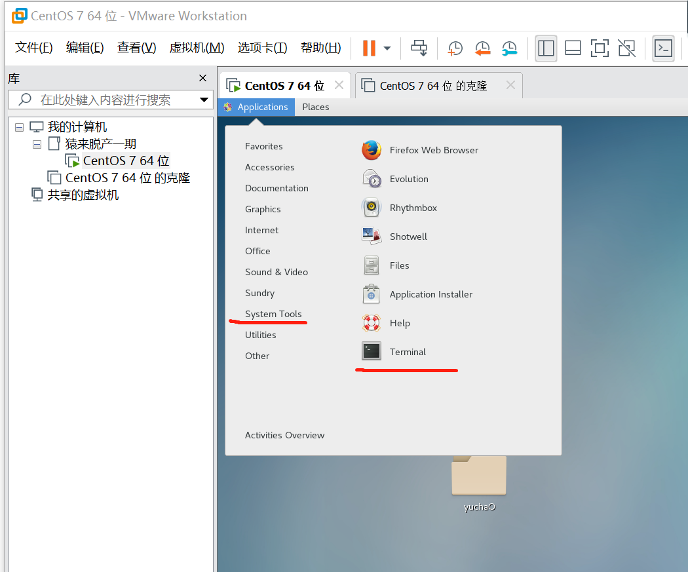</p>
<p>&#x7EC8;&#x7AEF;&#x5C31;&#x662F;&#x4E00;&#x4E2A;&#x53EF;&#x4EE5;&#x8BA9;&#x4F60;&#x64CD;&#x4F5C;&#x7684;&#x5730;&#x65B9;&#xFF0C;&#x4F60;&#x6253;&#x5F00;&#x7EC8;&#x7AEF;&#xFF0C;&#x5C31;&#x53EF;&#x4EE5;&#x8F93;&#x5165;&#x6307;&#x4EE4;&#xFF0C;&#x53D1;&#x7ED9;&#x64CD;&#x4F5C;&#x7CFB;&#x7EDF;&#x3002;</p>
<p>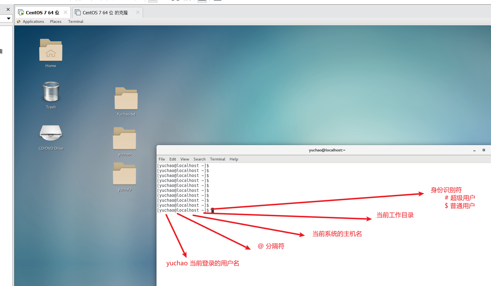</p>
<h2 id="&#x4EC0;&#x4E48;&#x662F;linux&#x547D;&#x4EE4;"><a name="&#x4EC0;&#x4E48;&#x662F;linux&#x547D;&#x4EE4;" class="plugin-anchor" href="#&#x4EC0;&#x4E48;&#x662F;linux&#x547D;&#x4EE4;"><i class="fa fa-link" aria-hidden="true"></i></a>&#x4EC0;&#x4E48;&#x662F;linux&#x547D;&#x4EE4;</h2>
<p>&#x5C31;&#x662F;&#x4F60;&#x5728;linux&#x7CFB;&#x7EDF;&#x91CC;&#xFF0C;&#x8F93;&#x5165;linux&#x7CFB;&#x7EDF;&#x624D;&#x80FD;&#x8BC6;&#x522B;&#x7684;&#x4E00;&#x4E9B;&#x6307;&#x4EE4;&#xFF0C;&#x4F60;&#x8F93;&#x5165;&#x7684;&#x4E00;&#x4E9B;&#x56FA;&#x5B9A;&#x5B58;&#x5728;&#x7684;&#x5355;&#x8BCD;&#x5B57;&#x6BCD;&#xFF0C;&#x5C31;&#x662F;&#x547D;&#x4EE4;&#x3002;</p>
<p>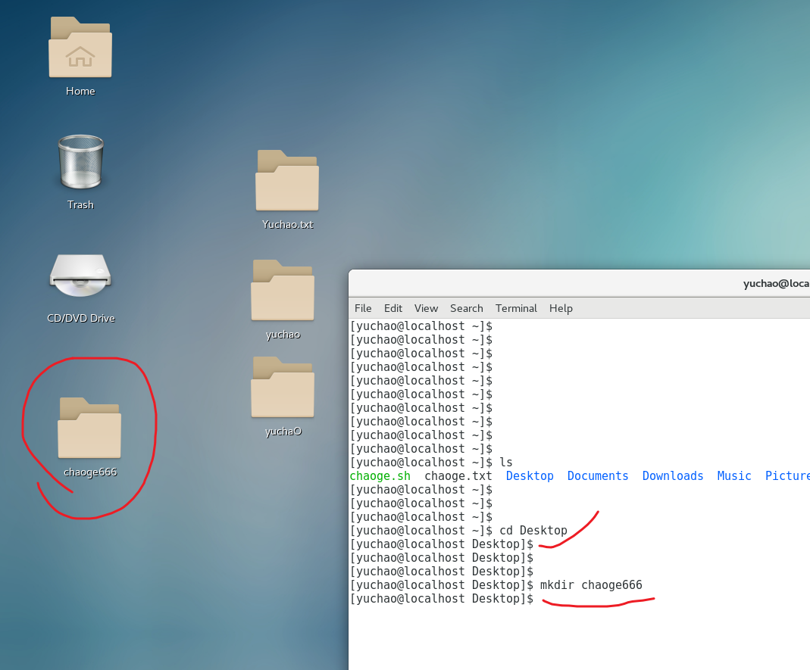</p>
<hr>
<p></p>
<p>&#x524D;&#x9762;&#x54B1;&#x4EEC;&#x5DF2;&#x7ECF;&#x6210;&#x529F;&#x5B89;&#x88C5;&#x4E86;Linux&#x7CFB;&#x7EDF;--centos7&#xFF0C;&#x90A3;&#x4E48;&#x73B0;&#x5728;&#x8DDF;&#x7740;&#x8D85;&#x54E5;&#x5954;&#x5411;Linux&#x547D;&#x4EE4;&#x884C;&#x7684;&#x4E16;&#x754C;&#x3002;</p>
<h2 id="linux&#x547D;&#x4EE4;&#x683C;&#x5F0F;"><a name="linux&#x547D;&#x4EE4;&#x683C;&#x5F0F;" class="plugin-anchor" href="#linux&#x547D;&#x4EE4;&#x683C;&#x5F0F;"><i class="fa fa-link" aria-hidden="true"></i></a>Linux&#x547D;&#x4EE4;&#x683C;&#x5F0F;</h2>
<p>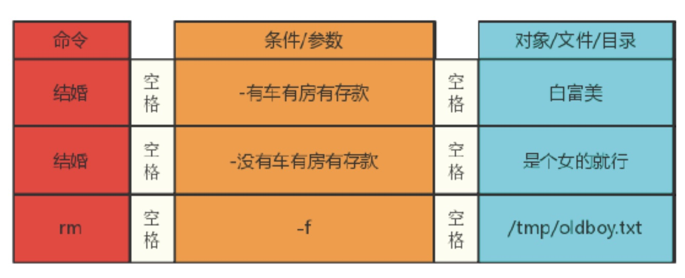 </p>
<p>1.&#x4E00;&#x822C;&#x60C5;&#x51B5;&#x4E0B;&#xFF0C;&#x3010;&#x53C2;&#x6570;&#x3011;&#x662F;&#x53EF;&#x9009;&#x7684;&#xFF0C;&#x4E00;&#x4E9B;&#x60C5;&#x51B5;&#x4E0B;&#x3010;&#x6587;&#x4EF6;&#x6216;&#x8DEF;&#x5F84;&#x3011;&#x4E5F;&#x662F;&#x53EF;&#x9009;&#x7684;</p>
<p>2.&#x53C2;&#x6570; &#xFF0C; &#x540C;&#x4E00;&#x4E2A;&#x547D;&#x4EE4;&#xFF0C;&#x8DDF;&#x4E0A;&#x4E0D;&#x540C;&#x7684;&#x53C2;&#x6570;&#x6267;&#x884C;&#x4E0D;&#x540C;&#x7684;&#x529F;&#x80FD;</p>
<p>3.&#x6267;&#x884C;linux&#x547D;&#x4EE4;&#xFF0C;&#x6DFB;&#x52A0;&#x53C2;&#x6570;&#x7684;&#x76EE;&#x7684;&#x662F;&#x8BA9;&#x547D;&#x4EE4;&#x66F4;&#x52A0;&#x8D34;&#x5207;&#x5B9E;&#x9645;&#x5DE5;&#x4F5C;&#x7684;&#x9700;&#x8981;&#xFF01;</p>
<p>4.linux&#x547D;&#x4EE4;&#xFF0C;&#x53C2;&#x6570;&#x4E4B;&#x95F4;&#xFF0C;&#x666E;&#x904D;&#x5E94;&#x8BE5;&#x7528;&#x4E00;&#x4E2A;&#x6216;&#x591A;&#x4E2A;&#x7A7A;&#x683C;&#x5206;&#x5272;&#xFF01;</p>
<pre><code>1.&#x5B8C;&#x6574;&#x7684;&#x547D;&#x4EE4;&#x683C;&#x5F0F;
2.&#x6CA1;&#x6709;&#x53C2;&#x6570;&#xFF0C;&#x6CA1;&#x6709;&#x5BF9;&#x8C61;
3.&#x6CA1;&#x6709;&#x53C2;&#x6570;&#xFF0C;&#x6709;&#x5BF9;&#x8C61;
</code></pre><h2 id="linux&#x547D;&#x4EE4;&#x63D0;&#x793A;&#x7B26;"><a name="linux&#x547D;&#x4EE4;&#x63D0;&#x793A;&#x7B26;" class="plugin-anchor" href="#linux&#x547D;&#x4EE4;&#x63D0;&#x793A;&#x7B26;"><i class="fa fa-link" aria-hidden="true"></i></a>Linux&#x547D;&#x4EE4;&#x63D0;&#x793A;&#x7B26;</h2>
<p>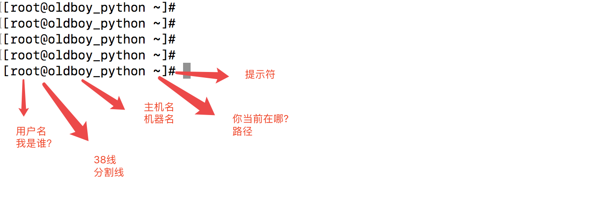 </p>
<pre><code>&#x547D;&#x4EE4;&#x63D0;&#x793A;&#x7B26;
[py@pylinux ~]$            &#x666E;&#x901A;&#x7528;&#x6237;py&#xFF0C;&#x767B;&#x9646;&#x540E;

[root@pylinux ~]#        &#x8D85;&#x7EA7;&#x7528;&#x6237;root&#xFF0C;&#x767B;&#x5F55;&#x540E;

root&#x4EE3;&#x8868;&#x5F53;&#x524D;&#x767B;&#x5F55;&#x7684;&#x7528;&#x6237;

@ &#x5206;&#x9694;&#x7B26;

pylinux &#x4E3B;&#x673A;&#x540D;

~  &#x5F53;&#x524D;&#x7684;&#x767B;&#x5F55;&#x7684;&#x4F4D;&#x7F6E;&#xFF0C;&#x6B64;&#x65F6;&#x662F;&#x5BB6;&#x76EE;&#x5F55;

# &#x8D85;&#x7EA7;&#x7528;&#x6237;&#x8EAB;&#x4EFD;&#x63D0;&#x793A;&#x7B26;
$ &#x666E;&#x901A;&#x7528;&#x6237;&#x8EAB;&#x4EFD;&#x63D0;&#x793A;&#x7B26;
</code></pre><h3 id="&#x7F8E;&#x5316;&#x547D;&#x4EE4;&#x63D0;&#x793A;&#x7B26;"><a name="&#x7F8E;&#x5316;&#x547D;&#x4EE4;&#x63D0;&#x793A;&#x7B26;" class="plugin-anchor" href="#&#x7F8E;&#x5316;&#x547D;&#x4EE4;&#x63D0;&#x793A;&#x7B26;"><i class="fa fa-link" aria-hidden="true"></i></a>&#x7F8E;&#x5316;&#x547D;&#x4EE4;&#x63D0;&#x793A;&#x7B26;</h3>
<pre><code>[yuchao-linux-242 root /opt]#tail -2 /etc/profile
# &#x7F8E;&#x5316;PS1&#x663E;&#x793A;
export PS1=&apos;\[\033[01;35m\][\[\033[01;32m\]\h\[\033[01;31m\] \u \w\[\033[31m\]\[\033[01;35m\]]\[\033[01;36m\]\$\[\033[00m\]&apos;

[yuchao-linux-242 root /opt]#source /etc/profile
</code></pre><h2 id="tab&#x547D;&#x4EE4;&#x8865;&#x5168;"><a name="tab&#x547D;&#x4EE4;&#x8865;&#x5168;" class="plugin-anchor" href="#tab&#x547D;&#x4EE4;&#x8865;&#x5168;"><i class="fa fa-link" aria-hidden="true"></i></a>Tab&#x547D;&#x4EE4;&#x8865;&#x5168;</h2>
<p></p>
<p>linux&#x7EC8;&#x7AEF;&#x91CC;&#xFF0C;&#x7CFB;&#x7EDF;&#x4E3A;&#x4E86;&#x8BA9;&#x4F60;&#x66F4;&#x7701;&#x5FC3;&#xFF0C;&#x4E0D;&#x7528;&#x8BB0;&#x5FC6;&#x90A3;&#x4E48;&#x591A;&#x5185;&#x5BB9;&#xFF0C;&#x53EF;&#x4EE5;&#x8BA9;&#x4F60;&#x8F93;&#x5165;Tab&#x952E;&#xFF0C;&#x53EF;&#x4EE5;&#x5FEB;&#x901F;&#x5217;&#x51FA;&#x4F60;&#x60F3;&#x8981;&#x7684;&#x5185;&#x5BB9;&#xFF0C;&#x4F60;&#x53EA;&#x9700;&#x8981;&#x8F93;&#x5165;&#x4E00;&#x4E2A;&#x547D;&#x4EE4;&#x7684;&#x5F00;&#x5934;&#x5373;&#x53EF;&#xFF0C;&#x5B83;&#x4E00;&#x822C;&#x53EF;&#x4EE5;&#x8865;&#x5168;linux&#x547D;&#x4EE4;&#xFF0C;&#x4EE5;&#x53CA;&#x6587;&#x4EF6;&#x8DEF;&#x5F84;&#x3002;</p>
<p>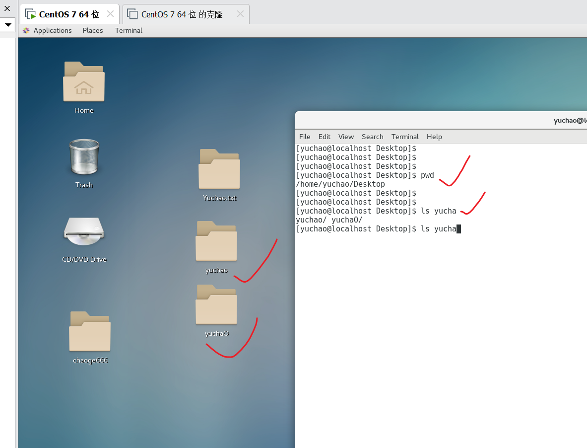</p>
<pre><code>[yuchao@localhost Desktop]$ ls
ls        lsblk     lscpu     lshw      lsipc     lslogins  lsmd      lsmod     lsof      lsscsi    lsusb     
lsattr    lscgroup  lsdiff    lsinitrd  lslocks   lsmcli    lsmem     lsns      lspci     lssubsys  lsusb.py
</code></pre><h2 id="linux&#x547D;&#x4EE4;&#x521D;&#x4F53;&#x9A8C;"><a name="linux&#x547D;&#x4EE4;&#x521D;&#x4F53;&#x9A8C;" class="plugin-anchor" href="#linux&#x547D;&#x4EE4;&#x521D;&#x4F53;&#x9A8C;"><i class="fa fa-link" aria-hidden="true"></i></a>Linux&#x547D;&#x4EE4;&#x521D;&#x4F53;&#x9A8C;</h2>
<h3 id="su&#x547D;&#x4EE4;"><a name="su&#x547D;&#x4EE4;" class="plugin-anchor" href="#su&#x547D;&#x4EE4;"><i class="fa fa-link" aria-hidden="true"></i></a>su&#x547D;&#x4EE4;</h3>
<p>&#x7528;&#x4E8E;&#x5207;&#x6362;&#x7CFB;&#x7EDF;&#x4E0D;&#x540C;&#x7684;&#x7528;&#x6237;&#x3002;</p>
<p>&#x5982;windows&#x7684;&#x7528;&#x6237;&#x5207;&#x6362;&#xFF0C;&#x4ECE;&#x8001;&#x738B;&#x7528;&#x6237;&#xFF0C;&#x5207;&#x6362;&#x5230;&#x5C0F;&#x674E;&#x7528;&#x6237;&#x3002;</p>
<p>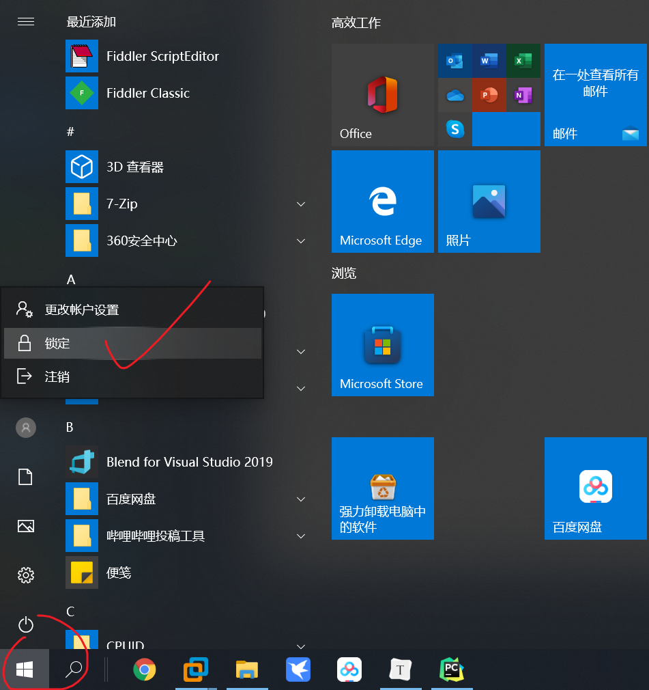</p>
<p>linux&#x7528;&#x6237;&#x7684;&#x5207;&#x6362;&#xFF0C;&#x5E76;&#x4E14;&#x6211;&#x4EEC;&#x76F4;&#x63A5;&#x5207;&#x6362;&#x5230;&#x8D85;&#x7EA7;&#x7528;&#x6237;&#xFF0C;&#x5207;&#x6362;&#x5230;&#x7687;&#x5E1D;&#x8EAB;&#x4EFD;&#x3002;</p>
<pre><code class="lang-bash"># &#x77ED;&#x6A2A;&#x7EBF; -   &#x8868;&#x793A;&#x5207;&#x6362;&#x7528;&#x6237;&#x4E14;&#x52A0;&#x8F7D;&#x8BE5;&#x7528;&#x6237;&#x7684;&#x73AF;&#x5883;&#x53D8;&#x91CF;&#xFF0C;&#x4E14;&#x8FDB;&#x5165;&#x8BE5;&#x7528;&#x6237;&#x5BB6;&#x76EE;&#x5F55;
[yuchao@localhost Desktop]$ 
[yuchao@localhost Desktop]$ su - root
Password: 
[root@localhost ~]#
</code></pre>
<h3 id="uname&#x547D;&#x4EE4;"><a name="uname&#x547D;&#x4EE4;" class="plugin-anchor" href="#uname&#x547D;&#x4EE4;"><i class="fa fa-link" aria-hidden="true"></i></a>uname&#x547D;&#x4EE4;</h3>
<p>&#x5728;&#x4F7F;&#x7528;uname&#x547D;&#x4EE4;&#x65F6;&#xFF0C;&#x4E00;&#x822C;&#x4F1A;&#x56FA;&#x5B9A;&#x642D;&#x914D;&#x4E0A;-a&#x53C2;&#x6570;&#x6765;&#x5B8C;&#x6574;&#x5730;&#x67E5;&#x770B;&#x5F53;&#x524D;&#x7CFB;&#x7EDF;&#x7684;&#x5185;&#x6838;&#x540D;&#x79F0;&#x3001;&#x4E3B;&#x673A;&#x540D;&#x3001;&#x5185;&#x6838;&#x53D1;&#x884C;&#x7248;&#x672C;&#x3001;&#x8282;&#x70B9;&#x540D;&#x3001;&#x7CFB;&#x7EDF;&#x65F6;&#x95F4;&#x3001;&#x786C;&#x4EF6;&#x540D;&#x79F0;&#x3001;&#x786C;&#x4EF6;&#x5E73;&#x53F0;&#x3001;&#x5904;&#x7406;&#x5668;&#x7C7B;&#x578B;&#x4EE5;&#x53CA;&#x64CD;&#x4F5C;&#x7CFB;&#x7EDF;&#x540D;&#x79F0;&#x7B49;&#x4FE1;&#x606F;&#x3002;</p>
<pre><code class="lang-bash">1.&#x4F5C;&#x7528;&#xFF1A;
    &#x663E;&#x793A;&#x7CFB;&#x7EDF;&#x4FE1;&#x606F;
2.&#x8BED;&#x6CD5;&#xFF1A;
    uname -&#x53C2;&#x6570;

# 
[root@localhost opt]# uname -a
Linux localhost.localdomain 3.10.0-862.el7.x86_64 #1 SMP Fri Apr 20 16:44:24 UTC 2018 x86_64 x86_64 x86_64 GNU/Linux

# &#x89E3;&#x91CA;
Linux  &#x7CFB;&#x7EDF;&#x540D;&#x79F0;

localhost.localdomain &#x4E3B;&#x673A;&#x540D;
 3.10.0-862.el7.x86_64 &#x5185;&#x6838;&#x7248;&#x672C;&#x53F7;
     3 &#x662F;&#x4E3B;&#x7248;&#x672C;&#x53F7;&#xFF0C;&#x91CD;&#x5927;&#x53D8;&#x5316;&#xFF0C;&#x624D;&#x4F1A;&#x53D8;&#x52A8;
     10 &#x662F;&#x6B21;&#x7248;&#x672C;&#x53F7;&#xFF0C;&#x65B0;&#x52A0;&#x529F;&#x80FD;&#x540E;&#x7248;&#x672C;&#x6570;&#x5B57;&#x53D8;&#x5316;
     0 &#x8868;&#x793A;&#x4FEE;&#x6539;&#x6B21;&#x6570;
     862&#x8868;&#x793A;&#x7F16;&#x8BD1;&#x6B21;&#x6570;
     el7 &#x8868;&#x793A;&#x662F;7&#x4EE3;&#x7248;&#x672C;
     x86_64 &#x8868;&#x793A;&#x7CFB;&#x7EDF;&#x662F;64&#x4F4D;&#x7684;

&#x53D1;&#x5E03;&#x65F6;&#x95F4;
GNU/Linux&#x662F;&#x64CD;&#x4F5C;&#x7CFB;&#x7EDF;&#x540D;&#x79F0;&#xFF0C;&#x5F00;&#x6E90;&#x8BA1;&#x5212;
</code></pre>
<h3 id="ls&#x547D;&#x4EE4;"><a name="ls&#x547D;&#x4EE4;" class="plugin-anchor" href="#ls&#x547D;&#x4EE4;"><i class="fa fa-link" aria-hidden="true"></i></a>ls&#x547D;&#x4EE4;</h3>
<p>&#x529F;&#x80FD;&#xFF1A;&#x5E73;&#x94FA;&#x663E;&#x793A;&#x76EE;&#x5F55;&#x4E0B;&#x7684;&#x6587;&#x4EF6;&#x5217;&#x8868;</p>
<p>&#x8BED;&#x6CD5;&#xFF1A;</p>
<pre><code>1.&#x5B8C;&#x6574;&#x7684;&#x547D;&#x4EE4;&#x683C;&#x5F0F;
ls -l /

2.&#x6CA1;&#x6709;&#x53C2;&#x6570;&#xFF0C;&#x6CA1;&#x6709;&#x5BF9;&#x8C61;&#xFF0C;&#x5176;&#x5B9E;&#x9ED8;&#x8BA4;&#x6709;&#x4E00;&#x4E2A;&#x70B9;
ls

3.&#x6CA1;&#x6709;&#x53C2;&#x6570;&#xFF0C;&#x6709;&#x5BF9;&#x8C61;
ls /
</code></pre><blockquote>
<p>&#x5173;&#x4E8E;&#x8DEF;&#x5F84;</p>
</blockquote>
<p>linux&#x547D;&#x4EE4;&#x64CD;&#x4F5C;&#xFF0C;&#x5173;&#x4E8E;&#x8981;&#x64CD;&#x4F5C;&#x4E0D;&#x540C;&#x7684;&#x6587;&#x4EF6;&#xFF0C;&#x4E3B;&#x8981;&#x5C31;&#x5206;&#xFF0C;&#x7EDD;&#x5BF9;&#x8DEF;&#x5F84;&#x3001;&#x76F8;&#x5BF9;&#x8DEF;&#x5F84;</p>
<blockquote>
<p>&#x5173;&#x4E8E;&#x53C2;&#x6570;&#xFF08;&#x9009;&#x9879;&#xFF09;</p>
</blockquote>
<pre><code>ls -l  # &#x4F7F;&#x7528;&#x8F83;&#x957F;&#x683C;&#x5F0F;&#x5217;&#x51FA;&#x4FE1;&#x606F;
ls -h  #-h, --human-readable          &#x4E0E;-l &#x4E00;&#x8D77;&#xFF0C;&#x4EE5;&#x6613;&#x4E8E;&#x9605;&#x8BFB;&#x7684;&#x683C;&#x5F0F;&#x8F93;&#x51FA;&#x6587;&#x4EF6;&#x5927;&#x5C0F;&#xFF0C;kb&#x3001;mb&#x3001;gb
ls -a  # &#x663E;&#x793A;&#x9690;&#x85CF;&#x6587;&#x4EF6; &#xFF0C;linux&#x4E0B;&#x4EE5;.&#x5F00;&#x5934;&#x7684;&#x6587;&#x4EF6;&#xFF0C;&#x8868;&#x793A;&#x662F;&#x9690;&#x85CF;&#x7684;
</code></pre><p>&#x5355;&#x4F4D;&#x6362;&#x7B97;</p>
<pre><code># 1TB = 1024GB
# 1GB = 1024MB
# 1MB = 1024KB
# 1KB&#xFF08;&#x5343;&#x5B57;&#x8282;&#xFF09; = 1024B&#xFF08;&#x5B57;&#x8282;&#xFF09;
</code></pre><h3 id="pwd&#x547D;&#x4EE4;"><a name="pwd&#x547D;&#x4EE4;" class="plugin-anchor" href="#pwd&#x547D;&#x4EE4;"><i class="fa fa-link" aria-hidden="true"></i></a>pwd&#x547D;&#x4EE4;</h3>
<pre><code>&#x529F;&#x80FD;&#x3001;&#x8BED;&#x6CD5;
pwd(Print Working Directory) &#x663E;&#x793A;&#x5F53;&#x524D;&#x76EE;&#x5F55;
</code></pre><h3 id="cd&#x547D;&#x4EE4;"><a name="cd&#x547D;&#x4EE4;" class="plugin-anchor" href="#cd&#x547D;&#x4EE4;"><i class="fa fa-link" aria-hidden="true"></i></a>cd&#x547D;&#x4EE4;</h3>
<pre><code>&#x4E3B;&#x8981;&#x529F;&#x80FD;&#xFF1A;cd&#x5168;&#x79F0;change directory&#xFF0C;&#x5207;&#x6362;&#x76EE;&#x5F55;&#xFF08;&#x4ECE;&#x4E00;&#x4E2A;&#x76EE;&#x5F55;&#x8DF3;&#x8F6C;&#x5230;&#x53E6;&#x5916;&#x4E00;&#x4E2A;&#x76EE;&#x5F55;&#xFF09;

&#x57FA;&#x672C;&#x8BED;&#x6CD5;&#xFF1A;
cd &#x6D89;&#x53CA;&#x6587;&#x4EF6;&#x64CD;&#x4F5C;&#x4E86;&#xFF0C;&#x90A3;&#x5C31;&#x5B58;&#x5728;&#x7EDD;&#x5BF9;&#xFF0C;&#x76F8;&#x5BF9;&#x8DEF;&#x5F84;&#x4E86;


# &#x7EC3;&#x4E60;
[yuchao@localhost ~]$ 
[yuchao@localhost ~]$ pwd
/home/yuchao
[yuchao@localhost ~]$ cd /opt
[yuchao@localhost opt]$ ls
rh
[yuchao@localhost opt]$ 
[yuchao@localhost opt]$ cd ../home/yuchao
[yuchao@localhost ~]$ 
[yuchao@localhost ~]$ 
[yuchao@localhost ~]$ pwd
/home/yuchao

[yuchao@localhost ~]$ cd -
/opt
[yuchao@localhost opt]$ 
[yuchao@localhost opt]$ 
[yuchao@localhost opt]$ cd ~
[yuchao@localhost ~]$ 
[yuchao@localhost ~]$
</code></pre><h3 id="&#x7279;&#x6B8A;&#x76EE;&#x5F55;"><a name="&#x7279;&#x6B8A;&#x76EE;&#x5F55;" class="plugin-anchor" href="#&#x7279;&#x6B8A;&#x76EE;&#x5F55;"><i class="fa fa-link" aria-hidden="true"></i></a>&#x7279;&#x6B8A;&#x76EE;&#x5F55;</h3>
<pre><code>- &#x4E0A;&#x4E00;&#x6B21;&#x76EE;&#x5F55;
~ &#x5F53;&#x524D;&#x7528;&#x6237;&#x5BB6;&#x76EE;&#x5F55;
. &#x5F53;&#x524D;&#x4F4D;&#x7F6E;
.. &#x4E0A;&#x4E00;&#x5C42;&#x4F4D;&#x7F6E;
</code></pre><h3 id="clear"><a name="clear" class="plugin-anchor" href="#clear"><i class="fa fa-link" aria-hidden="true"></i></a>clear</h3>
<pre><code>clear &#x6307;&#x4EE4;&#x7528;&#x6765;&#x6E05;&#x9664;&#x7EC8;&#x7AEF;&#x5C4F;&#x5E55;&#xFF0C;&#x5728;&#x7EC8;&#x7AEF;&#x4E2D;&#x901A;&#x8FC7;&#x5FEB;&#x6377;&#x952E; Ctrl+L &#x6E05;&#x9664;&#x5C4F;&#x5E55;
</code></pre><h3 id="shutdown"><a name="shutdown" class="plugin-anchor" href="#shutdown"><i class="fa fa-link" aria-hidden="true"></i></a>shutdown</h3>
<pre><code>shutdown &#x4EE5;&#x4E00;&#x79CD;&#x5B89;&#x5168;&#x7684;&#x65B9;&#x5F0F;&#x5173;&#x95ED;&#x7CFB;&#x7EDF;&#x3002;
-r
    &#x91CD;&#x542F;&#x3002;
-h
    &#x505C;&#x673A;&#x3002;

# &#x7EC3;&#x4E60;
[root@linux ~]# shutdown &#x2013;h now   #&#x5173;&#x673A; 

[root@linux ~]# shutdown &#x2013;h 23:00   #&#x665A;&#x4E0A;11&#x70B9;&#x5173;&#x673A;

[root@linux ~]# shutdown &#x2013;r now   #&#x91CD;&#x542F;

[root@linux ~]# shutdown &#x2013;r +30 &apos;reboot now&apos;   #30&#x5206;&#x949F;&#x540E;&#x91CD;&#x542F;&#xFF0C;&#x5E76;&#x4E14;&#x63D0;&#x793A;reboot now
</code></pre><h3 id="man&#x547D;&#x4EE4;"><a name="man&#x547D;&#x4EE4;" class="plugin-anchor" href="#man&#x547D;&#x4EE4;"><i class="fa fa-link" aria-hidden="true"></i></a>man&#x547D;&#x4EE4;</h3>
<p>&#x5F53;&#x4F60;&#x5FD8;&#x8BB0;&#x4E86;&#x67D0;&#x4E2A;&#x547D;&#x4EE4;&#x600E;&#x4E48;&#x7528;&#xFF0C;&#x4EE5;&#x53CA;&#x53C2;&#x6570;&#x6709;&#x54EA;&#x4E9B;&#xFF0C;&#x90FD;&#x662F;&#x4EC0;&#x4E48;&#x4F5C;&#x7528;&#xFF0C;&#x8BE5;&#x600E;&#x4E48;&#x67E5;&#xFF1F;</p>
<p>&#x67E5;&#x4E8E;&#x8D85;&#x8001;&#x5E08;&#x7684;&#x7B14;&#x8BB0;&#xFF1F;&#x8FD8;&#x662F;&#x548B;&#x529E;&#xFF1F;</p>
<pre><code>man &#x547D;&#x4EE4;&#xFF0C;&#x67E5;&#x770B;linux&#x547D;&#x4EE4;&#x7684;&#x5E2E;&#x52A9;&#x624B;&#x518C;&#xFF0C;&#x4EE5;&#x540E;&#x6162;&#x6162;&#x770B;&#xFF0C;&#x4E14;&#x662F;&#x82F1;&#x6587;&#x7684;&#xFF0C;&#x77E5;&#x9053;&#x8FD9;&#x4E2A;&#x65B9;&#x5F0F;&#x5373;&#x53EF;&#xFF0C;&#x53EF;&#x4EE5;&#x590D;&#x5236;&#x51FA;&#x6765;&#xFF0C;&#x7FFB;&#x8BD1;&#x4E00;&#x4E0B;&#x4E5F;&#x884C;&#x3002;
</code></pre><h3 id="history"><a name="history" class="plugin-anchor" href="#history"><i class="fa fa-link" aria-hidden="true"></i></a>history</h3>
<pre><code>history &#x547D;&#x4EE4;&#x53EF;&#x4EE5;&#x7528;&#x6765;&#x663E;&#x793A;&#x66FE;&#x6267;&#x884C;&#x8FC7;&#x7684;&#x547D;&#x4EE4;&#xFF0C;&#x4E14;&#x663E;&#x793A;&#x6761;&#x76EE;&#x6709;&#x6570;&#x91CF;&#x9650;&#x5236;&#xFF0C;&#x9ED8;&#x8BA4;&#x662F;1000&#x4E2A;&#xFF0C;&#x53EF;&#x4FEE;&#x6539;&#xFF0C;&#x8D85;&#x54E5;&#x4EE5;&#x540E;&#x518D;&#x8BF4;

[yuchao@localhost ~]$ echo $HISTSIZE
1000


# &#x663E;&#x793A;&#x6240;&#x6709;&#x5386;&#x53F2;&#x8BB0;&#x5F55;
[yuchao@localhost ~]$ history 

# &#x663E;&#x793A;&#x6700;&#x540E;2&#x6761;
[yuchao@localhost ~]$ history 2
    2  cd
    3  history 2

# &#x6E05;&#x7A7A;&#x5386;&#x53F2;
[root@redhat ~]# history -c    #&#x6E05;&#x9664;&#x5386;&#x53F2;&#x8BB0;&#x5F55;
</code></pre><h3 id="w&#x547D;&#x4EE4;"><a name="w&#x547D;&#x4EE4;" class="plugin-anchor" href="#w&#x547D;&#x4EE4;"><i class="fa fa-link" aria-hidden="true"></i></a>w&#x547D;&#x4EE4;</h3>
<p>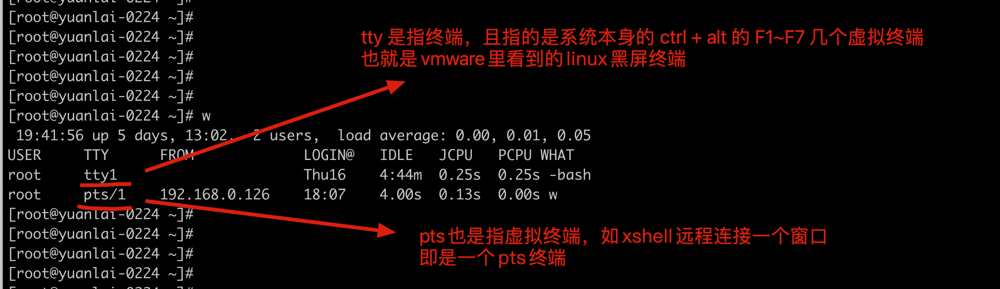</p>
<h3 id="hostnamectl&#x547D;&#x4EE4;"><a name="hostnamectl&#x547D;&#x4EE4;" class="plugin-anchor" href="#hostnamectl&#x547D;&#x4EE4;"><i class="fa fa-link" aria-hidden="true"></i></a>hostnamectl&#x547D;&#x4EE4;</h3>
<pre><code>&#x8BB0;&#x5FC6;&#x65B9;&#x5F0F;&#xFF1A;hostname + control &#x4E3B;&#x673A;&#x540D;&#x63A7;&#x5236;&#x7684;&#x610F;&#x601D;
&#x4F5C;&#x7528;&#xFF1A;&#x5B83;&#x662F;&#x7528;&#x6765;&#x4FEE;&#x6539;&#x4E3B;&#x673A;&#x540D;&#x79F0;

&#x8BED;&#x6CD5;
[root@10 ~]# hostnamectl --help
hostnamectl [OPTIONS...] COMMAND ...

Query or change system hostname.

  -h --help              Show this help
     --version           Show package version
     --no-ask-password   Do not prompt for password
  -H --host=[USER@]HOST  Operate on remote host
  -M --machine=CONTAINER Operate on local container
     --transient         Only set transient hostname
     --static            Only set static hostname
     --pretty            Only set pretty hostname

Commands:
  status                 Show current hostname settings
  set-hostname NAME      Set system hostname
  set-icon-name NAME     Set icon name for host
  set-chassis NAME       Set chassis type for host
  set-deployment NAME    Set deployment environment for host
  set-location NAME      Set location for host
</code></pre><blockquote>
<p>centos7&#x7CFB;&#x7EDF;&#x91CC;&#x6709;3&#x7C7B;&#x4E3B;&#x673A;&#x540D;</p>
</blockquote>
<pre><code> --transient         Only set transient hostname
 --static            Only set static hostname
 --pretty            Only set pretty hostname
</code></pre><ul>
<li>&#x9759;&#x6001;&#x4E3B;&#x673A;&#x540D;&#xFF0C;static&#xFF0C;&#x5173;&#x673A;&#x540E;&#xFF0C;&#x91CD;&#x542F;&#x540E;&#xFF0C;&#x540D;&#x5B57;&#x4F9D;&#x7136;&#x5B58;&#x5728;&#xFF0C;&#x56E0;&#x4E3A;&#x4FE1;&#x606F;&#x5199;&#x5165;&#x4E86;/etc/hostname&#x6587;&#x4EF6;&#xFF0C;&#x6BCF;&#x6B21;&#x5F00;&#x673A;&#x90FD;&#x4F1A;&#x518D;&#x8BFB;&#x53D6;&#x8BE5;&#x6587;&#x4EF6;&#x5185;&#x5BB9;&#x3002;</li>
<li>&#x4E34;&#x65F6;&#x4E3B;&#x673A;&#x540D;&#xFF0C;transient&#xFF0C;&#x5173;&#x673A;&#xFF0C;&#x91CD;&#x542F;&#x540E;&#xFF0C;&#x4F60;&#x8BBE;&#x7F6E;&#x7684;&#x4E3B;&#x673A;&#x540D;&#x5931;&#x6548;&#x3002;</li>
<li>&#x4F18;&#x96C5;&#x4E3B;&#x673A;&#x540D;&#xFF0C;pretty&#xFF0C;&#x53EF;&#x4EE5;&#x8BA9;&#x4E3B;&#x673A;&#x540D;&#x663E;&#x793A;&#x66F4;&#x597D;&#x770B;&#xFF0C;&#x5982;&#x4E00;&#x4E9B;&#x7279;&#x6B8A;&#x7B26;&#x53F7;&#x3002;</li>
</ul>
<blockquote>
<p>&#x5982;&#x4F55;&#x67E5;&#x770B;&#x4E3B;&#x673A;&#x540D;&#xFF0C;&#x66F4;&#x6539;&#x4E3B;&#x673A;&#x540D;</p>
<p>&#xFF08;&#x6CE8;&#x610F;&#x5207;&#x6362;&#x5230;root&#x7528;&#x6237;&#xFF09;</p>
</blockquote>
<p>1.&#x67E5;&#x770B;&#x4E3B;&#x673A;&#x540D;</p>
<pre><code># &#x53EF;&#x4EE5;&#x770B;&#x5230;&#x9759;&#x6001;&#x4E3B;&#x673A;&#x540D;
# &#x4E34;&#x65F6;&#x4E3B;&#x673A;&#x540D;&#xFF0C;&#x662F;&#x7CFB;&#x7EDF;&#x9ED8;&#x8BA4;&#x8BFB;&#x53D6;&#x7684;&#x7F51;&#x7EDC;&#x4FE1;&#x606F;
# &#x8FD8;&#x6709;&#x7CFB;&#x7EDF;&#x5E73;&#x53F0;&#x4FE1;&#x606F;&#xFF0C;&#x4E3B;&#x673A;&#x7248;&#x672C;&#x4FE1;&#x606F;&#xFF0C;&#x5185;&#x6838;&#x7248;&#x672C;


[root@10 ~]# 
[root@10 ~]# hostnamectl 
   Static hostname: localhost.localdomain
Transient hostname: 10.96.0.145
         Icon name: computer-vm
           Chassis: vm
        Machine ID: 340cf8a8efa8496494a0e9d7388e5f1f
           Boot ID: 8bd702c0ae3b42248b789515e52def50
    Virtualization: vmware
  Operating System: CentOS Linux 7 (Core)
       CPE OS Name: cpe:/o:centos:centos:7
            Kernel: Linux 3.10
</code></pre><p>2.&#x8BBE;&#x7F6E;&#x9759;&#x6001;&#x4E3B;&#x673A;&#x540D;&#xFF08;&#x57FA;&#x672C;&#x7528;&#x8FD9;&#x4E2A;&#xFF09;&#xFF0C;&#x6C38;&#x4E45;&#x751F;&#x6548;</p>
<p>&#x8BBE;&#x7F6E;&#x4E86;&#x6C38;&#x4E45;&#x4E3B;&#x673A;&#x540D;&#x540E;&#xFF0C;&#x53D1;&#x73B0;&#x4E34;&#x65F6;&#x540D;&#x5B57;&#x90FD;&#x6CA1;&#x4E86;</p>
<pre><code>[root@10 ~]# hostnamectl set-hostname linux02.yuchaoit.cn
[root@10 ~]# 
[root@10 ~]# hostnamectl 
   Static hostname: linux02.yuchaoit.cn
         Icon name: computer-vm
           Chassis: vm
        Machine ID: 340cf8a8efa8496494a0e9d7388e5f1f
           Boot ID: 0c2d37e952104524a0f1e58fdf33c2b5
    Virtualization: vmware
  Operating System: CentOS Linux 7 (Core)
       CPE OS Name: cpe:/o:centos:centos:7
            Kernel: Linux 3.10.0-862.el7.x86_64
      Architecture: x86-64
[root@10 ~]#
</code></pre><p>3.&#x914D;&#x7F6E;&#x4F18;&#x96C5;&#x4E3B;&#x673A;&#x540D;</p>
<p>&#x7528;&#x5728;&#x4EC0;&#x4E48;&#x60C5;&#x51B5;&#x4E0B;&#xFF1F;</p>
<p>&#x5F53;&#x4F60;&#x7684;&#x4E3B;&#x673A;&#x540D;&#xFF0C;&#x6709;&#x7279;&#x6B8A;&#x5B57;&#x7B26;&#x7684;&#x8BDD;&#xFF0C;&#x4E3B;&#x673A;&#x540D;&#x4F1A;&#x81EA;&#x52A8;&#x4FEE;&#x6539;&#x4F60;&#x7684;&#x683C;&#x5F0F;</p>
<pre><code>[root@10 ~]# hostnamectl set-hostname linux02.yuchaoit.cn
[root@10 ~]# 
[root@10 ~]# hostnamectl 
   Static hostname: linux02.yuchaoit.cn
         Icon name: computer-vm
           Chassis: vm
        Machine ID: 340cf8a8efa8496494a0e9d7388e5f1f
           Boot ID: 0c2d37e952104524a0f1e58fdf33c2b5
    Virtualization: vmware
  Operating System: CentOS Linux 7 (Core)
       CPE OS Name: cpe:/o:centos:centos:7
            Kernel: Linux 3.10.0-862.el7.x86_64
      Architecture: x86-64
[root@10 ~]# 
[root@10 ~]# hostnamectl --pretty set-hostname &quot;yuchao&apos;s linux01 server&quot;
[root@10 ~]# 
[root@10 ~]# hostnamectl 
   Static hostname: linux02.yuchaoit.cn
   Pretty hostname: yuchao&apos;s linux01 server
         Icon name: computer-vm
           Chassis: vm
        Machine ID: 340cf8a8efa8496494a0e9d7388e5f1f
           Boot ID: 0c2d37e952104524a0f1e58fdf33c2b5
    Virtualization: vmware
  Operating System: CentOS Linux 7 (Core)
       CPE OS Name: cpe:/o:centos:centos:7
            Kernel: Linux 3.10.0-862.el7.x86_64
      Architecture: x86-64

[root@10 ~]# hostnamectl --pretty
yuchao&apos;s linux01 server
[root@10 ~]# 
[root@10 ~]# hostnamectl --static
linux02.yuchaoit.cn


# &#x5982;&#x679C;&#x4F60;&#x8BBE;&#x7F6E;&#x4E86;&#x4E0D;&#x89C4;&#x5219;&#x4E3B;&#x673A;&#x540D;&#xFF0C;&#x7CFB;&#x7EDF;&#x4F1A;&#x53BB;&#x9664;&#x7279;&#x6B8A;&#x7B26;&#x53F7;
[root@10 ~]# hostnamectl set-hostname &quot;yuchao&apos;s linux01 server&quot;
[root@10 ~]# 
[root@10 ~]# 
[root@10 ~]# hostnamectl 
   Static hostname: yuchaoslinux01server
   Pretty hostname: yuchao&apos;s linux01 server
         Icon name: computer-vm
           Chassis: vm
        Machine ID: 340cf8a8efa8496494a0e9d7388e5f1f
           Boot ID: 0c2d37e952104524a0f1e58fdf33c2b5
    Virtualization: vmware
  Operating System: CentOS Linux 7 (Core)
       CPE OS Name: cpe:/o:centos:centos:7
            Kernel: Linux 3.10.0-862.el7.x86_64
      Architecture: x86-64
[root@10 ~]#
</code></pre><h1 id="&#x6269;&#x5C55;&#xFF1A;&#x5B89;&#x88C5;vmware-tools&#xFF08;&#x53EF;&#x5FFD;&#x7565;&#xFF09;"><a name="&#x6269;&#x5C55;&#xFF1A;&#x5B89;&#x88C5;vmware-tools&#xFF08;&#x53EF;&#x5FFD;&#x7565;&#xFF09;" class="plugin-anchor" href="#&#x6269;&#x5C55;&#xFF1A;&#x5B89;&#x88C5;vmware-tools&#xFF08;&#x53EF;&#x5FFD;&#x7565;&#xFF09;"><i class="fa fa-link" aria-hidden="true"></i></a>&#x6269;&#x5C55;&#xFF1A;&#x5B89;&#x88C5;VMware Tools&#xFF08;&#x53EF;&#x5FFD;&#x7565;&#xFF09;</h1>
<p>VMware Tools &#x662F;&#x4E00;&#x5957;&#x53EF;&#x4EE5;&#x63D0;&#x9AD8;&#x865A;&#x62DF;&#x673A;&#x5BA2;&#x6237;&#x673A;&#x64CD;&#x4F5C;&#x7CFB;&#x7EDF;&#x6027;&#x80FD;&#x5E76;&#x6539;&#x5584;&#x865A;&#x62DF;&#x673A;&#x7BA1;&#x7406;&#x7684;&#x5B9E;&#x7528;&#x5DE5;&#x5177;&#x3002;</p>
<p>&#x4F8B;&#x5982;&#xFF0C;&#x4E0B;&#x9762;&#x662F;&#x5728;&#x5B89;&#x88C5; VMware Tools &#x540E;&#x624D;&#x80FD;&#x4F7F;&#x7528;&#x7684;&#x4E00;&#x90E8;&#x5206;&#x529F;&#x80FD;&#xFF1A;</p>
<ul>
<li>&#x663E;&#x8457;&#x63D0;&#x9AD8;&#x4E86;&#x56FE;&#x5F62;&#x6027;&#x80FD;&#xFF0C;&#x5E76;&#x5728;&#x652F;&#x6301; Windows Aero &#x7684;&#x64CD;&#x4F5C;&#x7CFB;&#x7EDF;&#x4E0A;&#x63D0;&#x4F9B; Aero</li>
<li>Unity &#x529F;&#x80FD;&#xFF1B;&#x5141;&#x8BB8;&#x5728;&#x4E3B;&#x673A;&#x684C;&#x9762;&#x4E0A;&#x663E;&#x793A;&#x865A;&#x62DF;&#x673A;&#x4E2D;&#x7684;&#x5E94;&#x7528;&#x7A0B;&#x5E8F;&#xFF0C;&#x5C31;&#x50CF;&#x4EFB;&#x4F55;&#x5176;&#x4ED6;&#x5E94;&#x7528;&#x7A0B;&#x5E8F;&#x7A97;&#x53E3;&#x4E00;&#x6837;</li>
<li>&#x5728;&#x4E3B;&#x673A;&#x4E0E;&#x5BA2;&#x6237;&#x673A;&#x6587;&#x4EF6;&#x7CFB;&#x7EDF;&#x4E4B;&#x95F4;&#x5171;&#x4EAB;&#x6587;&#x4EF6;&#x5939;</li>
<li>&#x5728;&#x865A;&#x62DF;&#x673A;&#x548C;&#x4E3B;&#x673A;&#x6216;&#x5BA2;&#x6237;&#x7AEF;&#x684C;&#x9762;&#x4E4B;&#x95F4;&#x62F7;&#x8D1D;&#x548C;&#x7C98;&#x8D34;&#x6587;&#x672C;&#x3001;&#x56FE;&#x5F62;&#x548C;&#x6587;&#x4EF6;</li>
<li>&#x63D0;&#x9AD8;&#x4E86;&#x9F20;&#x6807;&#x6027;&#x80FD;</li>
<li>&#x5C06;&#x865A;&#x62DF;&#x673A;&#x4E2D;&#x7684;&#x65F6;&#x949F;&#x4E0E;&#x4E3B;&#x673A;&#x6216;&#x5BA2;&#x6237;&#x7AEF;&#x684C;&#x9762;&#x4E0A;&#x7684;&#x65F6;&#x949F;&#x8FDB;&#x884C;&#x540C;&#x6B65;</li>
<li>&#x4F7F;&#x7528;&#x811A;&#x672C;&#x5E2E;&#x52A9;&#x81EA;&#x52A8;&#x5B8C;&#x6210;&#x5BA2;&#x6237;&#x673A;&#x64CD;&#x4F5C;&#x7CFB;&#x7EDF;&#x64CD;&#x4F5C;</li>
<li>&#x4E3A;&#x865A;&#x62DF;&#x673A;&#x542F;&#x7528;&#x5BA2;&#x6237;&#x673A;&#x81EA;&#x5B9A;&#x3002;</li>
</ul>
<p>&#x5B89;&#x88C5;&#x6B65;&#x9AA4;</p>
<p>1.&#x70B9;&#x51FB;&#xFF0C;&#x9009;&#x62E9;&#x5B89;&#x88C5;vmware tools</p>
<p>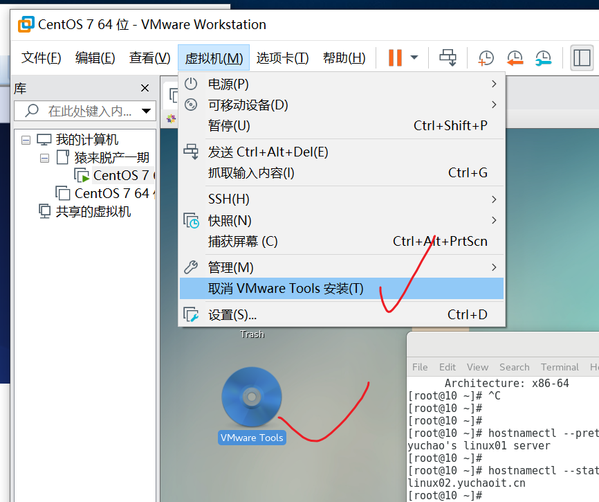</p>
<p>2.&#x6253;&#x5F00;&#x547D;&#x4EE4;&#x884C;&#x7EC8;&#x7AEF;</p>
<p>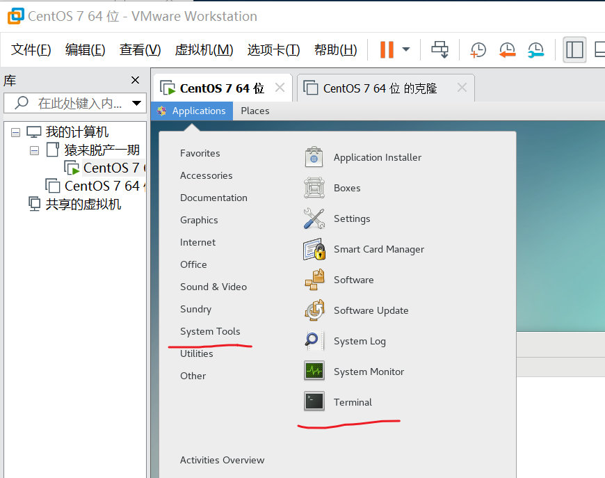</p>
<ol>
<li>&#x8FDB;&#x5165;vmware tools&#x5B89;&#x88C5;&#x8DEF;&#x5F84;&#xFF0C;&#x628A;&#x6587;&#x4EF6;&#x590D;&#x5236;&#x51FA;&#x6765;</li>
</ol>
<pre><code>[root@10 ~]# cd /run/media/
[root@10 media]# ls
yuchao
[root@10 media]# cd yuchao/
[root@10 yuchao]# ls
VMware Tools
[root@10 yuchao]# cd VMware\ Tools/
[root@10 VMware Tools]# pwd
/run/media/yuchao/VMware Tools
[root@10 VMware Tools]# ls
manifest.txt  run_upgrader.sh  VMwareTools-10.3.10-13959562.tar.gz  vmware-tools-upgrader-32  vmware-tools-upgrader-64


# &#x590D;&#x5236;&#x8FD9;&#x91CC;&#x7684;&#x4E00;&#x4E2A;&#x5B89;&#x88C5;&#x5305;
[root@10 VMware Tools]# cp VMwareTools-10.3.10-13959562.tar.gz /root
[root@10 VMware Tools]# 
[root@10 VMware Tools]# cd /root
[root@10 ~]# ls
anaconda-ks.cfg  initial-setup-ks.cfg  VMwareTools-10.3.10-13959562.tar.gz

# &#x89E3;&#x538B;&#x7F29;&#x5B89;&#x88C5;
[root@10 ~]# 
[root@10 ~]# tar -xvf VMwareTools-10.3.10-13959562.tar.gz 

# &#x8FDB;&#x5165;&#x76EE;&#x5F55;&#xFF0C;&#x5B89;&#x88C5;&#x7A0B;&#x5E8F;&#xFF0C;&#x4E00;&#x8DEF;&#x56DE;&#x8F66;&#xFF0C;&#x5168;&#x90E8;&#x9ED8;&#x8BA4;&#x5373;&#x53EF;
[root@10 ~]# cd vmware-tools-distrib/
[root@10 vmware-tools-distrib]# ./vmware-install.pl 


# &#x91CD;&#x542F;&#x673A;&#x5668;&#xFF08;&#x6CE8;&#x610F;&#xFF0C;&#x516C;&#x53F8;&#x91CC;&#x7684;&#x673A;&#x5668;&#x53EF;&#x522B;&#x968F;&#x4FBF;&#x91CD;&#x542F;&#xFF09;
</code></pre><h1 id="linux&#x7CFB;&#x7EDF;&#x6587;&#x4EF6;"><a name="linux&#x7CFB;&#x7EDF;&#x6587;&#x4EF6;" class="plugin-anchor" href="#linux&#x7CFB;&#x7EDF;&#x6587;&#x4EF6;"><i class="fa fa-link" aria-hidden="true"></i></a>Linux&#x7CFB;&#x7EDF;&#x6587;&#x4EF6;</h1>
<blockquote>
<p>/etc&#x521D;&#x59CB;&#x5316;&#x7CFB;&#x7EDF;&#x91CD;&#x8981;&#x6587;&#x4EF6;</p>
</blockquote>
<ul>
<li>/etc/sysconfig/network-scripts/ifcfg-eth0:&#x7F51;&#x5361;&#x914D;&#x7F6E;&#x6587;&#x4EF6;</li>
<li>/etc/resolv.conf:Linux&#x7CFB;&#x7EDF;DNS&#x5BA2;&#x6237;&#x7AEF;&#x914D;&#x7F6E;&#x6587;&#x4EF6;</li>
<li>/etc/hostname (CentOS7) /etc/sysconfig/network:(CentOS 6)&#x4E3B;&#x673A;&#x540D;&#x914D;&#x7F6E;&#x6587;&#x4EF6;</li>
<li>/etc/hosts:&#x7CFB;&#x7EDF;&#x672C;&#x5730;&#x7684;DNS&#x89E3;&#x6790;&#x6587;&#x4EF6;</li>
<li>/etc/fstab:&#x914D;&#x7F6E;&#x5F00;&#x673A;&#x8BBE;&#x5907;&#x81EA;&#x52A8;&#x6302;&#x8F7D;&#x7684;&#x6587;&#x4EF6;</li>
<li>/etc/rc.local:&#x5B58;&#x653E;&#x5F00;&#x673A;&#x81EA;&#x542F;&#x52A8;&#x7A0B;&#x5E8F;&#x547D;&#x4EE4;&#x7684;&#x6587;&#x4EF6;</li>
<li>/etc/inittab:&#x7CFB;&#x7EDF;&#x542F;&#x52A8;&#x8BBE;&#x5B9A;&#x8FD0;&#x884C;&#x7EA7;&#x522B;&#x7B49;&#x914D;&#x7F6E;&#x7684;&#x6587;&#x4EF6;</li>
<li>/etc/profile&#x53CA;/etc/bashrc:&#x914D;&#x7F6E;&#x7CFB;&#x7EDF;&#x7684;&#x73AF;&#x5883;&#x53D8;&#x91CF;/&#x522B;&#x540D;&#x7B49;&#x7684;&#x6587;&#x4EF6;</li>
<li>/etc/profile.d:&#x7528;&#x6237;&#x767B;&#x5F55;&#x540E;&#x6267;&#x884C;&#x7684;&#x811A;&#x672C;&#x6240;&#x5728;&#x7684;&#x76EE;&#x5F55;</li>
<li>/etc/issue&#x548C;/etc/issue.net:&#x914D;&#x7F6E;&#x5728;&#x7528;&#x6237;&#x767B;&#x5F55;&#x7EC8;&#x7AEF;&#x524D;&#x663E;&#x793A;&#x4FE1;&#x606F;&#x7684;&#x6587;&#x4EF6;</li>
<li>/etc/init.d:&#x8F6F;&#x4EF6;&#x542F;&#x52A8;&#x7A0B;&#x5E8F;&#x6240;&#x5728;&#x7684;&#x76EE;&#x5F55;(centos 6)</li>
<li>/usr/lib/systemd/system/ &#x8F6F;&#x4EF6;&#x542F;&#x52A8;&#x7A0B;&#x5E8F;&#x6240;&#x5728;&#x7684;&#x76EE;&#x5F55;(centos 7)</li>
<li>/etc/motd:&#x914D;&#x7F6E;&#x7528;&#x6237;&#x767B;&#x5F55;&#x7CFB;&#x7EDF;&#x4E4B;&#x540E;&#x663E;&#x793A;&#x63D0;&#x793A;&#x5185;&#x5BB9;&#x7684;&#x6587;&#x4EF6;</li>
<li>/etc/redhat-release:&#x58F0;&#x660E;RedHat&#x7248;&#x672C;&#x53F7;&#x548C;&#x540D;&#x79F0;&#x4FE1;&#x606F;&#x7684;&#x6587;&#x4EF6;</li>
<li>/etc/sysctl.conf:Linux&#x5185;&#x6838;&#x53C2;&#x6570;&#x8BBE;&#x7F6E;&#x6587;&#x4EF6;</li>
</ul>
<blockquote>
<p>/proc&#x91CD;&#x8981;&#x8DEF;&#x5F84;</p>
</blockquote>
<p>/proc/meminfo:&#x7CFB;&#x7EDF;&#x5185;&#x5B58;&#x4FE1;&#x606F; </p>
<p>/proc/cpuinfo:&#x5173;&#x4E8E;&#x5904;&#x7406;&#x5668;&#x7684;&#x4FE1;&#x606F;&#xFF0C;&#x5982;&#x7C7B;&#x578B;&#xFF0C;&#x5382;&#x5BB6;&#xFF0C;&#x578B;&#x53F7;&#xFF0C;&#x6027;&#x80FD;&#x7B49; </p>
<p>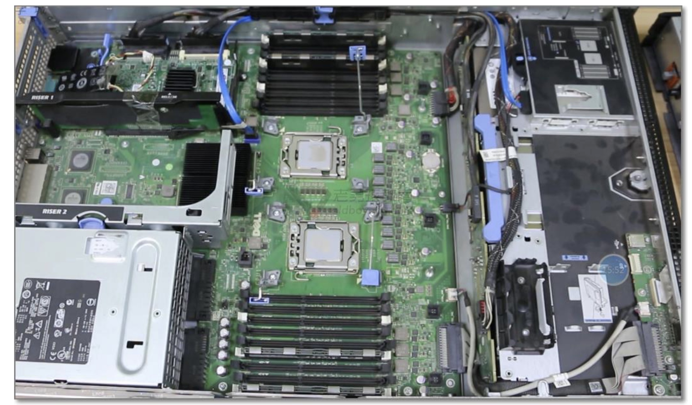</p>
<p>/proc/loadavg:&#x7CFB;&#x7EDF;&#x8D1F;&#x8F7D;&#x4FE1;&#x606F;&#xFF0C;uptime &#x7684;&#x7ED3;&#x679C;</p>
<p> /proc/mounts:&#x5DF2;&#x52A0;&#x8F7D;&#x7684;&#x6587;&#x4EF6;&#x7CFB;&#x7EDF;&#x7684;&#x5217;&#x8868; </p>
<blockquote>
<p>/var&#x76EE;&#x5F55;&#x4E0B;&#x6587;&#x4EF6;</p>
</blockquote>
<p>/var/log:&#x8BB0;&#x5F55;&#x7CFB;&#x7EDF;&#x53CA;&#x8F6F;&#x4EF6;&#x8FD0;&#x884C;&#x4FE1;&#x606F;&#x6587;&#x4EF6;&#x6240;&#x5728;&#x7684;&#x76EE;&#x5F55;</p>
<p>/var/log/messages:&#x7CFB;&#x7EDF;&#x7EA7;&#x522B;&#x65E5;&#x5FD7;&#x6587;&#x4EF6; </p>
<p>/var/log/secure:&#x7528;&#x6237;&#x767B;&#x5F55;&#x4FE1;&#x606F;&#x65E5;&#x5FD7;&#x6587;&#x4EF6; </p>
<p>/var/log/dmesg:&#x8BB0;&#x5F55;&#x786C;&#x4EF6;&#x4FE1;&#x606F;&#x52A0;&#x8F7D;&#x60C5;&#x51B5;&#x7684;&#x65E5;&#x5FD7;&#x6587;&#x4EF6; </p>
<h1 id="&#x8865;&#x5145;"><a name="&#x8865;&#x5145;" class="plugin-anchor" href="#&#x8865;&#x5145;"><i class="fa fa-link" aria-hidden="true"></i></a>&#x8865;&#x5145;</h1>
<h1 id="linux&#x7CFB;&#x7EDF;&#x57FA;&#x7840;&#x6982;&#x5FF5;"><a name="linux&#x7CFB;&#x7EDF;&#x57FA;&#x7840;&#x6982;&#x5FF5;" class="plugin-anchor" href="#linux&#x7CFB;&#x7EDF;&#x57FA;&#x7840;&#x6982;&#x5FF5;"><i class="fa fa-link" aria-hidden="true"></i></a>Linux&#x7CFB;&#x7EDF;&#x57FA;&#x7840;&#x6982;&#x5FF5;</h1>
<blockquote>
<p>&#x63D0;&#x793A;&#xFF1A;&#x53EF;&#x4EE5;&#x653E;&#x5927;linux&#x56FE;&#x5F62;&#x5316;&#x7EC8;&#x7AEF;&#x7684;&#x5B57;&#x4F53;</p>
</blockquote>
<pre><code>ctrl   shift   +   &#x653E;&#x5927;&#x5B57;&#x4F53;
ctrl  -    &#x7F29;&#x5C0F;&#x5B57;&#x4F53;
</code></pre><p>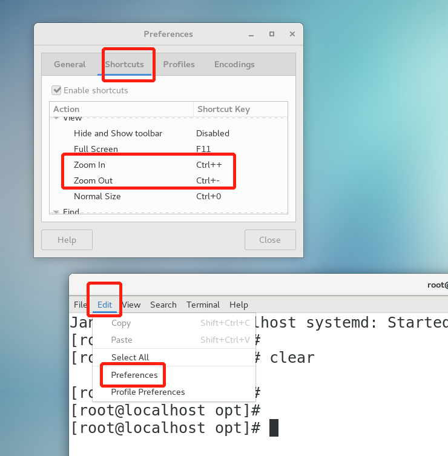</p>
<h2 id="1&#x4E25;&#x683C;&#x533A;&#x5206;&#x5927;&#x5C0F;&#x5199;"><a name="1&#x4E25;&#x683C;&#x533A;&#x5206;&#x5927;&#x5C0F;&#x5199;" class="plugin-anchor" href="#1&#x4E25;&#x683C;&#x533A;&#x5206;&#x5927;&#x5C0F;&#x5199;"><i class="fa fa-link" aria-hidden="true"></i></a>1.&#x4E25;&#x683C;&#x533A;&#x5206;&#x5927;&#x5C0F;&#x5199;</h2>
<p>windows&#xFF1A;&#x4E0D;&#x533A;&#x5206;&#x5927;&#x5C0F;&#x5199;&#xFF0C;&#x6BD4;&#x5982;&#x4F60;&#x521B;&#x5EFA;&#x6587;&#x4EF6;&#x5939;&#xFF0C;&#x8F93;&#x5165;&#x5927;&#x5199;&#xFF0C;&#x5C0F;&#x5199;&#xFF0C;windows&#x90FD;&#x8BA4;&#x4E3A;&#x662F;&#x540C;&#x4E00;&#x4E2A;&#x3002;</p>
<p>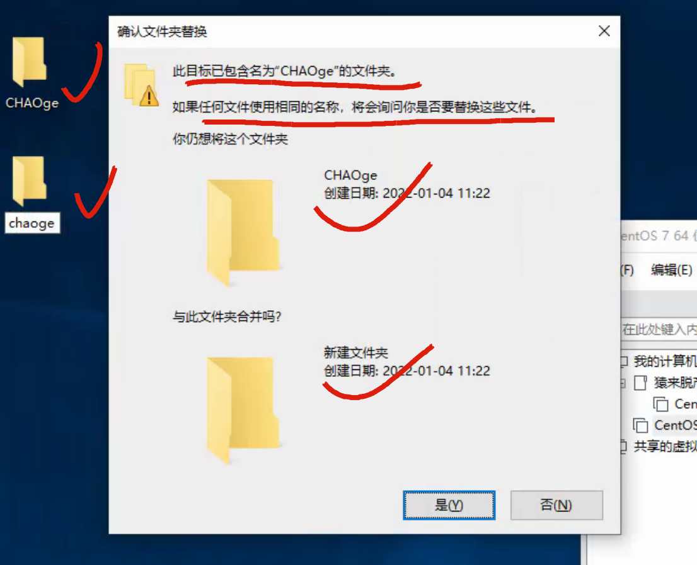</p>
<p>linux&#x4E25;&#x683C;&#x533A;&#x5206;&#x5927;&#x5C0F;&#x5199;&#xFF0C;&#x6587;&#x4EF6;&#x5939;&#x7684;&#x540D;&#x5B57;&#xFF0C;&#x5927;&#x5C0F;&#x5199;&#x4E0D;&#x540C;&#xFF0C;&#x5C31;&#x662F;&#x4E0D;&#x540C;&#x7684;&#x6587;&#x4EF6;&#x5939;&#xFF0C;&#x6587;&#x4EF6;&#x4E5F;&#x4E00;&#x6837;&#xFF0C;&#x56E0;&#x6B64;&#x6211;&#x4EEC;&#x540E;&#x7EED;&#x5BF9;&#x6587;&#x4EF6;&#xFF0C;&#x6587;&#x672C;&#x64CD;&#x4F5C;&#xFF0C;&#x8981;&#x6CE8;&#x610F;&#x5927;&#x5C0F;&#x5199;&#x7684;&#x533A;&#x5206;&#x5904;&#x7406;&#x3002;</p>
<p></p>
<p>&#x53EF;&#x4EE5;&#x770B;&#x5230;&#xFF0C;&#x4EC5;&#x6709;&#x4E00;&#x4E2A;&#x5B57;&#x6BCD;&#x7684;&#x5927;&#x5C0F;&#x5199;&#x4E0D;&#x540C;&#xFF0C;&#x4E5F;&#x662F;3&#x4E2A;&#x6587;&#x4EF6;&#x5939;&#x3002;</p>
<h2 id="2&#x6587;&#x4EF6;&#x6269;&#x5C55;&#x540D;"><a name="2&#x6587;&#x4EF6;&#x6269;&#x5C55;&#x540D;" class="plugin-anchor" href="#2&#x6587;&#x4EF6;&#x6269;&#x5C55;&#x540D;"><i class="fa fa-link" aria-hidden="true"></i></a>2.&#x6587;&#x4EF6;&#x6269;&#x5C55;&#x540D;</h2>
<h3 id="windows"><a name="windows" class="plugin-anchor" href="#windows"><i class="fa fa-link" aria-hidden="true"></i></a>windows</h3>
<p>Windows&#x662F;&#x4F9D;&#x8D56;&#x6269;&#x5C55;&#x540D;&#xFF0C;&#x533A;&#x5206;&#x4E0D;&#x540C;&#x7684;&#x6587;&#x4EF6;&#x7C7B;&#x578B;&#x3002;&#x6BD4;&#x5982;</p>
<p>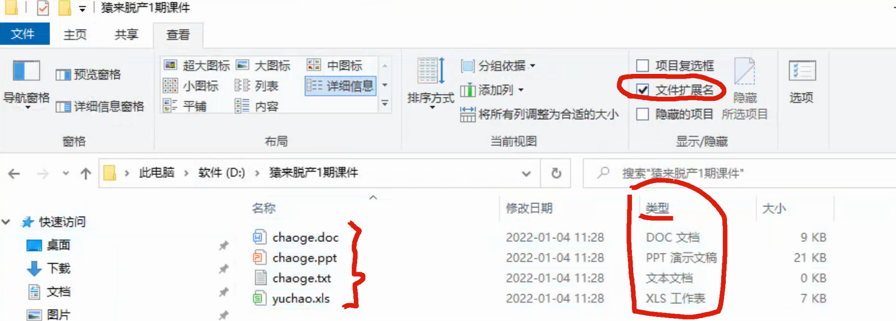</p>
<hr>
<p>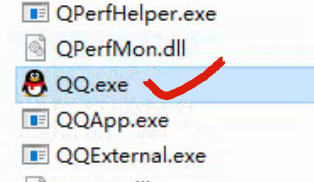</p>
<pre><code>.txt &#x662F;&#x666E;&#x901A;&#x6587;&#x672C;&#xFF0C;&#x4E00;&#x822C;&#x662F;&#x8BB0;&#x4E8B;&#x672C;&#x8FD9;&#x6837;&#x7684;&#x7F16;&#x8F91;&#x5668;&#x6253;&#x5F00;
.exe &#x662F;window&#x4E0B;&#x53EF;&#x4EE5;&#x76F4;&#x63A5;&#x6267;&#x884C;&#x7684;&#x6587;&#x4EF6;&#xFF0C;&#x6BD4;&#x5982;qq.exe &#x53CC;&#x51FB;&#x53EF;&#x4EE5;&#x8FD0;&#x884C;&#x51FA;qq&#x767B;&#x5F55;&#x5668;
.doc &#x662F;word&#x6587;&#x6863;
</code></pre><blockquote>
<p>windows&#x4E0B;&#x4FEE;&#x6539;&#x6587;&#x4EF6;&#x540D;&#xFF0C;&#x662F;&#x4F1A;&#x4FEE;&#x6539;&#x6587;&#x4EF6;&#x7C7B;&#x578B;&#x7684;&#xFF0C;&#x4F1A;&#x4FEE;&#x6539;&#x6587;&#x4EF6;&#x5C5E;&#x6027;&#x3002;</p>
</blockquote>
<p>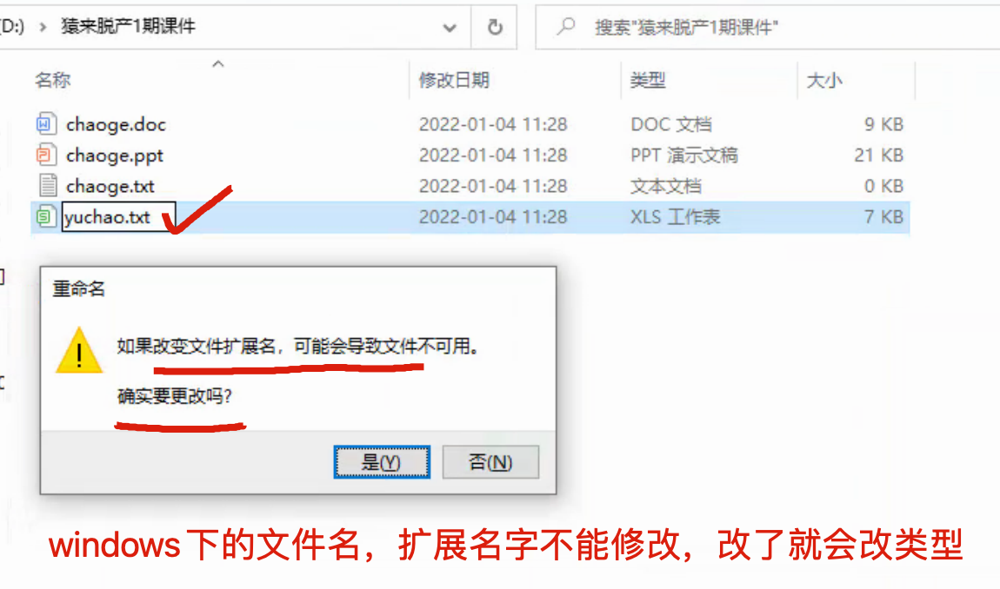</p>
<hr>
<p>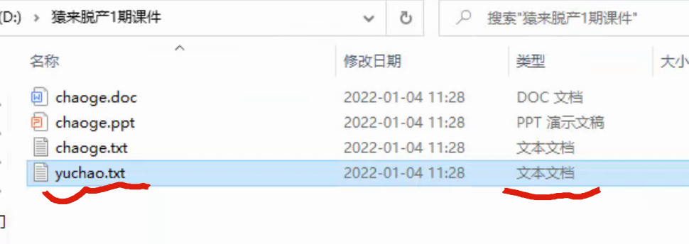</p>
<h3 id="linux"><a name="linux" class="plugin-anchor" href="#linux"><i class="fa fa-link" aria-hidden="true"></i></a>linux</h3>
<p>&#x800C;linux&#x662F;&#x5927;&#x6709;&#x4E0D;&#x540C;&#xFF0C;&#x901A;&#x8FC7;<code>&#x6743;&#x9650;&#x4F4D;&#x6807;&#x8BC6;</code>&#x6765;&#x786E;&#x5B9A;&#x6587;&#x4EF6;&#x7C7B;&#x578B;&#xFF0C;&#x6211;&#x4EEC;&#x5728;&#x5B66;&#x4E60;&#x6587;&#x4EF6;&#x5C5E;&#x6027;&#x7BC7;&#xFF0C;&#x91CD;&#x70B9;&#x518D;&#x8BB2;&#x89E3;&#xFF0C;&#x5148;&#x8BB0;&#x4F4F;&#x5982;&#x4E0B;&#x6982;&#x5FF5;&#x3002;</p>
<ul>
<li>linux&#x4E0D;&#x901A;&#x8FC7;&#x6587;&#x4EF6;&#x6269;&#x5C55;&#x540D;&#x6765;&#x8BC6;&#x522B;&#x6587;&#x4EF6;&#x7C7B;&#x578B;&#xFF0C;&#x6587;&#x4EF6;&#x6269;&#x5C55;&#x540D;&#xFF0C;&#x4EC5;&#x4EC5;&#x5C31;&#x662F;&#x8BA9;&#x8FD0;&#x7EF4;&#x4EBA;&#x5458;&#x80FD;&#x591F;&#x8089;&#x773C;&#x4E00;&#x773C;&#xFF0C;&#x5C31;&#x77E5;&#x9053;&#x5B83;&#x662F;&#x4EC0;&#x4E48;&#x7C7B;&#x578B;&#xFF0C;&#x4FBF;&#x4E8E;&#x7BA1;&#x7406;<ul>
<li>&#x4F46;&#x5176;&#x5B9E;&#x662F;&#x8BE5;&#x6587;&#x4EF6;&#x7C7B;&#x578B;&#x5728;&#x521B;&#x5EFA;&#x65F6;&#x5DF2;&#x7ECF;&#x5B9A;&#x4E49;&#x597D;&#xFF0C;&#x6587;&#x4EF6;&#x540D;&#x53EA;&#x662F;&#x7528;&#x4E8E;&#x663E;&#x793A;&#xFF0C;&#x4E0D;&#x50CF;windows&#x4E0B;&#x6709;&#x5B9E;&#x9645;&#x610F;&#x4E49;&#x3002;</li>
<li>&#x5373;&#x4F7F;&#x4F60;&#x4FEE;&#x6539;linux&#x7684;&#x6587;&#x4EF6;&#x540D;&#xFF0C;&#x4E5F;&#x4E0D;&#x4F1A;&#x4FEE;&#x6539;&#x6587;&#x4EF6;&#x7684;&#x7C7B;&#x578B;&#x3002;</li>
</ul>
</li>
</ul>
<p></p>
<hr>
<p></p>
<h3 id="&#x6269;&#x5C55;&#x540D;&#x5C0F;&#x7ED3;"><a name="&#x6269;&#x5C55;&#x540D;&#x5C0F;&#x7ED3;" class="plugin-anchor" href="#&#x6269;&#x5C55;&#x540D;&#x5C0F;&#x7ED3;"><i class="fa fa-link" aria-hidden="true"></i></a>&#x6269;&#x5C55;&#x540D;&#x5C0F;&#x7ED3;</h3>
<p>&#x4E3A;&#x4E86;&#x533A;&#x5206;&#x51FA;&#x6587;&#x4EF6;&#x7C7B;&#x578B;&#xFF0C;&#x6211;&#x4EEC;&#x8FD8;&#x662F;&#x4F1A;&#x7ED9;linux&#x6587;&#x4EF6;&#xFF0C;&#x6DFB;&#x52A0;&#x4E0A;&#x9605;&#x8BFB;&#x6027;&#x66F4;&#x597D;&#x7684;&#x6587;&#x4EF6;&#x6269;&#x5C55;&#x540D;&#x5B57;&#x3002;</p>
<p>&#x5E38;&#x89C1;&#x7684;&#x6709;</p>
<ul>
<li><p>&#x538B;&#x7F29;&#x6587;&#x4EF6;</p>
<ul>
<li>Linux &#x4E0B;&#x5E38;&#x89C1;&#x7684;&#x538B;&#x7F29;&#x6587;&#x4EF6;&#x540D;&#x6709; <em>.gz&#x3001;</em>.bz2&#x3001;<em>.zip&#x3001;</em>.tar.gz&#x3001;<em>.tar.bz2&#x3001;</em>.tgz &#x7B49;&#x3002;</li>
<li>&#x4E3A;&#x4EC0;&#x4E48;&#x538B;&#x7F29;&#x5305;&#x4E00;&#x5B9A;&#x8981;&#x5199;&#x6269;&#x5C55;&#x540D;&#x5462;&#xFF1F;&#x5F88;&#x7B80;&#x5355;&#xFF0C;&#x5982;&#x679C;&#x4E0D;&#x5199;&#x6E05;&#x695A;&#x6269;&#x5C55;&#x540D;&#xFF0C;&#x90A3;&#x4E48;&#x7BA1;&#x7406;&#x5458;&#x4E0D;&#x5BB9;&#x6613;&#x5224;&#x65AD;&#x538B;&#x7F29;&#x5305;&#x7684;&#x683C;&#x5F0F;&#xFF0C;&#x867D;&#x7136;&#x6709;&#x547D;&#x4EE4;&#x53EF;&#x4EE5;&#x5E2E;&#x52A9;&#x5224;&#x65AD;&#xFF0C;&#x4F46;&#x662F;&#x76F4;&#x89C2;&#x4E00;&#x70B9;&#x66F4;&#x52A0;&#x65B9;&#x4FBF;&#x3002;</li>
<li>&#x5C31;&#x7B97;&#x6CA1;&#x5199;&#x6269;&#x5C55;&#x540D;&#xFF0C;&#x5728; Linux &#x4E2D;&#x4E00;&#x6837;&#x53EF;&#x4EE5;&#x89E3;&#x538B;&#x7F29;&#xFF0C;&#x4E0D;&#x5F71;&#x54CD;&#x4F7F;&#x7528;&#x3002;</li>
</ul>
</li>
<li><p>&#x8F6F;&#x4EF6;&#x5B89;&#x88C5;&#x5305;</p>
<ul>
<li>&#x5982;windows&#x4E0B;&#x7684;exe&#x6587;&#x4EF6;&#x4E00;&#x6837;&#x4F5C;&#x7528;&#xFF0C;linux&#x4E5F;&#x9700;&#x8981;&#x5B89;&#x88C5;&#x8F6F;&#x4EF6;&#xFF0C;&#x4E5F;&#x6709;&#x8F6F;&#x4EF6;&#x5305;&#x7684;&#x683C;&#x5F0F;&#x3002;&#x540E;&#x9762;&#x5B66;&#x4E60;&#x8F6F;&#x4EF6;&#x7BA1;&#x7406;&#x65F6;&#x91CD;&#x70B9;&#x8BB2;&#x89E3;&#x3002;</li>
<li>&#x5982;redhat&#x7CFB;&#x5217;&#x7684;RPM&#x5305;&#xFF0C;&#x6240;&#x6709;&#x7684;RPM&#x5305;&#x90FD;&#x662F;.rpm&#x540E;&#x7F00;&#x683C;&#x5F0F;&#x3002;</li>
</ul>
</li>
<li>&#x811A;&#x672C;&#x6587;&#x4EF6;<ul>
<li>&#x5982;shell&#x811A;&#x672C;&#xFF0C;.sh</li>
<li>&#x5982;python&#x811A;&#x672C;&#xFF0C;.py</li>
<li>&#x5982;java&#x7684; .java</li>
</ul>
</li>
<li>&#x7F51;&#x9875;&#x76F8;&#x5173;&#x7684;&#x6587;&#x4EF6;<ul>
<li>.html</li>
<li>.jpg</li>
<li>.js</li>
<li>.css</li>
</ul>
</li>
</ul>
<blockquote>
<p>&#x8FD9;&#x5F20;&#x56FE;&#x4E0B;&#x5C55;&#x793A;&#x4E86;&#x5927;&#x591A;&#x7684;linux&#x540E;&#x7F00;&#x683C;&#x5F0F;</p>
</blockquote>
<p>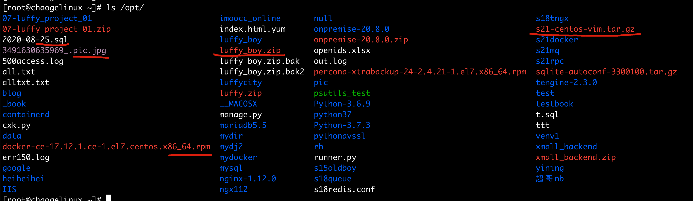</p>
<h2 id="3linux&#x4E00;&#x5207;&#x7686;&#x6587;&#x4EF6;"><a name="3linux&#x4E00;&#x5207;&#x7686;&#x6587;&#x4EF6;" class="plugin-anchor" href="#3linux&#x4E00;&#x5207;&#x7686;&#x6587;&#x4EF6;"><i class="fa fa-link" aria-hidden="true"></i></a>3.Linux&#x4E00;&#x5207;&#x7686;&#x6587;&#x4EF6;</h2>
<p>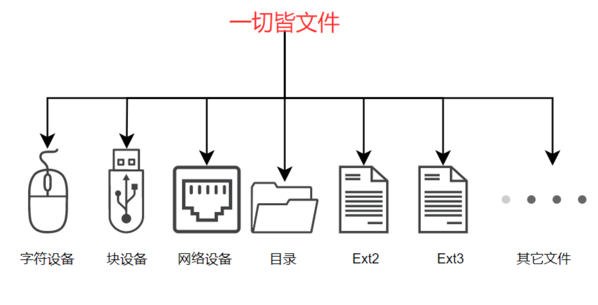</p>
<blockquote>
<p>&#x4F7F;&#x7528;linux&#xFF0C;&#x8BB0;&#x4F4F;&#x4E00;&#x53E5;&#x8BDD;&#xFF0C;linux&#x4E00;&#x5207;&#x7686;&#x6587;&#x4EF6;&#xFF0C;linux&#x4E0A;&#x6240;&#x6709;&#x7684;&#x5185;&#x5BB9;&#xFF0C;&#x90FD;&#x4EE5;&#x6587;&#x4EF6;&#x7684;&#x5F62;&#x5F0F;&#x4FDD;&#x5B58;&#x3002;</p>
<p>&#x6BD4;&#x5982;&#x6211;&#x4EEC;&#x53EF;&#x4EE5;&#x901A;&#x8FC7;&#x8BBF;&#x95EE;&#x67D0;&#x4E2A;&#x8DEF;&#x5F84;&#x4E0B;&#x7684;&#x6587;&#x4EF6;&#x5185;&#x5BB9;&#xFF0C;&#x8BFB;&#x53D6;&#x5982;&#x7F51;&#x5361;&#x7684;&#x4FE1;&#x606F;&#xFF0C;&#x8BFB;&#x53D6;&#x5982;U&#x76D8;&#x7684;&#x4FE1;&#x606F;&#x3002;</p>
<p>&#x4EE5;&#x67E5;&#x770B;&#x8FDB;&#x7A0B;&#x4E3A;&#x4F8B;&#xFF0C;&#x8FDB;&#x7A0B;&#x6307;&#x7684;&#x662F;&#x7CFB;&#x7EDF;&#x4E0A;&#x8FD0;&#x884C;&#x7684;&#x4E00;&#x4E2A;&#x7A0B;&#x5E8F;&#xFF0C;&#x5982;windows&#x4E0B;&#x7684;&#x8FDB;&#x7A0B;&#xFF0C;&#x8FD9;&#x662F;&#x4E00;&#x6BB5;&#x7A0B;&#x5E8F;&#xFF0C;&#x901A;&#x8FC7;&#x4EFB;&#x52A1;&#x7BA1;&#x7406;&#x5668;&#xFF0C;&#x624D;&#x80FD;&#x627E;&#x5230;&#x5B83;&#x7684;&#x4FE1;&#x606F;&#x3002;</p>
</blockquote>
<p>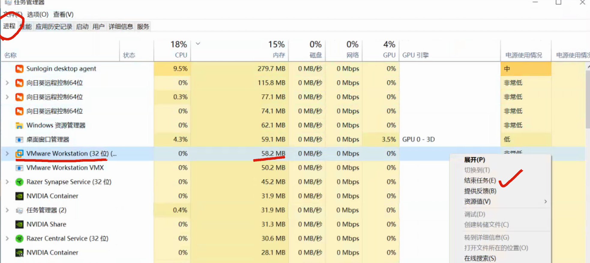</p>
<blockquote>
<p>linux&#x8BFB;&#x53D6;&#x8FDB;&#x7A0B;&#x4FE1;&#x606F;&#xFF0C;&#x53EF;&#x4EE5;&#x76F4;&#x63A5;&#x627E;&#x5230;&#x8FDB;&#x7A0B;&#x7684;&#x6587;&#x4EF6;</p>
</blockquote>
<p>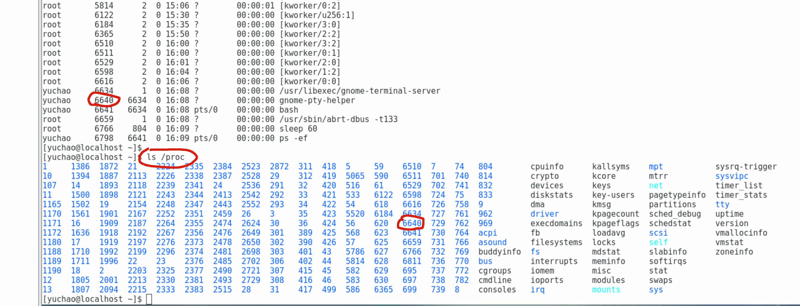</p>
<h3 id="linux&#x666E;&#x901A;&#x6587;&#x4EF6;&#x6587;&#x4EF6;&#x5939;"><a name="linux&#x666E;&#x901A;&#x6587;&#x4EF6;&#x6587;&#x4EF6;&#x5939;" class="plugin-anchor" href="#linux&#x666E;&#x901A;&#x6587;&#x4EF6;&#x6587;&#x4EF6;&#x5939;"><i class="fa fa-link" aria-hidden="true"></i></a>linux&#x666E;&#x901A;&#x6587;&#x4EF6;/&#x6587;&#x4EF6;&#x5939;</h3>
<p>&#x666E;&#x901A;&#x6587;&#x4EF6;&#xFF0C;&#x7C7B;&#x4F3C;windows&#x91CC;&#x7684;txt&#x6587;&#x4EF6;&#x6982;&#x5FF5;&#xFF0C;&#x53EF;&#x4EE5;&#x76F4;&#x63A5;&#x5199;&#x5165;&#x5185;&#x5BB9;&#xFF0C;&#x67E5;&#x770B;&#x6587;&#x4EF6;&#x5185;&#x5BB9;&#xFF0C;&#x8FD9;&#x5C31;&#x662F;&#x666E;&#x901A;&#x6587;&#x4EF6;&#x3002;</p>
<blockquote>
<p>windows&#x666E;&#x901A;&#x6587;&#x4EF6;&#x7279;&#x70B9;&#xFF0C;&#x4E00;&#x822C;&#x53EF;&#x4EE5;&#x8FD9;&#x4E48;&#x64CD;&#x4F5C;&#x7684;&#x5C31;&#x79F0;&#x4E4B;&#x4E3A;&#x666E;&#x901A;&#x6587;&#x4EF6;&#xFF0C;&#x5305;&#x62EC;&#x4E86;&#x5F88;&#x591A;&#x7C7B;&#x578B;&#xFF0C;&#x5982;.txt .doc</p>
</blockquote>
<ul>
<li>&#x7F16;&#x8F91;&#x5668;&#x76F4;&#x63A5;&#x6253;&#x5F00;</li>
<li>&#x5199;&#x5165;&#xFF0C;&#x4FEE;&#x6539;&#xFF0C;&#x4FDD;&#x5B58;&#xFF0C;&#x67E5;&#x770B;&#x5185;&#x5BB9;</li>
</ul>
<p>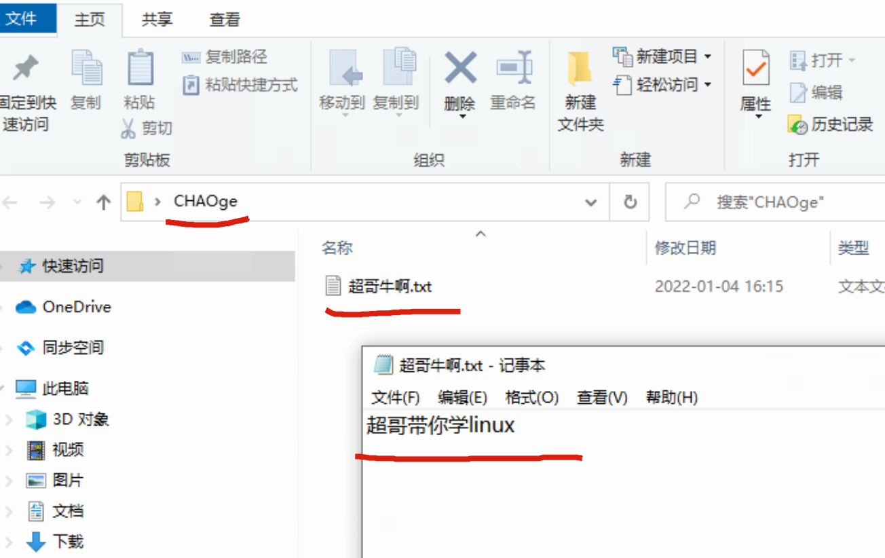</p>
<blockquote>
<p>linux&#x666E;&#x901A;&#x6587;&#x4EF6;&#xFF0C;&#x5982;&#x4F55;&#x533A;&#x5206;&#xFF0C;&#x6211;&#x4EEC;&#x77E5;&#x9053;&#x6CA1;&#x6CD5;&#x901A;&#x8FC7;&#x540E;&#x7F00;&#x540D;&#x76F4;&#x63A5;&#x5224;&#x65AD;</p>
<p>&#x6709;&#x529E;&#x6CD5;</p>
</blockquote>
<p>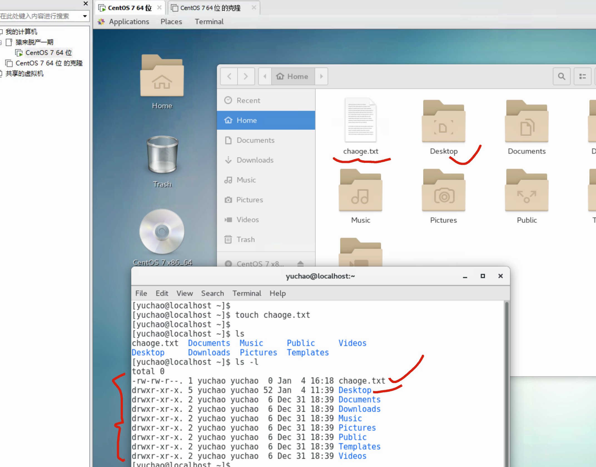</p>
<h3 id="linux&#x53EF;&#x6267;&#x884C;&#x6587;&#x4EF6;"><a name="linux&#x53EF;&#x6267;&#x884C;&#x6587;&#x4EF6;" class="plugin-anchor" href="#linux&#x53EF;&#x6267;&#x884C;&#x6587;&#x4EF6;"><i class="fa fa-link" aria-hidden="true"></i></a>linux&#x53EF;&#x6267;&#x884C;&#x6587;&#x4EF6;</h3>
<blockquote>
<p>&#x53EF;&#x6267;&#x884C;&#x6587;&#x4EF6;&#xFF0C;&#x6307;&#x7684;&#x662F;&#xFF0C;&#x8BE5;&#x6587;&#x4EF6;&#xFF0C;&#x53EF;&#x4EE5;&#x53CC;&#x51FB;&#x8FD0;&#x884C;&#xFF0C;&#x4EA7;&#x751F;&#x4E00;&#x4E9B;&#x6267;&#x884C;&#x4EFB;&#x52A1;&#xFF0C;&#x6BD4;&#x5982;QQ&#x5B89;&#x88C5;&#x5305;&#xFF0C;&#x6279;&#x91CF;&#x5904;&#x7406;&#x811A;&#x672C;&#x6587;&#x4EF6;&#x3002;</p>
</blockquote>
<p>windows&#xFF0C;&#x8089;&#x773C;&#x53EF;&#x4EE5;&#x901A;&#x8FC7;&#x4E0D;&#x540C;&#x7684;&#x540E;&#x7F00;&#xFF0C;&#x4E00;&#x822C;&#x53EF;&#x4EE5;&#x5F97;&#x77E5;&#xFF0C;&#x662F;&#x4EC0;&#x4E48;&#x6587;&#x4EF6;&#x7C7B;&#x578B;&#xFF0C;&#x5982;&#x4E0B;&#x662F;&#x5E38;&#x89C1;&#x7684;&#x53EF;&#x6267;&#x884C;&#x7C7B;&#x578B;&#x3002;</p>
<p>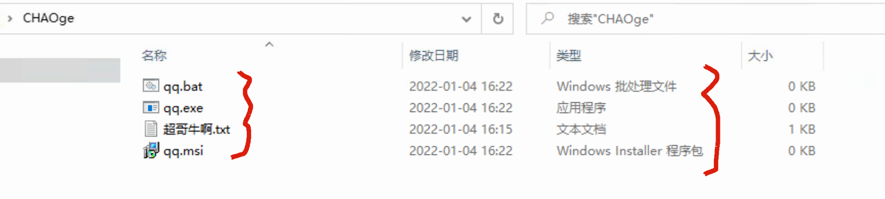</p>
<p>linux&#xFF0C;&#x662F;&#x5426;&#x53EF;&#x6267;&#x884C;&#xFF0C;&#x5C31;&#x4E0D;&#x662F;&#x540E;&#x7F00;&#x51B3;&#x5B9A;&#x7684;&#xFF0C;&#x800C;&#x4F9D;&#x7136;&#x662F;&#x901A;&#x8FC7;&#x6587;&#x4EF6;&#x5C5E;&#x6027;&#x67E5;&#x770B;&#x7684;&#x3002;&#xFF08;&#x8FD9;&#x4E2A;&#x5C5E;&#x6027;&#xFF0C;&#x5728;&#x4F60;&#x521B;&#x5EFA;&#x8BE5;&#x6587;&#x4EF6;&#x65F6;&#x5C31;&#x51B3;&#x5B9A;&#x4E86;&#xFF0C;&#x4EE5;&#x4E0D;&#x540C;&#x7684;linux&#x547D;&#x4EE4;&#x51B3;&#x5B9A;&#xFF09;</p>
<p>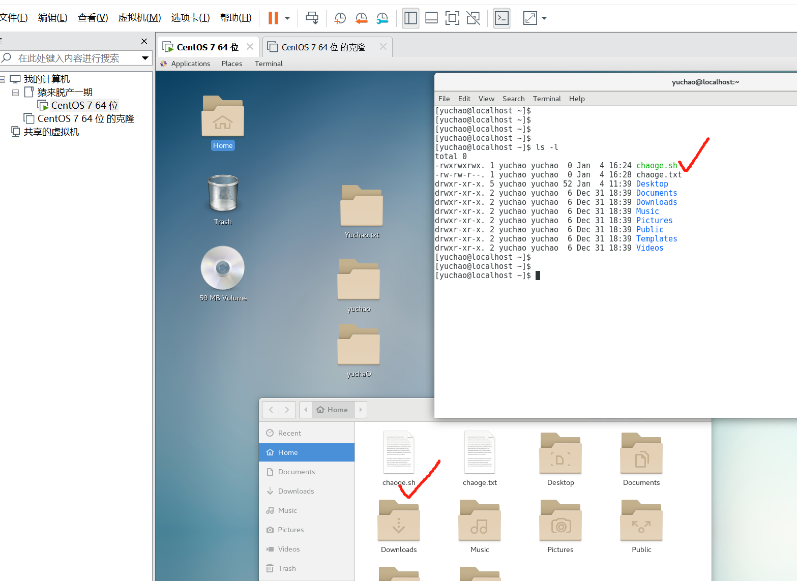</p>
<h3 id="linux&#x6587;&#x4EF6;&#x5939;"><a name="linux&#x6587;&#x4EF6;&#x5939;" class="plugin-anchor" href="#linux&#x6587;&#x4EF6;&#x5939;"><i class="fa fa-link" aria-hidden="true"></i></a>linux&#x6587;&#x4EF6;&#x5939;</h3>
<p>&#x53EF;&#x4EE5;&#x901A;&#x8FC7;&#x8089;&#x773C;&#x89C2;&#x5BDF;&#xFF08;&#x524D;&#x63D0;&#x662F;&#x5B89;&#x88C5;&#x4E86;&#x56FE;&#x5F62;&#x5316;linux&#x754C;&#x9762;&#xFF09;&#xFF0C;&#x84DD;&#x8272;&#x7684;&#x662F;&#x6587;&#x4EF6;&#x5939;&#xFF0C;&#x4EE5;&#x53CA;&#x6587;&#x4EF6;&#x5C5E;&#x6027;&#x5F00;&#x5934;&#x662F;d&#xFF0C;&#x8868;&#x793A;&#x76EE;&#x5F55;&#x3002;</p>
<p>&#x6587;&#x4EF6;&#x5939;&#x7528;&#x4E8E;&#x7BA1;&#x7406;&#x4E00;&#x5806;&#x6587;&#x4EF6;&#xFF0C;&#x4EE5;&#x53CA;&#x5B50;&#x6587;&#x4EF6;&#x5939;&#x3002;</p>
<p>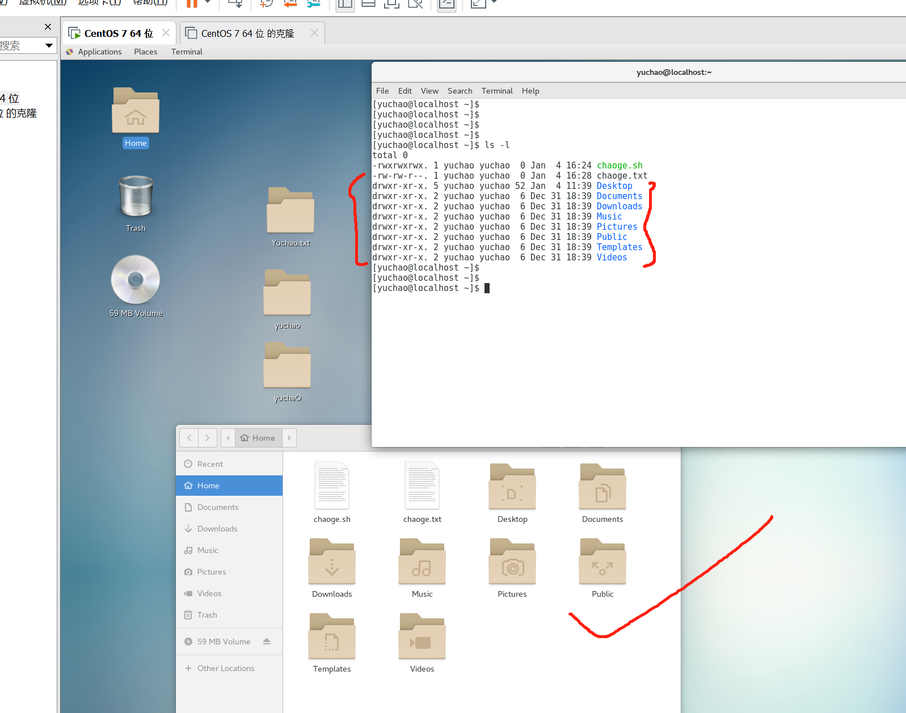</p>
<p>windows&#x7684;&#x6587;&#x4EF6;&#x5939;&#x5C31;&#x4E0D;&#x591A;&#x8BF4;&#x4E86;&#x3002;</p>
<h2 id="4linux&#x7684;&#x76EE;&#x5F55;&#x5FC5;&#x987B;&#x6302;&#x8F7D;&#x540E;&#x4F7F;&#x7528;"><a name="4linux&#x7684;&#x76EE;&#x5F55;&#x5FC5;&#x987B;&#x6302;&#x8F7D;&#x540E;&#x4F7F;&#x7528;" class="plugin-anchor" href="#4linux&#x7684;&#x76EE;&#x5F55;&#x5FC5;&#x987B;&#x6302;&#x8F7D;&#x540E;&#x4F7F;&#x7528;"><i class="fa fa-link" aria-hidden="true"></i></a>4.Linux&#x7684;&#x76EE;&#x5F55;&#x5FC5;&#x987B;&#x6302;&#x8F7D;&#x540E;&#x4F7F;&#x7528;</h2>
<p>&#x6302;&#x8F7D;&#xFF0C;mount&#xFF0C;&#x6307;&#x7684;&#x662F;&#x7ED9;&#x5B58;&#x50A8;&#x8BBE;&#x5907;&#x5206;&#x914D;&#x76D8;&#x7B26;&#xFF0C;&#x8BA9;&#x6211;&#x4EEC;&#x80FD;&#x627E;&#x5230;&#xFF0C;&#x4F7F;&#x7528;&#x5B58;&#x50A8;&#x8BBE;&#x5907;&#xFF08;U&#x76D8;&#xFF0C;&#x79FB;&#x52A8;&#x786C;&#x76D8;&#xFF09;</p>
<blockquote>
<p>windows&#x4E0B;&#x7684;&#x6302;&#x8F7D;&#xFF0C;&#x8D85;&#x54E5;&#x7684;&#x7535;&#x8111;&#x91CC;&#x6709;&#x597D;&#x51E0;&#x5757;&#x786C;&#x76D8;&#xFF0C;C&#x76D8;&#x662F;&#x56FA;&#x6001;&#x786C;&#x76D8;&#xFF0C;D&#xFF0C;E&#x4E24;&#x4E2A;&#x76D8;&#x662F;&#x673A;&#x68B0;&#x786C;&#x76D8;&#x3002;</p>
<p>windows&#x64CD;&#x4F5C;&#x7CFB;&#x7EDF;&#x7ED9;&#x786C;&#x76D8;&#x52A0;&#x4E0A;&#x4E86;&#x6807;&#x8BB0;&#xFF0C;&#x6211;&#x4EEC;&#x901A;&#x8FC7;C&#x76D8;&#xFF0C;&#x76D8;&#x7B26;&#xFF0C;&#x5373;&#x53EF;&#x627E;&#x5230;C&#x76D8;&#x91CC;&#x7684;&#x6570;&#x636E;&#x3002;</p>
</blockquote>
<p>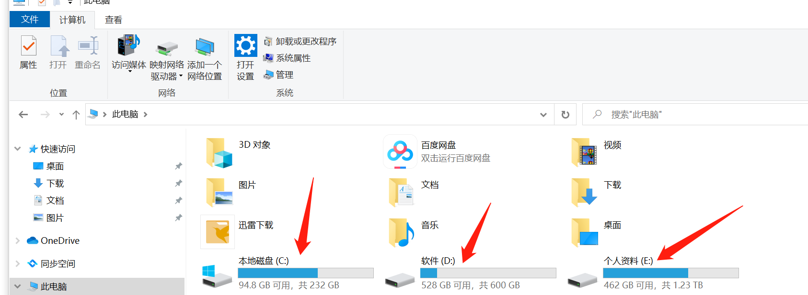</p>
<blockquote>
<p>linux&#x91CC;&#x6CA1;&#x6709;&#x63D0;&#x4F9B;&#x8FD9;&#x6837;&#x7684;&#x5B57;&#x6BCD;&#xFF0C;&#x76D8;&#x7B26;&#x3002;</p>
<p>&#x800C;&#x662F;</p>
<p>1.&#x521B;&#x5EFA;&#x4E00;&#x4E2A;&#x7A7A;&#x6587;&#x4EF6;&#x5939;&#xFF0C;&#x8BE5;&#x6587;&#x4EF6;&#x5939;&#x6709;&#x4E2A;&#x540D;&#x5B57;&#xFF0C;&#x53EB;&#x505A;&#x6302;&#x8F7D;&#x70B9;&#xFF08;&#x7406;&#x89E3;&#x4E3A;windows&#x4E0B;&#x7684;&#x76D8;&#x7B26;&#x6982;&#x5FF5;&#xFF09;</p>
<p>2.&#x628A;&#x8BBE;&#x5907;&#x548C;&#x8FD9;&#x4E2A;&#x7A7A;&#x6587;&#x4EF6;&#x5939;&#x505A;&#x4E00;&#x4E2A;&#x8FDE;&#x63A5;&#xFF08;&#x8FD9;&#x5C31;&#x53EB;&#x505A;&#x6302;&#x8F7D;&#xFF09;&#xFF0C;&#x6302;&#x8F7D;&#x662F;&#x901A;&#x8FC7;linux&#x547D;&#x4EE4;&#x5B9E;&#x73B0;&#xFF0C;&#x540E;&#x9762;&#x8BB2;&#x3002;</p>
</blockquote>
<h3 id="&#x56FE;&#x89E3;linux&#x6302;&#x8F7D;"><a name="&#x56FE;&#x89E3;linux&#x6302;&#x8F7D;" class="plugin-anchor" href="#&#x56FE;&#x89E3;linux&#x6302;&#x8F7D;"><i class="fa fa-link" aria-hidden="true"></i></a>&#x56FE;&#x89E3;linux&#x6302;&#x8F7D;</h3>
<p>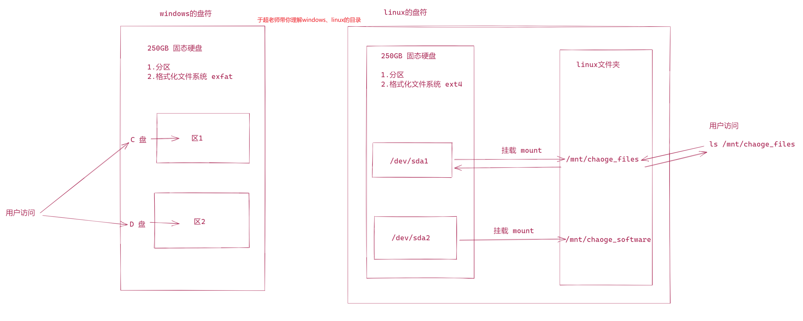</p>
<p>windows</p>
<ul>
<li>&#x4E70;&#x786C;&#x76D8;</li>
<li>&#x5206;&#x533A;</li>
<li>&#x683C;&#x5F0F;&#x5316;</li>
</ul>
<p>linux</p>
<ul>
<li>&#x4E70;&#x786C;&#x76D8;</li>
<li>&#x5206;&#x533A;</li>
<li>&#x683C;&#x5F0F;&#x5316;</li>
<li>&#x6302;&#x8F7D;</li>
</ul>
<p>&#x6302;&#x8F7D;&#x547D;&#x4EE4;</p>
<pre><code>mount  /dev/sda1 /mnt/chaoge_file
</code></pre><h2 id="5&#x4E00;&#x5207;&#x7686;&#x6587;&#x4EF6;&#x7EC6;&#x8282;"><a name="5&#x4E00;&#x5207;&#x7686;&#x6587;&#x4EF6;&#x7EC6;&#x8282;" class="plugin-anchor" href="#5&#x4E00;&#x5207;&#x7686;&#x6587;&#x4EF6;&#x7EC6;&#x8282;"><i class="fa fa-link" aria-hidden="true"></i></a>5.&#x4E00;&#x5207;&#x7686;&#x6587;&#x4EF6;&#x7EC6;&#x8282;</h2>
<p>linux/unix&#x4E0B;&#x7684;&#x54F2;&#x5B66;&#x6838;&#x5FC3;&#x601D;&#x60F3;&#x662F;&#x2018;&#x4E00;&#x5207;&#x7686;&#x6587;&#x4EF6;&#x2019;&#x3002;</p>
<pre><code>&#x201C;&#x4E00;&#x5207;&#x7686;&#x6587;&#x4EF6;&#x201D;&#xFF0C;&#x6307;&#x7684;&#x662F;&#xFF0C;&#x5BF9;&#x6240;&#x6709;&#x6587;&#x4EF6;&#xFF08;&#x76EE;&#x5F55;&#x3001;&#x5B57;&#x7B26;&#x8BBE;&#x5907;&#x3001;&#x5757;&#x8BBE;&#x5907;&#x3001;&#x5957;&#x63A5;&#x5B57;&#x3001;&#x6253;&#x5370;&#x673A;&#x3001;&#x8FDB;&#x7A0B;&#x3001;&#x7EBF;&#x7A0B;&#x3001;&#x7BA1;&#x9053;&#x7B49;&#xFF09;&#x64CD;&#x4F5C;&#xFF0C;&#x8BFB;&#x5199;&#x90FD;&#x53EF;&#x7528;fopen()/fclose()/fwrite()/fread()&#x7B49;&#x51FD;&#x6570;&#x8FDB;&#x884C;&#x5904;&#x7406;&#x3002;&#x5C4F;&#x853D;&#x4E86;&#x786C;&#x4EF6;&#x7684;&#x533A;&#x522B;&#xFF0C;&#x6240;&#x6709;&#x8BBE;&#x5907;&#x90FD;&#x62BD;&#x8C61;&#x6210;&#x6587;&#x4EF6;&#xFF0C;&#x63D0;&#x4F9B;&#x7EDF;&#x4E00;&#x7684;&#x63A5;&#x53E3;&#x7ED9;&#x7528;&#x6237;&#x3002;&#x867D;&#x7136;&#x7C7B;&#x578B;&#x5404;&#x4E0D;&#x76F8;&#x540C;&#xFF0C;&#x4F46;&#x662F;&#x5BF9;&#x5176;&#x63D0;&#x4F9B;&#x7684;&#x5374;&#x662F;&#x540C;&#x4E00;&#x5957;&#x64CD;&#x4F5C;&#x754C;&#x9762;&#x3002;&#x66F4;&#x8FDB;&#x4E00;&#x6B65;&#xFF0C;&#x5BF9;&#x6587;&#x4EF6;&#x7684;&#x64CD;&#x4F5C;&#x4E5F;&#x53EF;&#x4EE5;&#x8DE8;&#x6587;&#x4EF6;&#x7CFB;&#x7EDF;&#x6267;&#x884C;&#x3002;
</code></pre><p>&#x90A3;&#x4E48;&#x5982;&#x4F55;&#x64CD;&#x4F5C;&#x4E00;&#x4E2A;&#x5DF2;&#x7ECF;&#x6253;&#x5F00;&#x7684;&#x6587;&#x4EF6;&#xFF1F;</p>
<pre><code>&#x6587;&#x4EF6;&#x63CF;&#x8FF0;&#x7B26;&#xFF08;file descriptor&#xFF09;&#xFF0C;&#x7B80;&#x79F0;fd&#x3002;&#x8FD9;&#x91CC;&#x5C31;&#x4F7F;&#x7528;&#x5230;&#x4E86;&#x201C;&#x6587;&#x4EF6;&#x63CF;&#x8FF0;&#x7B26;&#x201D;&#xFF0C;&#x5B83;&#x662F;&#x4E00;&#x4E2A;&#x5BF9;&#x5E94;&#x67D0;&#x4E2A;&#x5DF2;&#x7ECF;&#x6253;&#x5F00;&#x7684;&#x6587;&#x4EF6;&#x7684;&#x7D22;&#x5F15;&#xFF08;&#x975E;&#x8D1F;&#x6574;&#x6570;&#xFF09;&#x3002;
</code></pre><p>&#x6587;&#x4EF6;&#x7C7B;&#x578B;</p>
<table>
<thead>
<tr>
<th style="text-align:left">&#x7C7B;&#x578B;</th>
<th style="text-align:left">&#x7B80;&#x79F0;</th>
<th style="text-align:left">&#x63CF;&#x8FF0;</th>
</tr>
</thead>
<tbody>
<tr>
<td style="text-align:left">&#x666E;&#x901A;&#x6587;&#x4EF6;</td>
<td style="text-align:left">-,Normal File</td>
<td style="text-align:left">&#x5982;mp4&#x3001;pdf&#x3001;html log&#xFF1B; &#x7528;&#x6237;&#x53EF;&#x4EE5;&#x6839;&#x636E;&#x8BBF;&#x95EE;&#x6743;&#x9650;&#x5BF9;&#x666E;&#x901A;&#x6587;&#x4EF6;&#x8FDB;&#x884C;&#x67E5;&#x770B;&#x3001;&#x66F4;&#x6539;&#x548C;&#x5220;&#x9664;&#xFF0C;&#x5305;&#x62EC; &#x7EAF;&#x6587;&#x672C;&#x6587;&#x4EF6;(ASCII)&#xFF1B;&#x4E8C;&#x8FDB;&#x5236;&#x6587;&#x4EF6;(binary)&#xFF1B;&#x6570;&#x636E;&#x683C;&#x5F0F;&#x7684;&#x6587;&#x4EF6;(data);&#x5404;&#x79CD;&#x538B;&#x7F29;&#x6587;&#x4EF6;.&#x7B2C;&#x4E00;&#x4E2A;&#x5C5E;&#x6027;&#x4E3A; [-]</td>
</tr>
<tr>
<td style="text-align:left">&#x76EE;&#x5F55;&#x6587;&#x4EF6;</td>
<td style="text-align:left">d,directory file</td>
<td style="text-align:left">/usr/ /home/ &#x76EE;&#x5F55;&#x6587;&#x4EF6;&#x5305;&#x542B;&#x4E86;&#x5404;&#x81EA;&#x76EE;&#x5F55;&#x4E0B;&#x7684;&#x6587;&#x4EF6;&#x540D;&#x548C;&#x6307;&#x5411;&#x8FD9;&#x4E9B;&#x6587;&#x4EF6;&#x7684;&#x6307;&#x9488;&#xFF0C;&#x6253;&#x5F00;&#x76EE;&#x5F55;&#x4E8B;&#x5B9E;&#x4E0A;&#x5C31;&#x662F;&#x6253;&#x5F00;&#x76EE;&#x5F55;&#x6587;&#x4EF6;&#xFF0C;&#x53EA;&#x8981;&#x6709;&#x8BBF;&#x95EE;&#x6743;&#x9650;&#xFF0C;&#x5C31;&#x53EF;&#x4EE5;&#x968F;&#x610F;&#x8BBF;&#x95EE;&#x8FD9;&#x4E9B;&#x76EE;&#x5F55;&#x4E0B;&#x7684;&#x6587;&#x4EF6;&#x3002;&#x80FD;&#x7528;#cd&#x547D;&#x4EE4;&#x8FDB;&#x5165;&#x7684;&#x3002;&#x7B2C;&#x4E00;&#x4E2A;&#x5C5E;&#x6027;&#x4E3A;[d]&#xFF0C;&#x4F8B;&#x5982; [drwxrwxrwx]</td>
</tr>
<tr>
<td style="text-align:left">&#x786C;&#x94FE;&#x63A5;</td>
<td style="text-align:left">-,hard links</td>
<td style="text-align:left">&#x82E5;&#x4E00;&#x4E2A;inode&#x53F7;&#x5BF9;&#x5E94;&#x591A;&#x4E2A;&#x6587;&#x4EF6;&#x540D;&#xFF0C;&#x5219;&#x79F0;&#x8FD9;&#x4E9B;&#x6587;&#x4EF6;&#x4E3A;&#x786C;&#x94FE;&#x63A5;&#x3002;&#x786C;&#x94FE;&#x63A5;&#x5C31;&#x662F;&#x540C;&#x4E00;&#x4E2A;&#x6587;&#x4EF6;&#x4F7F;&#x7528;&#x4E86;&#x591A;&#x4E2A;&#x522B;&#x540D;&#x5220;&#x9664;&#x65F6;,&#x53EA;&#x4F1A;&#x5220;&#x9664;&#x94FE;&#x63A5;, &#x4E0D;&#x4F1A;&#x5220;&#x9664;&#x6587;&#x4EF6;; &#x786C;&#x94FE;&#x63A5;&#x7684;&#x5C40;&#x9650;&#x6027;:1.&#x4E0D;&#x80FD;&#x5F15;&#x7528;&#x81EA;&#x8EAB;&#x6587;&#x4EF6;&#x7CFB;&#x7EDF;&#x4EE5;&#x5916;&#x7684;&#x6587;&#x4EF6;,&#x5373;&#x4E0D;&#x80FD;&#x5F15;&#x7528;&#x5176;&#x4ED6;&#x5206;&#x533A;&#x7684;&#x6587;&#x4EF6;;2.&#x65E0;&#x6CD5;&#x5F15;&#x7528;&#x76EE;&#x5F55;;</td>
</tr>
<tr>
<td style="text-align:left">&#x7B26;&#x53F7;&#x94FE;&#x63A5;&#xFF08;&#x8F6F;&#x94FE;&#x63A5;&#xFF09;</td>
<td style="text-align:left">l,symbolic link</td>
<td style="text-align:left">&#x82E5;&#x6587;&#x4EF6;&#x7528;&#x6237;&#x6570;&#x636E;&#x5757;&#x4E2D;&#x5B58;&#x653E;&#x7684;&#x5185;&#x5BB9;&#x662F;&#x53E6;&#x4E00;&#x6587;&#x4EF6;&#x7684;&#x8DEF;&#x5F84;&#x540D;&#x7684;&#x6307;&#x5411;&#xFF0C;&#x5219;&#x8BE5;&#x6587;&#x4EF6;&#x5C31;&#x662F;&#x8F6F;&#x8FDE;&#x63A5;&#xFF0C;&#x514B;&#x670D;&#x786C;&#x94FE;&#x63A5;&#x7684;&#x5C40;&#x9650;&#x6027;, &#x7C7B;&#x4F3C;&#x4E8E;&#x5FEB;&#x6377;&#x65B9;&#x5F0F;,&#x4F7F;&#x7528;&#x4E0E;&#x786C;&#x94FE;&#x63A5;&#x76F8;&#x540C;&#x3002;</td>
</tr>
<tr>
<td style="text-align:left">&#x5B57;&#x7B26;&#x8BBE;&#x5907;&#x6587;&#x4EF6;</td>
<td style="text-align:left">c,char</td>
<td style="text-align:left">&#x6587;&#x4EF6;&#x4E00;&#x822C;&#x9690;&#x85CF;&#x5728;/dev&#x76EE;&#x5F55;&#x4E0B;&#xFF0C;&#x5728;&#x8FDB;&#x884C;&#x8BBE;&#x5907;&#x8BFB;&#x53D6;&#x548C;&#x5916;&#x8BBE;&#x4EA4;&#x4E92;&#x65F6;&#x4F1A;&#x88AB;&#x4F7F;&#x7528;&#x5230; &#x5373;&#x4E32;&#x884C;&#x7AEF;&#x53E3;&#x7684;&#x63A5;&#x53E3;&#x8BBE;&#x5907;&#xFF0C;&#x4F8B;&#x5982;&#x952E;&#x76D8;&#x3001;&#x9F20;&#x6807;&#x7B49;&#x7B49;&#x3002;&#x7B2C;&#x4E00;&#x4E2A;&#x5C5E;&#x6027;&#x4E3A; [c]&#x3002; #/dev/tty&#x7684;&#x5C5E;&#x6027;&#x662F; crw-rw-rw-&#xFF0C;&#x6CE8;&#x610F;&#x524D;&#x9762;&#x7B2C;&#x4E00;&#x4E2A;&#x5B57; c&#xFF0C;&#x8FD9;&#x8868;&#x793A;&#x5B57;&#x7B26;&#x8BBE;&#x5907;&#x6587;&#x4EF6;</td>
</tr>
<tr>
<td style="text-align:left">&#x5757;&#x8BBE;&#x5907;&#x6587;&#x4EF6;</td>
<td style="text-align:left">b,block</td>
<td style="text-align:left">&#x5B58;&#x50A8;&#x6570;&#x636E;&#x4EE5;&#x4F9B;&#x7CFB;&#x7EDF;&#x5B58;&#x53D6;&#x7684;&#x63A5;&#x53E3;&#x8BBE;&#x5907;&#xFF0C;&#x7B80;&#x5355;&#x800C;&#x8A00;&#x5C31;&#x662F;&#x786C;&#x76D8;&#x3002; # /dev/hda1 &#x7684;&#x5C5E;&#x6027;&#x662F; brw-r&#x2014;&#x2013; &#xFF0C;&#x6CE8;&#x610F;&#x524D;&#x9762;&#x7684;&#x7B2C;&#x4E00;&#x4E2A;&#x5B57;&#x7B26;&#x662F;b&#xFF0C;&#x8FD9;&#x8868;&#x793A;&#x5757;&#x8BBE;&#x5907;&#xFF0C;&#x6BD4;&#x5982;&#x786C;&#x76D8;&#xFF0C;&#x5149;&#x9A71;&#x7B49;&#x8BBE;&#x5907; &#x7CFB;&#x7EDF;&#x4E2D;&#x7684;&#x6240;&#x6709;&#x8BBE;&#x5907;&#x8981;&#x4E48;&#x662F;&#x5757;&#x8BBE;&#x5907;&#x6587;&#x4EF6;&#xFF0C;&#x8981;&#x4E48;&#x662F;&#x5B57;&#x7B26;&#x8BBE;&#x5907;&#x6587;&#x4EF6;&#xFF0C;&#x65E0;&#x4E00;&#x4F8B;&#x5916;</td>
</tr>
<tr>
<td style="text-align:left">FIFO&#x7BA1;&#x9053;&#x6587;&#x4EF6;</td>
<td style="text-align:left">p,pipe</td>
<td style="text-align:left">&#x7BA1;&#x9053;&#x6587;&#x4EF6;&#x4E3B;&#x8981;&#x7528;&#x4E8E;&#x8FDB;&#x7A0B;&#x95F4;&#x901A;&#x8BAF;&#x3002;FIFO&#x89E3;&#x51B3;&#x591A;&#x4E2A;&#x7A0B;&#x5E8F;&#x540C;&#x65F6;&#x5B58;&#x53D6;&#x4E00;&#x4E2A;&#x6587;&#x4EF6;&#x6240;&#x9020;&#x6210;&#x7684;&#x9519;&#x8BEF;&#x3002;&#x6BD4;&#x5982;&#x4F7F;&#x7528;mkfifo&#x547D;&#x4EE4;&#x53EF;&#x4EE5;&#x521B;&#x5EFA;&#x4E00;&#x4E2A;FIFO&#x6587;&#x4EF6;&#xFF0C;&#x542F;&#x7528;&#x4E00;&#x4E2A;&#x8FDB;&#x7A0B;A&#x4ECE;FIFO&#x6587;&#x4EF6;&#x91CC;&#x8BFB;&#x6570;&#x636E;&#xFF0C;&#x542F;&#x52A8;&#x8FDB;&#x7A0B;B&#x5F80;FIFO&#x91CC;&#x5199;&#x6570;&#x636E;&#xFF0C;&#x5148;&#x8FDB;&#x5148;&#x51FA;&#xFF0C;&#x968F;&#x5199;&#x968F;&#x8BFB;&#x3002; # pipe</td>
</tr>
<tr>
<td style="text-align:left">&#x5957;&#x63A5;&#x5B57;</td>
<td style="text-align:left">s,socket</td>
<td style="text-align:left">&#x4EE5;&#x542F;&#x52A8;&#x4E00;&#x4E2A;&#x7A0B;&#x5E8F;&#x6765;&#x76D1;&#x542C;&#x5BA2;&#x6237;&#x7AEF;&#x7684;&#x8981;&#x6C42;&#xFF0C;&#x5BA2;&#x6237;&#x7AEF;&#x5C31;&#x53EF;&#x4EE5;&#x901A;&#x8FC7;&#x5957;&#x63A5;&#x5B57;&#x6765;&#x8FDB;&#x884C;&#x6570;&#x636E;&#x901A;&#x4FE1;&#x3002;&#x7528;&#x4E8E;&#x8FDB;&#x7A0B;&#x95F4;&#x7684;&#x7F51;&#x7EDC;&#x901A;&#x4FE1;&#xFF0C;&#x4E5F;&#x53EF;&#x4EE5;&#x7528;&#x4E8E;&#x672C;&#x673A;&#x4E4B;&#x95F4;&#x7684;&#x975E;&#x7F51;&#x7EDC;&#x901A;&#x4FE1;&#xFF0C;&#x7B2C;&#x4E00;&#x4E2A;&#x5C5E;&#x6027;&#x4E3A; [s]&#xFF0C;&#x8FD9;&#x4E9B;&#x6587;&#x4EF6;&#x4E00;&#x822C;&#x9690;&#x85CF;&#x5728;/var/run&#x76EE;&#x5F55;&#x4E0B;&#xFF0C;&#x8BC1;&#x660E;&#x7740;&#x76F8;&#x5173;&#x8FDB;&#x7A0B;&#x7684;&#x5B58;&#x5728;</td>
</tr>
</tbody>
</table>
<h2 id="6&#x56FE;&#x89E3;linux&#x4E0E;windows&#x76EE;&#x5F55;"><a name="6&#x56FE;&#x89E3;linux&#x4E0E;windows&#x76EE;&#x5F55;" class="plugin-anchor" href="#6&#x56FE;&#x89E3;linux&#x4E0E;windows&#x76EE;&#x5F55;"><i class="fa fa-link" aria-hidden="true"></i></a>6.&#x56FE;&#x89E3;linux&#x4E0E;Windows&#x76EE;&#x5F55;</h2>
<p><em>Linux&#x4E0E;windows&#x533A;&#x522B;</em></p>
<ul>
<li>windows&#x7279;&#x70B9;:E:\&#x5B66;&#x4E60;&#x89C6;&#x9891;\&#x9AD8;&#x6E05;&#x89C6;&#x9891;\</li>
<li>Linux&#x76EE;&#x5F55;&#x7279;&#x70B9;:/etc/hosts /root/data/yuchao.txt </li>
</ul>
<p>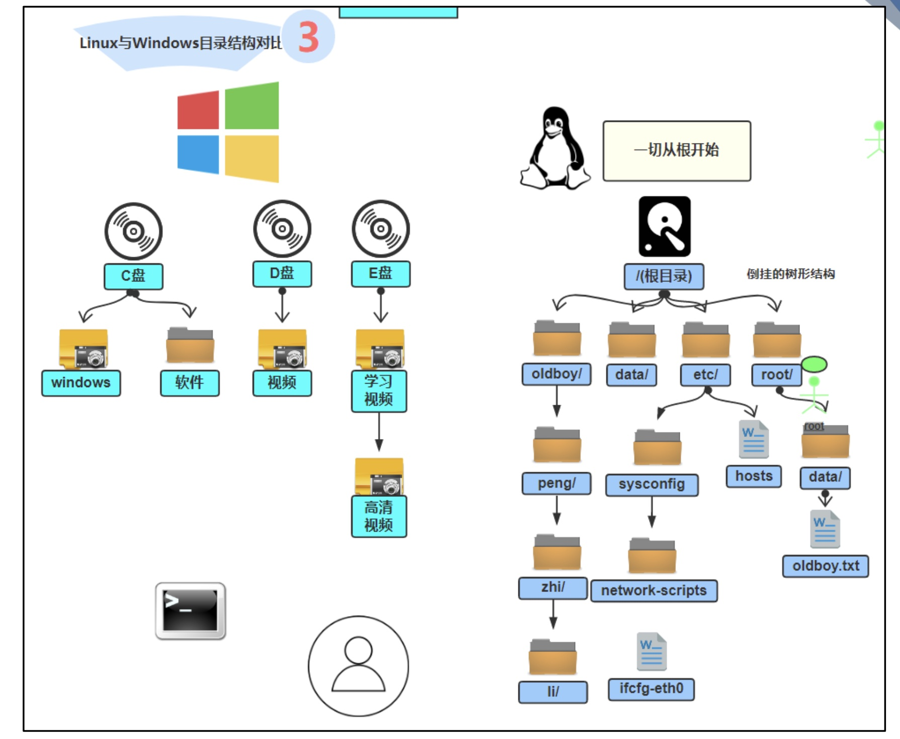 </p>
<p><strong>Linux</strong> &#x7CFB;&#x7EDF;&#x76EE;&#x5F55;&#x7ED3;&#x6784;&#x57FA;&#x672C;&#x7279;&#x70B9;&#xFF1A;</p>
<p>1.Linux&#x4E0B;&#x4E00;&#x5207;&#x4ECE;<code>&#x6839;</code>&#x5F00;&#x59CB;&#xFF0C;&#x6839;&#x91CC;&#x9762;&#x7684;&#x7B2C;&#x4E00;&#x5C42;&#x76EE;&#x5F55;&#xFF0C;&#x53EB;&#x505A;&#x4E00;&#x7EA7;&#x76EE;&#x5F55;&#xFF0C;&#x7136;&#x540E;&#x4F9D;&#x6B21;&#x4E8C;&#x7EA7;&#x76EE;&#x5F55;&#x3002;</p>
<p>2.Linux&#x4E0B;&#x9762;&#x7684;&#x76EE;&#x5F55;&#x662F;&#x4E00;&#x4E2A;&#x6709;&#x5C42;&#x6B21;&#x7684;&#x76EE;&#x5F55;&#x7ED3;&#x6784;</p>
<p>3.&#x5728;linux&#x4E2D;&#x6BCF;&#x4E2A;&#x76EE;&#x5F55;&#x53EF;&#x4EE5;&#x6302;&#x8F7D;&#x5230;&#x4E0D;&#x540C;&#x7684;&#x8BBE;&#x5907;(&#x78C1;&#x76D8;)&#x4E0A;</p>
<p>4.Linux &#x4E0B;&#x8BBE;&#x5907;&#x4E0D;&#x6302;&#x8F7D;&#x4E0D;&#x80FD;&#x4F7F;&#x7528;&#xFF0C;&#x4E0D;&#x6302;&#x8F7D;&#x7684;&#x8BBE;&#x5907;&#x76F8;&#x5F53;&#x4E8E;&#x6CA1;&#x95E8;&#x6CA1;&#x7A97;&#x6237;&#x7684;&#x76D1;&#x72F1;(&#x8FDB;&#x4E0D;&#x53BB;&#x51FA;&#x4E0D;&#x6765;)&#xFF0C;&#x6302;&#x8F7D;&#x76F8;&#x5F53;&#x4E8E;&#x7ED9;&#x8BBE;&#x5907;&#x521B;&#x9020;&#x4E86;&#x4E00;&#x4E2A;&#x5165;&#x53E3;(&#x6302;&#x8F7D;&#x70B9;&#xFF0C;&#x4E00;&#x822C;&#x4E3A;&#x76EE;&#x5F55;) </p>
<h3 id="&#x64CD;&#x4F5C;&#x7CFB;&#x7EDF;&#x76EE;&#x5F55;&#x5206;&#x9694;&#x7B26;"><a name="&#x64CD;&#x4F5C;&#x7CFB;&#x7EDF;&#x76EE;&#x5F55;&#x5206;&#x9694;&#x7B26;" class="plugin-anchor" href="#&#x64CD;&#x4F5C;&#x7CFB;&#x7EDF;&#x76EE;&#x5F55;&#x5206;&#x9694;&#x7B26;"><i class="fa fa-link" aria-hidden="true"></i></a>&#x64CD;&#x4F5C;&#x7CFB;&#x7EDF;&#x76EE;&#x5F55;&#x5206;&#x9694;&#x7B26;</h3>
<p><em>windows&#x5E73;&#x53F0;&#x547D;&#x4EE4;&#x884C;&#x76EE;&#x5F55;&#x5206;&#x9694;&#x7B26;</em></p>
<p>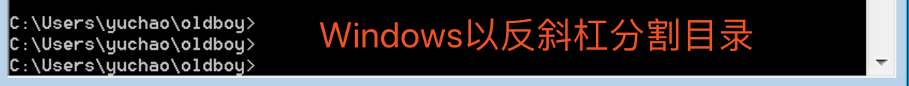</p>
<p><em>Linux&#x5E73;&#x53F0;&#x547D;&#x4EE4;&#x884C;&#x76EE;&#x5F55;&#x5206;&#x9694;&#x7B26;</em></p>
<p></p>
<h3 id="linux&#x4E0E;windows&#x7684;&#x76EE;&#x5F55;&#x7ED3;&#x6784;&#x6BD4;&#x8F83;"><a name="linux&#x4E0E;windows&#x7684;&#x76EE;&#x5F55;&#x7ED3;&#x6784;&#x6BD4;&#x8F83;" class="plugin-anchor" href="#linux&#x4E0E;windows&#x7684;&#x76EE;&#x5F55;&#x7ED3;&#x6784;&#x6BD4;&#x8F83;"><i class="fa fa-link" aria-hidden="true"></i></a>Linux&#x4E0E;Windows&#x7684;&#x76EE;&#x5F55;&#x7ED3;&#x6784;&#x6BD4;&#x8F83;</h3>
<p>Linux&#x9996;&#x5148;&#x662F;&#x5EFA;&#x7ACB;&#x4E00;&#x4E2A;&#x6839;&quot;/&quot;&#x6587;&#x4EF6;&#x7CFB;&#x7EDF;&#xFF0C;&#x6240;&#x6709;&#x7684;&#x76EE;&#x5F55;&#x4E5F;&#x90FD;&#x662F;&#x7531;&#x6839;&#x76EE;&#x5F55;&#x884D;&#x751F;&#x51FA;&#x6765;&#x3002;</p>
<p>&#x767B;&#x5F55;&#x7CFB;&#x7EDF;&#x540E;&#xFF0C;&#x5728;&#x5F53;&#x524D;&#x547D;&#x4EE4;&#x7A97;&#x53E3;&#x8F93;&#x5165;&#x547D;&#x4EE4;:</p>
<pre><code>ls /
</code></pre><p>&#x67E5;&#x770B;&#x7ED3;&#x679C;&#x5982;&#x4E0B;&#x56FE;&#xFF1A;</p>
<p>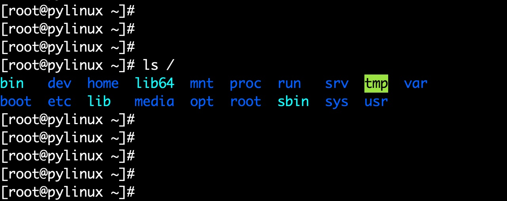 </p>
<p>&#x5728;Linux&#x5E95;&#x4E0B;&#xFF0C;&#x6240;&#x6709;&#x7684;&#x6587;&#x4EF6;&#x4E0E;&#x76EE;&#x5F55;&#x90FD;&#x662F;&#x7531;&#x6839;&#x76EE;&#x5F55;&#x5F00;&#x59CB;&#xFF0C;&#x662F;&#x76EE;&#x5F55;&#x4E0E;&#x6587;&#x4EF6;&#x7684;&#x6E90;&#x5934;&#xFF0C;&#x7136;&#x540E;&#x4E00;&#x4E2A;&#x4E2A;&#x7684;&#x5206;&#x652F;&#x4E0B;&#x6765;&#xFF0C;&#x5982;&#x540C;&#x6811;&#x679D;&#x72B6;&#xFF0C;&#x56E0;&#x6B64;&#x79F0;&#x4E3A;&#x8FD9;&#x79CD;&#x76EE;&#x5F55;&#x914D;&#x7F6E;&#x4E3A;&#xFF1A;<strong>&#x76EE;&#x5F55;&#x6811;</strong>&#x3002;</p>
<p>&#x76EE;&#x5F55;&#x6811;&#x7684;&#x7279;&#x70B9;&#x662F;&#x4EC0;&#x4E48;&#x5462;&#xFF1F;</p>
<ul>
<li>&#x76EE;&#x5F55;&#x6811;&#x7684;&#x8D77;&#x59CB;&#x70B9;&#x662F;&#x6839;&#x76EE;&#x5F55;(/,root);</li>
<li>&#x6BCF;&#x4E00;&#x4E2A;&#x76EE;&#x5F55;&#x4E0D;&#x6B62;&#x80FD;&#x4F7F;&#x7528;&#x672C;&#x5730;&#x7684;&#x6587;&#x4EF6;&#x7CFB;&#x7EDF;&#xFF0C;&#x4E5F;&#x53EF;&#x4EE5;&#x4F7F;&#x7528;&#x7F51;&#x7EDC;&#x4E0A;&#x7684;&#x6587;&#x4EF6;&#x7CFB;&#x7EDF;&#xFF0C;&#x53EF;&#x4EE5;&#x5229;&#x7528;NFS&#x670D;&#x52A1;&#x5668;&#x6302;&#x8F7D;&#x7279;&#x5B9A;&#x76EE;&#x5F55;&#x3002;</li>
<li>&#x6BCF;&#x4E00;&#x4E2A;&#x6587;&#x4EF6;&#x5728;&#x6B64;&#x76EE;&#x5F55;&#x6811;&#x4E2D;&#x7684;&#x6587;&#x4EF6;&#x540D;&#xFF0C;&#x5305;&#x542B;&#x5B8C;&#x6574;&#x8DEF;&#x5F84;&#x90FD;&#x662F;&#x72EC;&#x4E00;&#x65E0;&#x4E8C;&#x7684;&#x3002;</li>
</ul>
<h3 id="linux&#x76EE;&#x5F55;&#x6302;&#x8F7D;"><a name="linux&#x76EE;&#x5F55;&#x6302;&#x8F7D;" class="plugin-anchor" href="#linux&#x76EE;&#x5F55;&#x6302;&#x8F7D;"><i class="fa fa-link" aria-hidden="true"></i></a>Linux&#x76EE;&#x5F55;&#x6302;&#x8F7D;</h3>
<p><strong>&#x6302;&#x8F7D;</strong>&#x901A;&#x5E38;&#x662F;&#x5C06;&#x4E00;&#x4E2A;<code>&#x5B58;&#x50A8;&#x8BBE;&#x5907;</code>&#x6302;&#x63A5;&#x5230;&#x4E00;&#x4E2A;&#x5DF2;&#x7ECF;&#x5B58;&#x5728;&#x7684;<code>&#x76EE;&#x5F55;</code>&#x4E0A;&#xFF0C;&#x8BBF;&#x95EE;&#x8FD9;&#x4E2A;<code>&#x76EE;&#x5F55;</code>&#x5C31;&#x662F;&#x8BBF;&#x95EE;&#x8BE5;&#x5B58;&#x50A8;&#x8BBE;&#x5907;&#x7684;&#x5185;&#x5BB9;&#x3002;</p>
<p>&#x5BF9;&#x4E8E;Linux&#x7CFB;&#x7EDF;&#x6765;&#x8BF4;&#xFF0C;&#x4E00;&#x5207;&#x63A5;&#x6587;&#x4EF6;&#xFF0C;&#x6240;&#x6709;&#x6587;&#x4EF6;&#x90FD;&#x653E;&#x5728;&#x4EE5;<code>&#x6839;&#x76EE;&#x5F55;</code>&#x4E3A;&#x8D77;&#x70B9;&#x7684;&#x6811;&#x5F62;&#x76EE;&#x5F55;&#x7ED3;&#x6784;&#x4E2D;&#xFF0C;&#x4EFB;&#x4F55;&#x786C;&#x4EF6;&#x8BBE;&#x5907;&#x4E5F;&#x90FD;&#x662F;&#x6587;&#x4EF6;&#x5F62;&#x5F0F;</p>
<p>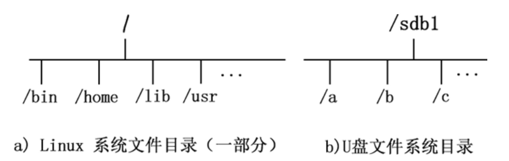</p>
<p>&#x5982;&#x56FE;&#x6240;&#x793A;&#xFF0C;&#x662F;U&#x76D8;&#x5B58;&#x50A8;&#x8BBE;&#x5907;&#x548C;Linux&#x7CFB;&#x7EDF;&#x81EA;&#x5DF1;&#x7684;&#x6587;&#x4EF6;&#x7CFB;&#x7EDF;&#x7ED3;&#x6784;&#xFF0C;&#x6B64;&#x65F6;Linux&#x60F3;&#x8981;&#x4F7F;&#x7528;U&#x76D8;&#x7684;&#x786C;&#x4EF6;&#x8BBE;&#x5907;&#xFF0C;&#x5FC5;&#x987B;&#x5C06;Linux<code>&#x672C;&#x8EAB;&#x7684;&#x76EE;&#x5F55;</code>&#x548C;&#x786C;&#x4EF6;&#x8BBE;&#x5907;&#x7684;&#x6587;&#x4EF6;&#x76EE;&#x5F55;&#x5408;&#x4E8C;&#x4E3A;&#x4E00;&#xFF0C;&#x6B64;&#x8FC7;&#x7A0B;&#x5C31;&#x79F0;&#x4E4B;&#x4E3A;<code>&#x6302;&#x8F7D;</code>&#x3002;</p>
<pre><code>&#x6302;&#x8F7D;&#x64CD;&#x4F5C;&#x4F1A;&#x9690;&#x85CF;&#x539F;&#x672C;Linux&#x76EE;&#x5F55;&#x4E2D;&#x7684;&#x6587;&#x4EF6;&#xFF0C;&#x56E0;&#x6B64;&#x9009;&#x62E9;Linux&#x672C;&#x8EAB;&#x7684;&#x76EE;&#x5F55;&#xFF0C;&#x6700;&#x597D;&#x662F;&#x65B0;&#x5EFA;&#x7A7A;&#x76EE;&#x5F55;&#x7528;&#x4E8E;&#x6302;&#x8F7D;
&#x6302;&#x8F7D;&#x4E4B;&#x540E;&#xFF0C;&#x8FD9;&#x4E2A;&#x76EE;&#x5F55;&#x88AB;&#x79F0;&#x4E3A;&#x6302;&#x8F7D;&#x70B9;
</code></pre><p>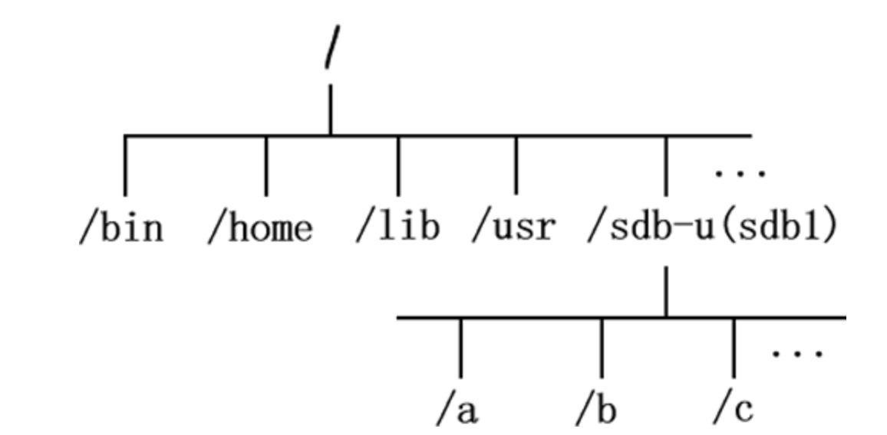</p>
<p>&#x6B64;&#x65F6;U&#x76D8;&#x6587;&#x4EF6;&#x7CFB;&#x7EDF;&#x5DF2;&#x7ECF;&#x662F;Linux&#x6587;&#x4EF6;&#x7CFB;&#x7EDF;&#x7684;&#x4E00;&#x90E8;&#x5206;&#xFF0C;&#x8BBF;&#x95EE;/sdb-u&#x6587;&#x4EF6;&#x5939;&#xFF0C;&#x5373;&#x662F;&#x8BBF;&#x95EE;&#x8BBF;&#x95EE;U&#x76D8;&#x7CFB;&#x7EDF;&#x4E2D;&#x7684;&#x6587;&#x4EF6;&#x5939;&#x3002;</p>
<h3 id="linx&#x7684;&#x73AF;&#x5883;&#x53D8;&#x91CF;"><a name="linx&#x7684;&#x73AF;&#x5883;&#x53D8;&#x91CF;" class="plugin-anchor" href="#linx&#x7684;&#x73AF;&#x5883;&#x53D8;&#x91CF;"><i class="fa fa-link" aria-hidden="true"></i></a>linx&#x7684;&#x73AF;&#x5883;&#x53D8;&#x91CF;</h3>
<p>&#x540C;&#x5B66;&#x4EEC;&#x5E94;&#x8BE5;&#x90FD;&#x4F1A;&#x914D;&#x7F6E;windows&#x4E0B;&#x7684;&#x73AF;&#x5883;&#x53D8;&#x91CF;&#xFF08;PATH&#xFF09;&#xFF0C;&#x90FD;&#x77E5;&#x9053;&#x7CFB;&#x7EDF;&#x4F1A;&#x6309;&#x7167;PATH&#x7684;&#x8BBE;&#x5B9A;&#xFF0C;&#x53BB;&#x6BCF;&#x4E2A;PATH&#x5B9A;&#x4E49;&#x7684;&#x76EE;&#x5F55;&#x4E0B;&#x641C;&#x7D22;&#x53EF;&#x6267;&#x884C;&#x6587;&#x4EF6;&#x3002;</p>
<p>&#x90A3;&#x4E48;&#x5982;&#x4F55;&#x67E5;&#x770B;Linux&#x4E0B;&#x7684;PATH&#x73AF;&#x5883;&#x53D8;&#x91CF;&#x5462;&#xFF1F;</p>
<pre><code>&#x6267;&#x884C;&#x547D;&#x4EE4;&#xFF1A;
echo $PATH
echo&#x547D;&#x4EE4;&#x662F;&#x6709;&#x6253;&#x5370;&#x7684;&#x610F;&#x601D;
$&#x7B26;&#x53F7;&#x540E;&#x9762;&#x8DDF;&#x4E0A;PATH,&#x8868;&#x793A;&#x8F93;&#x51FA;PATH&#x7684;&#x53D8;&#x91CF;
</code></pre><p>PATH(&#x4E00;&#x5B9A;&#x662F;&#x5927;&#x5199;&#x7684;)&#x8FD9;&#x4E2A;&#x53D8;&#x91CF;&#x662F;&#x7531;&#x4E00;&#x5806;&#x76EE;&#x5F55;&#x7EC4;&#x6210;&#xFF0C;&#x5206;&#x9694;&#x7B26;&#x662F;&quot;:&quot;&#x53F7;&#xFF0C;&#x800C;&#x4E0D;&#x540C;&#x4E8E;windows&#x7684;&quot;;&quot;&#x53F7;&#x3002;</p>
<p></p>
<h3 id="&#x7EDD;&#x5BF9;&#x8DEF;&#x5F84;&#x4E0E;&#x76F8;&#x5BF9;&#x8DEF;&#x5F84;"><a name="&#x7EDD;&#x5BF9;&#x8DEF;&#x5F84;&#x4E0E;&#x76F8;&#x5BF9;&#x8DEF;&#x5F84;" class="plugin-anchor" href="#&#x7EDD;&#x5BF9;&#x8DEF;&#x5F84;&#x4E0E;&#x76F8;&#x5BF9;&#x8DEF;&#x5F84;"><i class="fa fa-link" aria-hidden="true"></i></a>&#x7EDD;&#x5BF9;&#x8DEF;&#x5F84;&#x4E0E;&#x76F8;&#x5BF9;&#x8DEF;&#x5F84;</h3>
<blockquote>
<p>Linux&#x4E2D;&#x975E;&#x5E38;&#x91CD;&#x8981;&#x7684;&#x6982;&#x5FF5;--&#x8DEF;&#x5F84;&#xFF0C;&#x8DEF;&#x5F84;&#x7528;&#x6765;&#x5B9A;&#x4F4D;&#x5982;&#x4F55;&#x627E;&#x5230;&#x67D0;&#x4E2A;&#x6587;&#x4EF6;&#x3002;</p>
</blockquote>
<p>Linux&#x4E0B;&#x7279;&#x522B;&#x6CE8;&#x610F;&#x6587;&#x4EF6;&#x540D;/&#x8DEF;&#x5F84;&#x7684;&#x5199;&#x6CD5;&#xFF0C;&#x53EF;&#x4EE5;&#x5C06;&#x6240;&#x8C13;&#x7684;&#x8DEF;&#x5F84;(path)&#x5B9A;&#x4E49;&#x4E3A;&#x7EDD;&#x5BF9;&#x8DEF;&#x5F84;(absolute)&#x548C;&#x76F8;&#x5BF9;&#x8DEF;&#x5F84;(relative)&#x3002;&#x8FD9;&#x4E24;&#x79CD;&#x6587;&#x4EF6;&#x540D;/&#x8DEF;&#x5F84;&#x7684;&#x5199;&#x6CD5;&#x4F9D;&#x636E;&#x662F;&#x8FD9;&#x6837;&#x7684;&#xFF1A;</p>
<ul>
<li>&#x7EDD;&#x5BF9;&#x8DEF;&#x5F84;&#xFF1A;&#x7531;&#x6839;&#x76EE;&#x5F55;(/)&#x4E3A;&#x5F00;&#x59CB;&#x5199;&#x8D77;&#x7684;&#x6587;&#x4EF6;&#x540D;&#x6216;&#x8005;&#x76EE;&#x5F55;&#x540D;&#x79F0;&#xFF0C;&#x5982;/home/yuchao/test.py</li>
<li>&#x76F8;&#x5BF9;&#x8DEF;&#x5F84;&#xFF1A;&#x76F8;&#x5BF9;&#x4E8E;&#x76EE;&#x524D;&#x8DEF;&#x5F84;&#x7684;&#x6587;&#x4EF6;&#x540D;&#x5199;&#x6CD5;&#x3002;&#x4F8B;&#x5982;./home/yuchao/exam.py&#x6216;../../home/yuchao/exam.py&#xFF0C;&#x7B80;&#x5355;&#x6765;&#x8BF4;&#x53EA;&#x8981;&#x5F00;&#x5934;&#x4E0D;&#x662F;/&#xFF0C;&#x5C31;&#x662F;&#x5C5E;&#x4E8E;&#x76F8;&#x5BF9;&#x8DEF;&#x5F84;&#xFF0C;</li>
</ul>
<blockquote>
<p>&#x56E0;&#x6B64;&#x4F60;&#x5FC5;&#x987B;&#x4E86;&#x89E3;&#xFF0C;&#x76F8;&#x5BF9;&#x8DEF;&#x5F84;&#x662F;&#xFF1A;<strong>&#x4EE5;&#x4F60;&#x5F53;&#x524D;&#x6240;&#x5728;&#x8DEF;&#x5F84;&#x7684;&#x76F8;&#x5BF9;&#x8DEF;&#x5F84;&#x6765;&#x8868;&#x793A;&#x7684;&#x3002;</strong></p>
</blockquote>
<p></p>
<p>&#x4F8B;&#x5982;&#x4F60;&#x73B0;&#x5728;&#x5728;/home &#x8FD9;&#x4E2A;&#x76EE;&#x5F55;&#x4E0B;&#xFF0C;&#x5982;&#x8981;&#x8FDB;&#x5165;/var/log&#x8FD9;&#x4E2A;&#x8DEF;&#x5F84;&#xFF0C;&#x5982;&#x4F55;&#x5199;&#x5462;&#xFF1F;</p>
<ol>
<li>cd /var/log (&#x7EDD;&#x5BF9;&#x8DEF;&#x5F84;)</li>
<li>cd ../var/log(&#x76F8;&#x5BF9;&#x8DEF;&#x5F84;)</li>
</ol>
<p>&#x7ED3;&#x679C;&#x5982;&#x56FE;&#xFF1A;</p>
<p>&#x56E0;&#x4E3A;&#x4F60;&#x5728;/home&#x5E95;&#x4E0B;&#xFF0C;&#x56E0;&#x6B64;&#x4F60;&#x8981;&#x56DE;&#x5230;&#x4E0A;&#x4E00;&#x5C42;(../)&#x4E4B;&#x540E;&#xFF0C;&#x624D;&#x80FD;&#x7EE7;&#x7EED;&#x524D;&#x5F80;/var&#xFF0C;&#x7279;&#x522B;&#x6CE8;&#x610F;&#xFF1A;</p>
<ul>
<li>.  :&#x4EE3;&#x8868;&#x5F53;&#x524D;&#x7684;&#x76EE;&#x5F55;&#xFF0C;&#x4E5F;&#x53EF;&#x4EE5;&#x7528;./ &#x6765;&#x8868;&#x793A;&#xFF0C;&#x6CE8;&#x610F;&#x7ED3;&#x5C3E;&#x7684;&#x659C;&#x7EBF;&#xFF0C;&#x76EE;&#x5F55;&#x5206;&#x9694;&#x7B26;&#x3002;</li>
<li>.. :&#x4EE3;&#x8868;&#x4E0A;&#x4E00;&#x5C42;&#x7684;&#x76EE;&#x5F55;&#xFF0C;&#x4E5F;&#x53EF;&#x4EE5;&#x7528;../&#x6765;&#x8868;&#x793A;</li>
</ul>
<p>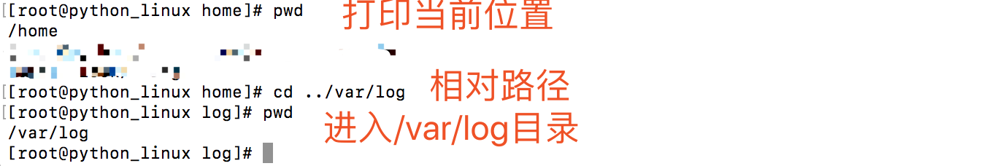</p>
<p>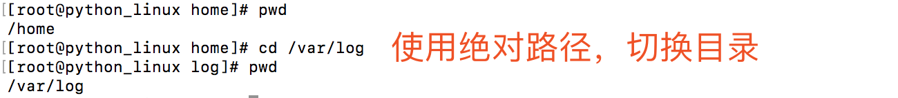</p>
<h3 id="&#x56FE;&#x89E3;&#x7EDD;&#x5BF9;&#x76F8;&#x5BF9;&#x8DEF;&#x5F84;"><a name="&#x56FE;&#x89E3;&#x7EDD;&#x5BF9;&#x76F8;&#x5BF9;&#x8DEF;&#x5F84;" class="plugin-anchor" href="#&#x56FE;&#x89E3;&#x7EDD;&#x5BF9;&#x76F8;&#x5BF9;&#x8DEF;&#x5F84;"><i class="fa fa-link" aria-hidden="true"></i></a>&#x56FE;&#x89E3;&#x7EDD;&#x5BF9;/&#x76F8;&#x5BF9;&#x8DEF;&#x5F84;</h3>
<p>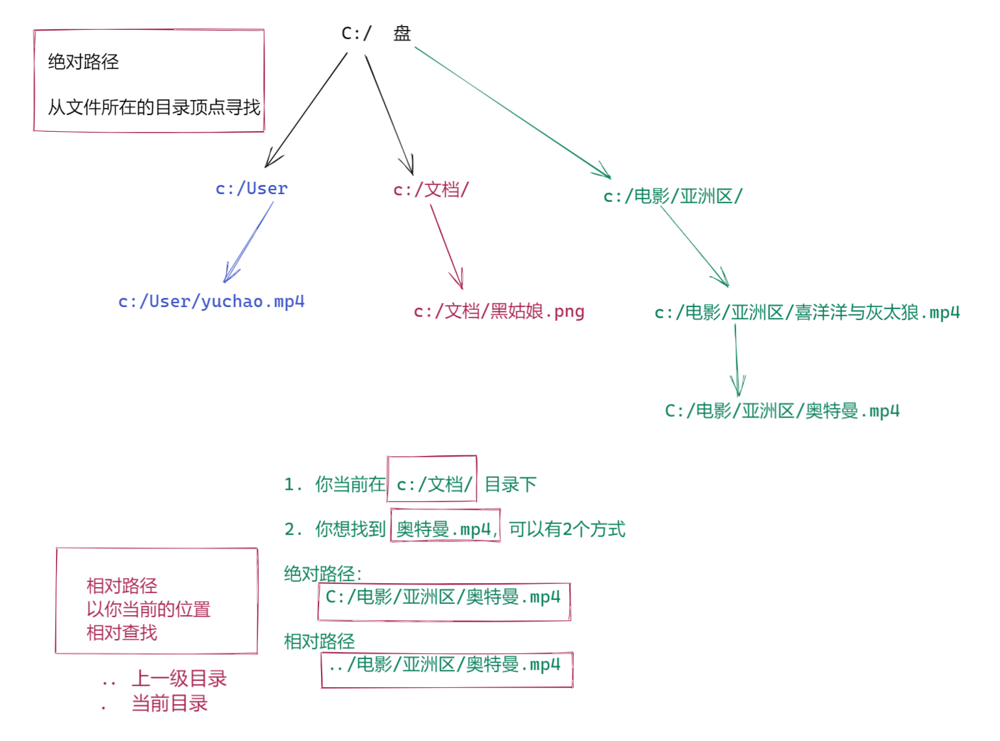</p>
<h3 id="linux&#x5E38;&#x89C1;&#x76EE;&#x5F55;&#x4F5C;&#x7528;"><a name="linux&#x5E38;&#x89C1;&#x76EE;&#x5F55;&#x4F5C;&#x7528;" class="plugin-anchor" href="#linux&#x5E38;&#x89C1;&#x76EE;&#x5F55;&#x4F5C;&#x7528;"><i class="fa fa-link" aria-hidden="true"></i></a>Linux&#x5E38;&#x89C1;&#x76EE;&#x5F55;&#x4F5C;&#x7528;</h3>
<p>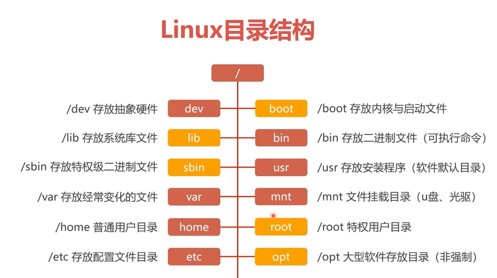</p>
<ul>
<li><p><strong>/bin</strong>&#xFF1A;bin&#x662F;Binary&#x7684;&#x7F29;&#x5199;, &#x8FD9;&#x4E2A;&#x76EE;&#x5F55;&#x5B58;&#x653E;&#x7740;&#x6700;&#x7ECF;&#x5E38;&#x4F7F;&#x7528;&#x7684;&#x547D;&#x4EE4;&#x3002;</p>
</li>
<li><p><strong>/boot&#xFF1A;</strong>&#x8FD9;&#x91CC;&#x5B58;&#x653E;&#x7684;&#x662F;&#x542F;&#x52A8;Linux&#x65F6;&#x4F7F;&#x7528;&#x7684;&#x4E00;&#x4E9B;&#x6838;&#x5FC3;&#x6587;&#x4EF6;&#xFF0C;&#x5305;&#x62EC;&#x4E00;&#x4E9B;&#x8FDE;&#x63A5;&#x6587;&#x4EF6;&#x4EE5;&#x53CA;&#x955C;&#x50CF;&#x6587;&#x4EF6;&#x3002;</p>
</li>
<li><p><strong>/dev &#xFF1A;</strong>dev&#x662F;Device(&#x8BBE;&#x5907;)&#x7684;&#x7F29;&#x5199;, &#x8BE5;&#x76EE;&#x5F55;&#x4E0B;&#x5B58;&#x653E;&#x7684;&#x662F;Linux&#x7684;&#x5916;&#x90E8;&#x8BBE;&#x5907;&#xFF0C;&#x5728;Linux&#x4E2D;&#x8BBF;&#x95EE;&#x8BBE;&#x5907;&#x7684;&#x65B9;&#x5F0F;&#x548C;&#x8BBF;&#x95EE;&#x6587;&#x4EF6;&#x7684;&#x65B9;&#x5F0F;&#x662F;&#x76F8;&#x540C;&#x7684;&#x3002;</p>
</li>
<li><p><strong>/etc&#xFF1A;</strong>&#x8FD9;&#x4E2A;&#x76EE;&#x5F55;&#x7528;&#x6765;&#x5B58;&#x653E;&#x6240;&#x6709;&#x7684;&#x7CFB;&#x7EDF;&#x7BA1;&#x7406;&#x6240;&#x9700;&#x8981;&#x7684;&#x914D;&#x7F6E;&#x6587;&#x4EF6;&#x548C;&#x5B50;&#x76EE;&#x5F55;&#x3002;</p>
</li>
<li><p><strong>/home</strong>&#xFF1A;&#x7528;&#x6237;&#x7684;&#x4E3B;&#x76EE;&#x5F55;&#xFF0C;&#x5728;Linux&#x4E2D;&#xFF0C;&#x6BCF;&#x4E2A;&#x7528;&#x6237;&#x90FD;&#x6709;&#x4E00;&#x4E2A;&#x81EA;&#x5DF1;&#x7684;&#x76EE;&#x5F55;&#xFF0C;&#x4E00;&#x822C;&#x8BE5;&#x76EE;&#x5F55;&#x540D;&#x662F;&#x4EE5;&#x7528;&#x6237;&#x7684;&#x8D26;&#x53F7;&#x547D;&#x540D;&#x7684;&#x3002;</p>
</li>
<li><p><strong>/lib</strong>&#xFF1A;&#x8FD9;&#x4E2A;&#x76EE;&#x5F55;&#x91CC;&#x5B58;&#x653E;&#x7740;&#x7CFB;&#x7EDF;&#x6700;&#x57FA;&#x672C;&#x7684;&#x52A8;&#x6001;&#x8FDE;&#x63A5;&#x5171;&#x4EAB;&#x5E93;&#xFF0C;&#x5176;&#x4F5C;&#x7528;&#x7C7B;&#x4F3C;&#x4E8E;Windows&#x91CC;&#x7684;DLL&#x6587;&#x4EF6;&#x3002;&#x51E0;&#x4E4E;&#x6240;&#x6709;&#x7684;&#x5E94;&#x7528;&#x7A0B;&#x5E8F;&#x90FD;&#x9700;&#x8981;&#x7528;&#x5230;&#x8FD9;&#x4E9B;&#x5171;&#x4EAB;&#x5E93;&#x3002;</p>
</li>
<li><p><strong>/lost+found</strong>&#xFF1A;&#x8FD9;&#x4E2A;&#x76EE;&#x5F55;&#x4E00;&#x822C;&#x60C5;&#x51B5;&#x4E0B;&#x662F;&#x7A7A;&#x7684;&#xFF0C;&#x5F53;&#x7CFB;&#x7EDF;&#x975E;&#x6CD5;&#x5173;&#x673A;&#x540E;&#xFF0C;&#x8FD9;&#x91CC;&#x5C31;&#x5B58;&#x653E;&#x4E86;&#x4E00;&#x4E9B;&#x6587;&#x4EF6;&#x3002;</p>
</li>
<li><p><strong>/media</strong>&#xFF1A;linux&#x7CFB;&#x7EDF;&#x4F1A;&#x81EA;&#x52A8;&#x8BC6;&#x522B;&#x4E00;&#x4E9B;&#x8BBE;&#x5907;&#xFF0C;&#x4F8B;&#x5982;U&#x76D8;&#x3001;&#x5149;&#x9A71;&#x7B49;&#x7B49;&#xFF0C;&#x5F53;&#x8BC6;&#x522B;&#x540E;&#xFF0C;linux&#x4F1A;&#x628A;&#x8BC6;&#x522B;&#x7684;&#x8BBE;&#x5907;&#x6302;&#x8F7D;&#x5230;&#x8FD9;&#x4E2A;&#x76EE;&#x5F55;&#x4E0B;&#x3002;</p>
</li>
<li><p><strong>/mnt</strong>&#xFF1A;&#x7CFB;&#x7EDF;&#x63D0;&#x4F9B;&#x8BE5;&#x76EE;&#x5F55;&#x662F;&#x4E3A;&#x4E86;&#x8BA9;&#x7528;&#x6237;&#x4E34;&#x65F6;&#x6302;&#x8F7D;&#x522B;&#x7684;&#x6587;&#x4EF6;&#x7CFB;&#x7EDF;&#x7684;&#xFF0C;&#x6211;&#x4EEC;&#x53EF;&#x4EE5;&#x5C06;&#x5149;&#x9A71;&#x6302;&#x8F7D;&#x5728;/mnt/&#x4E0A;&#xFF0C;&#x7136;&#x540E;&#x8FDB;&#x5165;&#x8BE5;&#x76EE;&#x5F55;&#x5C31;&#x53EF;&#x4EE5;&#x67E5;&#x770B;&#x5149;&#x9A71;&#x91CC;&#x7684;&#x5185;&#x5BB9;&#x4E86;&#x3002;</p>
</li>
<li><p><strong>/opt</strong>&#xFF1A; &#x8FD9;&#x662F;&#x7ED9;&#x4E3B;&#x673A;&#x989D;&#x5916;&#x5B89;&#x88C5;&#x8F6F;&#x4EF6;&#x6240;&#x6446;&#x653E;&#x7684;&#x76EE;&#x5F55;&#x3002;&#x6BD4;&#x5982;&#x4F60;&#x5B89;&#x88C5;&#x4E00;&#x4E2A;ORACLE&#x6570;&#x636E;&#x5E93;&#x5219;&#x5C31;&#x53EF;&#x4EE5;&#x653E;&#x5230;&#x8FD9;&#x4E2A;&#x76EE;&#x5F55;&#x4E0B;&#x3002;&#x9ED8;&#x8BA4;&#x662F;&#x7A7A;&#x7684;&#x3002;</p>
</li>
<li><p><strong>/proc</strong>&#xFF1A;&#x8FD9;&#x4E2A;&#x76EE;&#x5F55;&#x662F;&#x4E00;&#x4E2A;&#x865A;&#x62DF;&#x7684;&#x76EE;&#x5F55;&#xFF0C;&#x5B83;&#x662F;&#x7CFB;&#x7EDF;&#x5185;&#x5B58;&#x7684;&#x6620;&#x5C04;&#xFF0C;&#x6211;&#x4EEC;&#x53EF;&#x4EE5;&#x901A;&#x8FC7;&#x76F4;&#x63A5;&#x8BBF;&#x95EE;&#x8FD9;&#x4E2A;&#x76EE;&#x5F55;&#x6765;&#x83B7;&#x53D6;&#x7CFB;&#x7EDF;&#x4FE1;&#x606F;&#x3002;
&#x8FD9;&#x4E2A;&#x76EE;&#x5F55;&#x7684;&#x5185;&#x5BB9;&#x4E0D;&#x5728;&#x786C;&#x76D8;&#x4E0A;&#x800C;&#x662F;&#x5728;&#x5185;&#x5B58;&#x91CC;&#xFF0C;&#x6211;&#x4EEC;&#x4E5F;&#x53EF;&#x4EE5;&#x76F4;&#x63A5;&#x4FEE;&#x6539;&#x91CC;&#x9762;&#x7684;&#x67D0;&#x4E9B;&#x6587;&#x4EF6;&#xFF0C;&#x6BD4;&#x5982;&#x53EF;&#x4EE5;&#x901A;&#x8FC7;&#x4E0B;&#x9762;&#x7684;&#x547D;&#x4EE4;&#x6765;&#x5C4F;&#x853D;&#x4E3B;&#x673A;&#x7684;ping&#x547D;&#x4EE4;&#xFF0C;&#x4F7F;&#x522B;&#x4EBA;&#x65E0;&#x6CD5;ping&#x4F60;&#x7684;&#x673A;&#x5668;&#xFF1A;</p>
<pre><code>echo 1 &gt; /proc/sys/net/ipv4/icmp_echo_ignore_all
</code></pre></li>
<li><p><strong>/root</strong>&#xFF1A;&#x8BE5;&#x76EE;&#x5F55;&#x4E3A;&#x7CFB;&#x7EDF;&#x7BA1;&#x7406;&#x5458;&#xFF0C;&#x4E5F;&#x79F0;&#x4F5C;&#x8D85;&#x7EA7;&#x6743;&#x9650;&#x8005;&#x7684;&#x7528;&#x6237;&#x4E3B;&#x76EE;&#x5F55;&#x3002;</p>
</li>
<li><p><strong>/sbin</strong>&#xFF1A;s&#x5C31;&#x662F;Super User&#x7684;&#x610F;&#x601D;&#xFF0C;&#x8FD9;&#x91CC;&#x5B58;&#x653E;&#x7684;&#x662F;&#x7CFB;&#x7EDF;&#x7BA1;&#x7406;&#x5458;&#x4F7F;&#x7528;&#x7684;&#x7CFB;&#x7EDF;&#x7BA1;&#x7406;&#x7A0B;&#x5E8F;&#x3002;</p>
</li>
<li><p><strong>/selinux</strong>&#xFF1A; &#x8FD9;&#x4E2A;&#x76EE;&#x5F55;&#x662F;Redhat/CentOS&#x6240;&#x7279;&#x6709;&#x7684;&#x76EE;&#x5F55;&#xFF0C;Selinux&#x662F;&#x4E00;&#x4E2A;&#x5B89;&#x5168;&#x673A;&#x5236;&#xFF0C;&#x7C7B;&#x4F3C;&#x4E8E;windows&#x7684;&#x9632;&#x706B;&#x5899;&#xFF0C;&#x4F46;&#x662F;&#x8FD9;&#x5957;&#x673A;&#x5236;&#x6BD4;&#x8F83;&#x590D;&#x6742;&#xFF0C;&#x8FD9;&#x4E2A;&#x76EE;&#x5F55;&#x5C31;&#x662F;&#x5B58;&#x653E;selinux&#x76F8;&#x5173;&#x7684;&#x6587;&#x4EF6;&#x7684;&#x3002;</p>
</li>
<li><p><strong>/srv</strong>&#xFF1A; &#x8BE5;&#x76EE;&#x5F55;&#x5B58;&#x653E;&#x4E00;&#x4E9B;&#x670D;&#x52A1;&#x542F;&#x52A8;&#x4E4B;&#x540E;&#x9700;&#x8981;&#x63D0;&#x53D6;&#x7684;&#x6570;&#x636E;&#x3002;</p>
</li>
<li><p><strong>/sys</strong>&#xFF1A;&#x8FD9;&#x662F;linux2.6&#x5185;&#x6838;&#x7684;&#x4E00;&#x4E2A;&#x5F88;&#x5927;&#x7684;&#x53D8;&#x5316;&#x3002;&#x8BE5;&#x76EE;&#x5F55;&#x4E0B;&#x5B89;&#x88C5;&#x4E86;2.6&#x5185;&#x6838;&#x4E2D;&#x65B0;&#x51FA;&#x73B0;&#x7684;&#x4E00;&#x4E2A;&#x6587;&#x4EF6;&#x7CFB;&#x7EDF; sysfs &#x3002;</p>
<p>sysfs&#x6587;&#x4EF6;&#x7CFB;&#x7EDF;&#x96C6;&#x6210;&#x4E86;&#x4E0B;&#x9762;3&#x79CD;&#x6587;&#x4EF6;&#x7CFB;&#x7EDF;&#x7684;&#x4FE1;&#x606F;&#xFF1A;&#x9488;&#x5BF9;&#x8FDB;&#x7A0B;&#x4FE1;&#x606F;&#x7684;proc&#x6587;&#x4EF6;&#x7CFB;&#x7EDF;&#x3001;&#x9488;&#x5BF9;&#x8BBE;&#x5907;&#x7684;devfs&#x6587;&#x4EF6;&#x7CFB;&#x7EDF;&#x4EE5;&#x53CA;&#x9488;&#x5BF9;&#x4F2A;&#x7EC8;&#x7AEF;&#x7684;devpts&#x6587;&#x4EF6;&#x7CFB;&#x7EDF;&#x3002;&#x8BE5;&#x6587;&#x4EF6;&#x7CFB;&#x7EDF;&#x662F;&#x5185;&#x6838;&#x8BBE;&#x5907;&#x6811;&#x7684;&#x4E00;&#x4E2A;&#x76F4;&#x89C2;&#x53CD;&#x6620;&#x3002;&#x5F53;&#x4E00;&#x4E2A;&#x5185;&#x6838;&#x5BF9;&#x8C61;&#x88AB;&#x521B;&#x5EFA;&#x7684;&#x65F6;&#x5019;&#xFF0C;&#x5BF9;&#x5E94;&#x7684;&#x6587;&#x4EF6;&#x548C;&#x76EE;&#x5F55;&#x4E5F;&#x5728;&#x5185;&#x6838;&#x5BF9;&#x8C61;&#x5B50;&#x7CFB;&#x7EDF;&#x4E2D;&#x88AB;&#x521B;&#x5EFA;&#x3002;</p>
</li>
<li><p><strong>/tmp</strong>&#xFF1A;&#x8FD9;&#x4E2A;&#x76EE;&#x5F55;&#x662F;&#x7528;&#x6765;&#x5B58;&#x653E;&#x4E00;&#x4E9B;&#x4E34;&#x65F6;&#x6587;&#x4EF6;&#x7684;&#x3002;</p>
</li>
<li><p><strong>/usr</strong>&#xFF1A;&#x8FD9;&#x662F;&#x4E00;&#x4E2A;&#x975E;&#x5E38;&#x91CD;&#x8981;&#x7684;&#x76EE;&#x5F55;&#xFF0C;&#x7528;&#x6237;&#x7684;&#x5F88;&#x591A;&#x5E94;&#x7528;&#x7A0B;&#x5E8F;&#x548C;&#x6587;&#x4EF6;&#x90FD;&#x653E;&#x5728;&#x8FD9;&#x4E2A;&#x76EE;&#x5F55;&#x4E0B;&#xFF0C;&#x7C7B;&#x4F3C;&#x4E8E;windows&#x4E0B;&#x7684;program files&#x76EE;&#x5F55;&#x3002;</p>
</li>
<li><p><strong>/usr/bin&#xFF1A;</strong>&#x7CFB;&#x7EDF;&#x7528;&#x6237;&#x4F7F;&#x7528;&#x7684;&#x5E94;&#x7528;&#x7A0B;&#x5E8F;&#x3002;</p>
</li>
<li><p><strong>/usr/sbin&#xFF1A;</strong>&#x8D85;&#x7EA7;&#x7528;&#x6237;&#x4F7F;&#x7528;&#x7684;&#x6BD4;&#x8F83;&#x9AD8;&#x7EA7;&#x7684;&#x7BA1;&#x7406;&#x7A0B;&#x5E8F;&#x548C;&#x7CFB;&#x7EDF;&#x5B88;&#x62A4;&#x7A0B;&#x5E8F;&#x3002;</p>
</li>
<li><p><strong>/usr/src&#xFF1A;</strong>&#x5185;&#x6838;&#x6E90;&#x4EE3;&#x7801;&#x9ED8;&#x8BA4;&#x7684;&#x653E;&#x7F6E;&#x76EE;&#x5F55;&#x3002;</p>
</li>
<li><p><strong>/var</strong>&#xFF1A;&#x8FD9;&#x4E2A;&#x76EE;&#x5F55;&#x4E2D;&#x5B58;&#x653E;&#x7740;&#x5728;&#x4E0D;&#x65AD;&#x6269;&#x5145;&#x7740;&#x7684;&#x4E1C;&#x897F;&#xFF0C;&#x6211;&#x4EEC;&#x4E60;&#x60EF;&#x5C06;&#x90A3;&#x4E9B;&#x7ECF;&#x5E38;&#x88AB;&#x4FEE;&#x6539;&#x7684;&#x76EE;&#x5F55;&#x653E;&#x5728;&#x8FD9;&#x4E2A;&#x76EE;&#x5F55;&#x4E0B;&#x3002;&#x5305;&#x62EC;&#x5404;&#x79CD;&#x65E5;&#x5FD7;&#x6587;&#x4EF6;&#x3002;</p>
</li>
</ul>
<p>&#x5728;linux&#x7CFB;&#x7EDF;&#x4E2D;&#xFF0C;&#x6709;&#x51E0;&#x4E2A;&#x76EE;&#x5F55;&#x662F;&#x6BD4;&#x8F83;&#x91CD;&#x8981;&#x7684;&#xFF0C;&#x5E73;&#x65F6;&#x9700;&#x8981;&#x6CE8;&#x610F;&#x4E0D;&#x8981;&#x8BEF;&#x5220;&#x9664;&#x6216;&#x8005;&#x968F;&#x610F;&#x66F4;&#x6539;&#x5185;&#x90E8;&#x6587;&#x4EF6;&#x3002;</p>
<p><strong>/etc&#xFF1A; &#x4E0A;&#x8FB9;&#x4E5F;&#x63D0;&#x5230;&#x4E86;&#xFF0C;&#x8FD9;&#x4E2A;&#x662F;&#x7CFB;&#x7EDF;&#x4E2D;&#x7684;&#x914D;&#x7F6E;&#x6587;&#x4EF6;&#xFF0C;&#x5982;&#x679C;&#x4F60;&#x66F4;&#x6539;&#x4E86;&#x8BE5;&#x76EE;&#x5F55;&#x4E0B;&#x7684;&#x67D0;&#x4E2A;&#x6587;&#x4EF6;&#x53EF;&#x80FD;&#x4F1A;&#x5BFC;&#x81F4;&#x7CFB;&#x7EDF;&#x4E0D;&#x80FD;&#x542F;&#x52A8;&#x3002;</strong></p>
<p><strong>/bin, /sbin, /usr/bin, /usr/sbin: &#x8FD9;&#x662F;&#x7CFB;&#x7EDF;&#x9884;&#x8BBE;&#x7684;&#x6267;&#x884C;&#x6587;&#x4EF6;&#x7684;&#x653E;&#x7F6E;&#x76EE;&#x5F55;&#xFF0C;&#x6BD4;&#x5982; ls &#x5C31;&#x662F;&#x5728;/bin/ls &#x76EE;&#x5F55;&#x4E0B;&#x7684;&#x3002;</strong></p>
<p><strong>&#x503C;&#x5F97;&#x63D0;&#x51FA;&#x7684;&#x662F;&#xFF0C;/bin, /usr/bin &#x662F;&#x7ED9;&#x7CFB;&#x7EDF;&#x7528;&#x6237;&#x4F7F;&#x7528;&#x7684;&#x6307;&#x4EE4;&#xFF08;&#x9664;root&#x5916;&#x7684;&#x901A;&#x7528;&#x6237;&#xFF09;&#xFF0C;&#x800C;/sbin, /usr/sbin &#x5219;&#x662F;&#x7ED9;root&#x4F7F;&#x7528;&#x7684;&#x6307;&#x4EE4;&#x3002;</strong></p>
<p><strong>/var&#xFF1A; &#x8FD9;&#x662F;&#x4E00;&#x4E2A;&#x975E;&#x5E38;&#x91CD;&#x8981;&#x7684;&#x76EE;&#x5F55;&#xFF0C;&#x7CFB;&#x7EDF;&#x4E0A;&#x8DD1;&#x4E86;&#x5F88;&#x591A;&#x7A0B;&#x5E8F;&#xFF0C;&#x90A3;&#x4E48;&#x6BCF;&#x4E2A;&#x7A0B;&#x5E8F;&#x90FD;&#x4F1A;&#x6709;&#x76F8;&#x5E94;&#x7684;&#x65E5;&#x5FD7;&#x4EA7;&#x751F;&#xFF0C;&#x800C;&#x8FD9;&#x4E9B;&#x65E5;&#x5FD7;&#x5C31;&#x88AB;&#x8BB0;&#x5F55;&#x5230;&#x8FD9;&#x4E2A;&#x76EE;&#x5F55;&#x4E0B;&#xFF0C;&#x5177;&#x4F53;&#x5728;/var/log &#x76EE;&#x5F55;&#x4E0B;&#xFF0C;&#x53E6;&#x5916;mail&#x7684;&#x9884;&#x8BBE;&#x653E;&#x7F6E;&#x4E5F;&#x662F;&#x5728;&#x8FD9;&#x91CC;&#x3002;</strong></p>
<h3 id="linux&#x8F6F;&#x4EF6;&#x5B89;&#x88C5;&#x5230;&#x54EA;"><a name="linux&#x8F6F;&#x4EF6;&#x5B89;&#x88C5;&#x5230;&#x54EA;" class="plugin-anchor" href="#linux&#x8F6F;&#x4EF6;&#x5B89;&#x88C5;&#x5230;&#x54EA;"><i class="fa fa-link" aria-hidden="true"></i></a>Linux&#x8F6F;&#x4EF6;&#x5B89;&#x88C5;&#x5230;&#x54EA;</h3>
<p></p>
<h1 id=""><a name="" class="plugin-anchor" href="#"><i class="fa fa-link" aria-hidden="true"></i></a> </h1>
<footer class="page-footer"><span class="copyright">Copyright &#xA9; www.bikongge.com 2024 all right reserved&#xFF0C;powered by Gitbook</span><span class="footer-modification">&#x4F5C;&#x8005;&#xFF1A;&#x733F;&#x6765;&#x6559;&#x80B2;
2024-05-11 17:46:31
</span></footer>
<script>console.log("plugin-popup....");document.onclick = function(e){ e.target.tagName === "IMG" && window.open(e.target.src,e.target.src)}</script><style>img{cursor:pointer}</style>
                                
                                </section>
                            
    </div>
    <div class="search-results">
        <div class="has-results">
            
            <h1 class="search-results-title"><span class='search-results-count'></span> results matching "<span class='search-query'></span>"</h1>
            <ul class="search-results-list"></ul>
            
        </div>
        <div class="no-results">
            
            <h1 class="search-results-title">No results matching "<span class='search-query'></span>"</h1>
            
        </div>
    </div>
</div>

                        </div>
                    </div>
                
            </div>

            

        
    </div>

    <script>
        var gitbook = gitbook || [];
        gitbook.push(function() {
            gitbook.page.hasChanged({"page":{"title":"07_Linux快速入门","level":"1.2.7","depth":2,"next":{"title":"08_linux文件管理篇一","level":"1.2.8","depth":2,"path":"01-linux核心基础/08_linux文件管理篇一.md","ref":"01-linux核心基础/08_linux文件管理篇一.md","articles":[]},"previous":{"title":"06_vmware安装Linux","level":"1.2.6","depth":2,"path":"01-linux核心基础/06_vmware安装Linux.md","ref":"01-linux核心基础/06_vmware安装Linux.md","articles":[]},"dir":"ltr"},"config":{"gitbook":"*","theme":"default","variables":{},"plugins":["anchors","theme-comscore","theme-api","hide-element","-highlight","advanced-emoji","-lunr","-search","search-pro","page-toc-button","back-to-top-button","chapter-fold","code","splitter","-lunr","-search","search-pro","insert-logo","custom-favicon","pageview-count","tbfed-pagefooter","popup","-sharing","sharing-plus"],"pluginsConfig":{"tbfed-pagefooter":{"copyright":"Copyright &copy www.bikongge.com 2024","modify_label":"作者：猿来教育"},"chapter-fold":{},"splitter":{},"search-pro":{},"sharing-plus":{"qq":false,"all":["facebook","google","twitter","instapaper","linkedin","pocket","stumbleupon"],"douban":false,"facebook":true,"weibo":false,"instapaper":false,"whatsapp":false,"hatenaBookmark":false,"twitter":true,"messenger":false,"line":false,"vk":false,"pocket":true,"google":false,"viber":false,"stumbleupon":false,"qzone":false,"linkedin":false},"popup":{},"code":{"copyButtons":true},"hide-element":{"elements":[".gitbook-link"]},"fontsettings":{"theme":"white","family":"sans","size":2},"favicon":"./icon/book.ico","theme-comscore":{},"page-toc-button":{},"theme-api":{"languages":[{"lang":"python","name":"python","default":true},{"lang":"python","name":"python"}],"split":true,"theme":"light"},"back-to-top-button":{},"pageview-count":{},"custom-favicon":{},"advanced-emoji":{"embedEmojis":false},"sharing":{"qq":true,"all":["douban","facebook","google","instapaper","linkedin","twitter","weibo","messenger","qq","qzone","viber","whatsapp"],"douban":true,"facebook":true,"weibo":true,"twitter":true,"pocket":true,"google":true,"qzone":true},"theme-default":{"styles":{"website":"styles/website.css","pdf":"styles/pdf.css","epub":"styles/epub.css","mobi":"styles/mobi.css","ebook":"styles/ebook.css","print":"styles/print.css"},"showLevel":false},"anchors":{},"insert-logo":{"style":"background: none; max-height: 100px; min-height: 100px","url":"https://s1.ax1x.com/2022/10/25/xRowNj.jpg"}},"structure":{"langs":"LANGS.md","readme":"README.md","glossary":"GLOSSARY.md","summary":"SUMMARY.md"},"pdf":{"pageNumbers":true,"fontSize":12,"fontFamily":"Arial","paperSize":"a4","chapterMark":"pagebreak","pageBreaksBefore":"/","margin":{"right":62,"left":62,"top":56,"bottom":56}},"styles":{"website":"styles/website.css","pdf":"styles/pdf.css","epub":"styles/epub.css","mobi":"styles/mobi.css","ebook":"styles/ebook.css","print":"styles/print.css"}},"file":{"path":"01-linux核心基础/07_Linux快速入门.md","mtime":"2024-05-11T09:46:31.686Z","type":"markdown"},"gitbook":{"version":"3.2.3","time":"2024-05-17T07:32:03.155Z"},"basePath":"..","book":{"language":""}});
        });
    </script>
</div>

        
    <script src="../gitbook/gitbook.js"></script>
    <script src="../gitbook/theme.js"></script>
    
        
        <script src="../gitbook/gitbook-plugin-hide-element/plugin.js"></script>
        
    
        
        <script src="../gitbook/gitbook-plugin-search-pro/jquery.mark.min.js"></script>
        
    
        
        <script src="../gitbook/gitbook-plugin-search-pro/search.js"></script>
        
    
        
        <script src="../gitbook/gitbook-plugin-page-toc-button/plugin.js"></script>
        
    
        
        <script src="../gitbook/gitbook-plugin-back-to-top-button/plugin.js"></script>
        
    
        
        <script src="../gitbook/gitbook-plugin-chapter-fold/chapter-fold.js"></script>
        
    
        
        <script src="../gitbook/gitbook-plugin-code/plugin.js"></script>
        
    
        
        <script src="../gitbook/gitbook-plugin-splitter/splitter.js"></script>
        
    
        
        <script src="../gitbook/gitbook-plugin-insert-logo/plugin.js"></script>
        
    
        
        <script src="../gitbook/gitbook-plugin-pageview-count/plugin.js"></script>
        
    
        
        <script src="../gitbook/gitbook-plugin-sharing-plus/buttons.js"></script>
        
    
        
        <script src="../gitbook/gitbook-plugin-fontsettings/fontsettings.js"></script>
        
    
        
        <script src="../gitbook/gitbook-plugin-theme-comscore/test.js"></script>
        
    
        
        <script src="../gitbook/gitbook-plugin-theme-api/theme-api.js"></script>
        
    

    </body>
</html>

